生成时间：2026-08-06T11:23:22+08:00
今日保留论文数：8
内容构成：今日新文 8 篇；补充推荐 0 篇；经典旧文精读 0 篇
高能天体物理重点
1. Observation of the Moon and Sun shadows with cosmic rays at an average energy of $\text{7}{\times}\text{10}^\text{17}\,$eV
- 来源：arXiv / astro-ph.HE
- 链接：https://arxiv.org/abs/2608.04658v1
- 作者：The Pierre Auger Collaboration, A. Abdul Halim, P. Abreu, M. Aglietta, M. Ahmed, I. Allekotte, K. Almeida Cheminant, R. Aloisio
- 评分：novelty 8/10，importance 8/10，relevance 9/10，final 9.35/10
- 推荐理由：Pierre Auger首次在约7e17 eV宇宙线能区探测月影和日影，用于验证地表阵列指向和角分辨率；UHECR仪器/方法结果明确，专业相关性很高。
中文题目：皮埃尔·奥热天文台在平均能量 \(7\times10^{17}\,\mathrm{eV}\) 的宇宙线中观测到月影和日影
做了什么：这篇论文用皮埃尔·奥热天文台三个地面探测器阵列、总计超过 \(1.06\times10^{7}\) 个空气簇射事件，寻找月球和太阳遮挡近各向同性宇宙线通量后留下的到达方向亏损。此前月影和日影主要在 \(10^{12}\)--\(10^{16}\,\mathrm{eV}\) 能区被观测到；本文把这一检验推进到平均能量约 \(7\times10^{17}\,\mathrm{eV}\)。作者以月球和太阳的瞬时天球位置为中心构造相对到达方向图，比较遮挡模型与无阴影模型，得到月影和日影合并约 \(3\sigma\) 的探测显著性，并由阴影宽度推断奥热地面阵列整体角分辨率为 \((0.59^{+0.15}_{-0.11})^\circ\)。
为什么重要：在超高能宇宙线研究中，源定位受磁偏转、组成不确定性和阵列重建系统误差共同限制。月影和日影不是为了寻找源，而是一个几何上非常干净的标尺：天体角直径已知、遮挡位置可精确计算、亏损方向应随天体运动而移动。因此在 \(10^{17}\)--\(10^{18}\,\mathrm{eV}\) 能区看到阴影，等价于用真实天空事件验证地面阵列的绝对指向和角分辨率。
理论 / 观测 / 仪器方法价值：本文的主要价值在仪器和方法层面：它给出奥热地面探测器在高能端的独立天文校准，补充了通常依赖阵列几何、混合探测和模拟得到的角分辨率估计。对理论而言，它也给出一个约束磁偏转和太阳磁场影响的实测窗口；对观测而言，它说明即使在事件率很低、阴影只表现为微弱亏损的超高能区，仍可通过大曝光量和正确的背景估计做出天空几何检验。
为什么应该关注：如果你关心超高能宇宙线各向异性、源关联或多信使交叉匹配，那么到达方向误差是否可信是基础问题。本文不是一个高显著性新源发现，而是对奥热阵列“看向哪里”的实测验收：\(0.6^\circ\) 量级的角分辨率会直接进入点源搜索、星系目录相关、偶极和小尺度聚集分析的系统误差预算。
展开详细解读：文章讲解、背景、理论、重点章节、图表与相关工作
文章详细讲解
科学问题：月球和太阳会遮挡来自其视圆面方向的宇宙线，因此在宇宙线到达方向图上产生一个角尺度约为天体视半径、再被探测器角分辨率和磁偏转展宽的亏损区。这个“阴影”在 \(\mathrm{TeV}\) 到 \(\mathrm{PeV}\) 能区已经由多个空气簇射阵列和地下缪子实验观测过，但在 \(10^{16}\,\mathrm{eV}\) 以上，事件率迅速下降，传统月影分析很难积累足够统计量。本文要回答的是：皮埃尔·奥热天文台能否在平均能量 \(7\times10^{17}\,\mathrm{eV}\) 附近真实看见月影和日影，并用它们校准地面阵列的指向精度？
作者怎么做：论文使用奥热地面探测器的三个阵列，分别是覆盖约 \(3000\,\mathrm{km^2}\) 的 \(1500\,\mathrm{m}\) 间距主阵列、覆盖约 \(27\,\mathrm{km^2}\) 的 \(750\,\mathrm{m}\) 阵列，以及覆盖约 \(2\,\mathrm{km^2}\) 的 \(433\,\mathrm{m}\) 更密集阵列。三个阵列对应不同能量阈值和曝光，合并后事件数超过 \(1.06\times10^{7}\)。作者把每个宇宙线事件的重建方向转换到相对于月球或太阳当时天球位置的局部坐标中，累积二维角分布，并用无阴影各向同性背景与带有限角分辨率卷积的遮挡模型进行比较。
关键结果：月影和日影单独都只是边缘显著，但合并后达到约 \(3\sigma\) 的证据级别。这一点很重要，因为阴影不是事件过量而是小幅亏损，统计功效取决于遮挡圆盘面积、点扩散函数、局部背景估计和长期曝光均匀性。作者进一步把月球与太阳的阴影宽度解释为天体视圆盘、探测器点扩散函数和可能磁偏转共同作用后的结果，从合并阴影推得整体角分辨率 \((0.59^{+0.15}_{-0.11})^\circ\)。这个数值与奥热地面阵列基于重建和模拟的角分辨率预期相容。
局限和下一步：显著性约 \(3\sigma\) 说明这是一次仪器校准意义强于物理发现的探测，尚不足以精细分解月影与日影的偏移、太阳磁场调制或宇宙线电荷组成效应。日影尤其会受太阳风、日球电流片和太阳活动周期影响；月影则更适合作为几何指向检验，但高能端磁偏转较小、阴影角尺度接近仪器分辨率，需要更大统计量。下一步可随奥热升级数据积累，分能段、分阵列、分太阳活动期拟合阴影位置和形状，并把该结果并入超高能宇宙线各向异性分析的系统误差模型。
关键结果是怎么做出来的
数据和样本选择的核心是把三个不同间距的水切伦科夫地面阵列统一用于“相对天体位置”的阴影搜索。主阵列提供最大曝光和最高能事件，\(750\,\mathrm{m}\) 与 \(433\,\mathrm{m}\) 阵列补充较低能段和较高事件率。论文摘要给出的总事件数超过 \(1.06\times10^{7}\)，平均能量约 \(7\times10^{17}\,\mathrm{eV}\)。读者应注意，这个平均能量不是单能束能量，而是由触发效率、阵列几何、宇宙线谱和分析选择共同加权后的有效能量。
证据链的第一步是构造以月球或太阳为原点的事件密度图。若宇宙线各向同性且无遮挡，相对坐标图应在小角尺度上近似平滑；若存在阴影，则在原点附近出现与天体视半径和点扩散函数卷积后的亏损。作者不是寻找固定赤经赤纬上的缺口，而是跟随月球和太阳在天球上的运动，这可以平均掉许多固定探测器坐标或局部天空曝光的不均匀性。
显著性来自无阴影模型与有阴影模型的统计比较。由于每个角区间的计数可视作泊松变量，最自然的检验量是似然比或等价的 \(\chi^2\) 改善；论文给出月影与日影合并约 \(3\sigma\)。专业读者应检查作者是否报告了局部显著性还是经过搜索范围修正后的显著性，以及月影、日影、合并样本之间是否共享角分辨率参数。若阴影中心位置、宽度和归一化都允许自由变化，有效自由度会影响显著性解释。
支撑结论的图表通常应包括相对月球和太阳方向的二维亏损图、径向亏损剖面、似然或 \(\Delta\chi^2\) 随角分辨率变化曲线，以及各阵列或各能段的交叉检查。最关键的是：亏损是否集中在预期位置附近，径向剖面是否具有遮挡圆盘卷积后的形状，而不是由局部曝光梯度或边界选择造成的宽浅结构。
主要系统误差包括到达方向重建偏差、阵列时间同步、探测器活跃面积随时间变化、太阳和月球附近曝光估计、能量分布差异，以及磁场引起的电荷依赖偏转。稳健性检验应看分阵列结果是否相容、改变角窗口或背景估计方法后显著性是否稳定、月影和日影合并是否由单一子样本主导。本文给出的 \((0.59^{+0.15}_{-0.11})^\circ\) 角分辨率若在这些检验下稳定，才可作为后续各向异性研究的外部校准输入。
展开背景、理论、公式、模型、章节和图表导读
背景知识
宇宙线月影是一个经典的高能宇宙线“负源”。月球本身不发射高能宇宙线，但它挡住从其视圆面方向来的带电粒子，于是地面阵列在月球相对方向上看到计数亏损。因为月球轨道和视半径精确已知，月影长期被用来检查空气簇射阵列的指向、角分辨率和能标相关的磁偏转。
日影物理上更复杂。太阳也会遮挡宇宙线，但太阳附近存在行星际磁场、太阳风结构和太阳活动周期变化，带电宇宙线在到达地球前会被偏折。因此日影的位置、形状和深度不仅反映仪器分辨率，也包含日球磁场的信息。在较低能区，日影常常比月影更宽、更浅、更随时间变化。
历史上，月影和日影在 \(\mathrm{TeV}\) 到 \(\mathrm{PeV}\) 能区由 Tibet AS\(\gamma\)、ARGO-YBJ、Milagro、HAWC、IceCube 等实验多次观测。那些能区事件率高，阴影显著性可很高，还能用月影东西向偏移校准能标或研究正反粒子比例。但到 \(10^{17}\,\mathrm{eV}\) 以上，宇宙线流量急剧降低，单靠阴影缺口需要巨大的曝光量，因而此前缺少直接观测。
现在值得重看这个问题，是因为奥热天文台积累了多年、超大面积、稳定运行的地面阵列数据，并且其科学目标越来越依赖到达方向精度：例如大尺度偶极、与邻近星系结构的相关、小角尺度聚集和与高能中微子或伽马瞬变的交叉匹配。一个由天体遮挡给出的实测角分辨率，比只从模拟或阵列内部重建误差得到的估计更有说服力。
常见误区之一是把月影当作“月球附近少了宇宙线源”。实际上宇宙线在这些能量上近似各向同性，阴影是遮挡造成的计数亏损，不是天体物理源分布变化。另一个误区是认为看到日影就能直接测太阳磁场；在 \(10^{17}\)--\(10^{18}\,\mathrm{eV}\) 能区，偏转较小且统计有限，本文主要用途仍是指向和角分辨率检验，而不是精细日球物理反演。
基础理论 / 方法脉络
基本物理图像很简单：若入射宇宙线通量在月球或太阳附近的角尺度上近似各向同性，那么没有遮挡时探测器记录的事件密度只由曝光和角分辨率决定。月球或太阳占据一个半径约 \(0.25^\circ\) 的视圆盘，来自该圆盘方向的宇宙线被吸收，于是天空图中出现一个负的圆盘源。
真实地面阵列不能测到原初粒子方向，而是通过空气簇射到达地面的粒子时间前沿和信号分布重建方向。点扩散函数通常可近似为二维高斯或近似轴对称核，其宽度由站点间距、触发站数、簇射几何、信号时间分辨率和重建算法决定。阴影观测到的宽度等于天体视圆盘与点扩散函数卷积后的宽度，再加上带电粒子在地磁场和日球磁场中的偏转。
本文的关键量包括事件相对于月球或太阳的角距离、二维亏损幅度、阴影中心偏移、有效角分辨率和似然比显著性。由于宇宙线谱很陡，样本的平均能量会受触发阈值附近事件主导；因此不同阵列、不同天顶角和不同质量组成假设会对应不同有效刚度 \(R=pc/(Ze)\)。
常见退化关系是角分辨率与磁偏转展宽之间的退化：阴影变宽既可能是仪器分辨率较差，也可能是不同电荷和能量的宇宙线被磁场分散。月影受地磁场影响，日影还受太阳磁场影响；但在 \(7\times10^{17}\,\mathrm{eV}\) 平均能量下，刚度很高，磁偏转相对 \(\mathrm{TeV}\) 能区小得多，因此阴影宽度更直接地约束阵列角分辨率。
数据分析上，核心不是对全天图做源搜索，而是在每个事件时间计算月球或太阳的位置，再把事件方向投影到以该天体为中心的局部坐标。这样可以把一个随时间移动的遮挡信号叠加成固定在原点的亏损，同时把固定天球结构和许多探测器坐标效应平均掉。
公式与推导
从近似各向同性宇宙线通量出发，单位实能、单位立体角、单位面积、单位时间的微分通量可写为
这里 \(J(E)\) 是宇宙线微分能谱，\(E\) 是原初粒子能量，\(\Omega\) 是天球立体角。这个式子表达了阴影分析的零阶假设：在月球或太阳附近几度尺度内，真实通量没有强的天体物理梯度。
地面阵列在方向 \(\hat n\) 上的期望计数为
其中 \(A_{\rm eff}\) 是有效面积或接受度，包含触发效率、阵列活跃状态和天顶角依赖。无阴影模型 \(\mu_0\) 应由数据驱动背景或曝光模型估计。
月球或太阳可近似为角半径 \(\theta_b\) 的完全吸收圆盘，其遮挡函数为
其中 \(\theta\) 是事件真实方向与天体中心的夹角。对月球和太阳，\(\theta_b\) 约为 \(0.25^\circ\)，但会随距离有小变化。
若探测器点扩散函数为轴对称二维高斯，
则 \(s\) 表示单轴角宽度，\(\Delta\theta\) 是真实方向与重建方向的角差。在小角近似下，观测到的阴影是遮挡圆盘与 \(P\) 的卷积。
带阴影的期望计数可写为
其中 \(\boldsymbol{x}\) 是相对天体中心的二维角坐标，\(f\) 是阴影深度归一化，\(\boldsymbol{\delta}\) 是可能的阴影中心偏移。若遮挡完全且背景估计无偏，\(f\) 应接近 \(1\)，但实际拟合可允许它吸收曝光和组成效应。
观测阴影宽度可近似满足
其中 \(s_{\rm det}\) 是探测器角分辨率，\(s_b\) 是有限天体圆盘带来的等效宽度，\(s_{\rm mag}\) 是磁偏转和能量、电荷分布引起的展宽。本文由月影和日影合并约束的主要就是 \(s_{\rm det}\) 或等效总角分辨率。
磁偏转的量级可用刚度估计：
其中 \(Z\) 是电荷数，\(e\) 是元电荷，\(B_\perp\) 是垂直于粒子速度的磁场分量，\(l\) 是传播路径。该式说明高能、大刚度粒子的偏转随 \(E^{-1}\) 下降，但组成不确定性会通过 \(Z\) 进入。
对分箱计数 \(k_i\)，泊松似然为
其中 \(\mu_i\) 可取无阴影模型 \(\mu_{0,i}\) 或带阴影模型 \(\mu_{{\rm sh},i}\)。这是把亏损图转化为显著性的基本统计语言。
阴影探测显著性通常来自似然比检验量
在正则条件下，\(TS\) 可近似映射为高斯显著性 \(Z_{\rm sig}\simeq\sqrt{TS}\)，但当参数边界、搜索位置或宽度自由度存在时，需要用模拟或试验因子修正。本文报告的合并显著性约为 \(3\sigma\)，应按证据级仪器校准结果理解。
模型拟合 / 应用方法
本文拟合的核心对象是以月球或太阳为中心的相对到达方向计数图。模型参数通常包括阴影中心位置、阴影深度、角分辨率或点扩散函数宽度，以及可能的局部背景归一化和梯度项。若作者固定天体视半径并采用轴对称点扩散函数，则宽度参数最直接对应阵列角分辨率。
似然可采用泊松计数似然，也可在高计数近似下使用 \(\chi^2\) 或残差图。专业读者应重点看残差是否在阴影外随机分布，是否存在沿赤经、赤纬、天顶角或相对方位角的系统梯度。因为信号是亏损而不是过量，背景稍有偏差就可能伪造宽浅的阴影或稀释真实阴影。
参数退化主要有三类。第一是阴影深度与背景归一化退化：若局部背景估计偏高，会增强亏损；偏低则削弱亏损。第二是角分辨率与磁展宽退化：更宽的点扩散函数和更大的能量、电荷混合偏转都能产生更宽阴影。第三是中心偏移与阵列指向偏差退化：月影偏移可能来自仪器指向，也可能来自地磁偏转；日影还可能来自太阳磁场结构。
系统误差估计应包括事件方向重建、时间戳精度、阵列站点位置、活跃探测器变化、能量阈值、天顶角选择、质量组成假设和背景构造方法。若三个阵列分别拟合得到的阴影位置和宽度相容，说明合并结果不太可能由单一阵列的重建偏差主导。若月影与日影给出的角分辨率相容，也支持把合并宽度解释为仪器分辨率。
实际应用上，这个拟合结果可以进入奥热各向异性分析的点扩散函数先验。比如在与星系目录或中微子事件做角关联时，\((0.59^{+0.15}_{-0.11})^\circ\) 这样的实测分辨率给出了最小角窗的合理尺度；若使用比这更小的相关角，需要明确说明物理磁偏转和仪器误差并不能支持。
重点章节 / 结果段落怎么读
数据和探测器部分应先读。重点是三个阵列的覆盖面积、站点间距、触发条件、能量范围和事件选择。读者需要确认超过 \(1.06\times10^{7}\) 个事件如何在不同阵列间分布，以及平均能量 \(7\times10^{17}\,\mathrm{eV}\) 是如何定义的。
方法部分是全文关键。应关注作者怎样计算每个事件相对于月球和太阳的角距离，怎样构造背景，是否使用时间交换、赤经混合、局部环背景或解析曝光模型。阴影分析成败很大程度取决于背景是否不会在原点附近引入人为亏损。
结果部分应按月影、日影、合并阴影三层阅读。先看单独阴影是否在预期位置附近，再看合并后显著性如何提高，最后看角分辨率参数如何从阴影宽度导出。不要只看 \(3\sigma\) 数字，还要看最佳拟合中心和宽度的置信区间。
讨论部分应关注作者如何解释日影与月影的差别，以及如何处理磁偏转、太阳活动和宇宙线组成。若论文把合并结果用于指向校准，应检查他们是否论证了日影不会显著拉宽或偏移合并角分辨率。
稳健性检验或附录若存在，应重点读分阵列、分能量、分时间、改变角窗口和改变背景方法的结果。对于这种边缘显著但仪器意义很强的测量，稳健性检验比单个最佳拟合值更重要。
建议重点查看的图表
-
相对月球方向的二维计数或相对强度图：看原点附近是否有局域亏损，亏损中心是否与预期位置一致，色标范围是否夸大视觉效果。
-
相对太阳方向的二维计数或相对强度图：看日影是否比月影更宽或偏移，是否存在沿某个方向的条纹状系统残差。
-
月影和日影的径向剖面：看数据点是否随角距离从中心亏损逐渐回到零残差，模型线是否能同时解释中心深度和外侧恢复。
-
似然比或显著性随角分辨率的曲线：看最佳拟合 \(0.59^\circ\) 附近的置信区间是否对称，是否存在多个局部极值。
-
分阵列或分能段结果表：看 \(1500\,\mathrm{m}\)、\(750\,\mathrm{m}\)、\(433\,\mathrm{m}\) 阵列结果是否相容，合并显著性是否被某一子样本支配。
-
背景和残差诊断图：看阴影外区域的残差分布是否接近零均值，泊松误差是否能解释散布，是否存在未建模的大尺度梯度。
关键图表逐图导读
图 1：通常应是探测器阵列或事件样本概览。横轴和纵轴可能是能量、天顶角、时间或阵列类别。读图时不要只看事件总数，要看不同阵列对有效能量和曝光的贡献；如果低能高统计子样本主导阴影，平均能量的解释要更谨慎。
图 2：月影二维相对强度图。坐标轴应是相对于月球中心的两个角坐标，例如 \(\Delta\alpha\cos\delta\) 与 \(\Delta\delta\)，颜色表示相对过量或亏损。预期信号是在原点附近的负残差斑。读图陷阱是色标和空间平滑会让低显著结构看起来更明显，因此要结合误差和似然图判断。
图 3：日影二维相对强度图。坐标轴类似月影图，但物理解释更复杂。若亏损中心偏离原点，不能立即归因于仪器指向错误，因为太阳磁场和行星际磁场也会移动或展宽日影。应看论文是否给出与太阳活动期相关的讨论。
图 4：径向亏损剖面。横轴是相对天体中心角距离，纵轴是事件数残差、相对强度或显著性；数据点应与遮挡圆盘卷积点扩散函数后的模型线比较。关键是中心几个角 bin 的亏损是否连续、外侧是否回到零，而不是单个 bin 偶然下跳。
图 5：角分辨率或阴影宽度的似然轮廓。横轴可能是角分辨率 \(s\) 或等效 \(68\%\) 包含角，纵轴是 \(-2\Delta\ln\mathcal{L}\)、\(\Delta\chi^2\) 或显著性。应检查 \((0.59^{+0.15}_{-0.11})^\circ\) 的误差是统计误差、系统误差还是二者合并。
图 6：稳健性或分样本表。若给出各阵列、月影、日影、合并样本的最佳拟合位置、宽度和显著性，应看它们是否在误差内一致。读图陷阱是合并 \(3\sigma\) 可能掩盖单个子样本显著性较弱，因此结论应表述为实测校准证据，而非强发现。
论文原图 / 可嵌入图片
Fig04
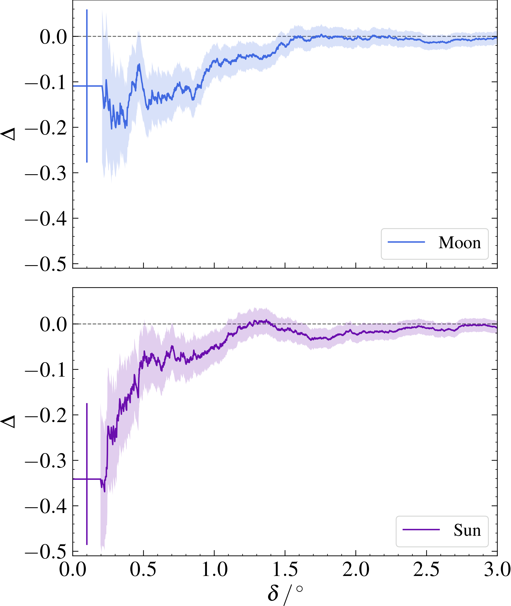
图注：Relative difference between the cumulative numbers of measured and expected events as a function of $\delta$ for the Moon (upper panel) and the Sun (lower panel). The shaded bands represent the $1\sigma$ statistical uncertainties. Because the relative difference is computed cumulatively, the data points are statistically correlated.
对应解读：对应“建议重点查看的图表”第3项（月影和日影的径向剖面）以及“关键图表逐图导读”中关于径向亏损剖面和模型拟合残差随角距离恢复的讨论。
入选理由：这张图直接给出月球和太阳方向累积实测事件数相对期望事件数的差异随角距离δ的变化，是判断阴影亏损是否从中心向外逐渐回到零的核心证据。阴影信号本质是小幅亏损，Fig04比阵列布局或天顶角分布更直接支撑论文的主要探测结论，并且同时包含月影、日影和1σ统计不确定度。
来源与置信度：\(arxiv_source\)；high；\(arxiv_source\) / \(main_v8.tex\):figure[4]
Fig05
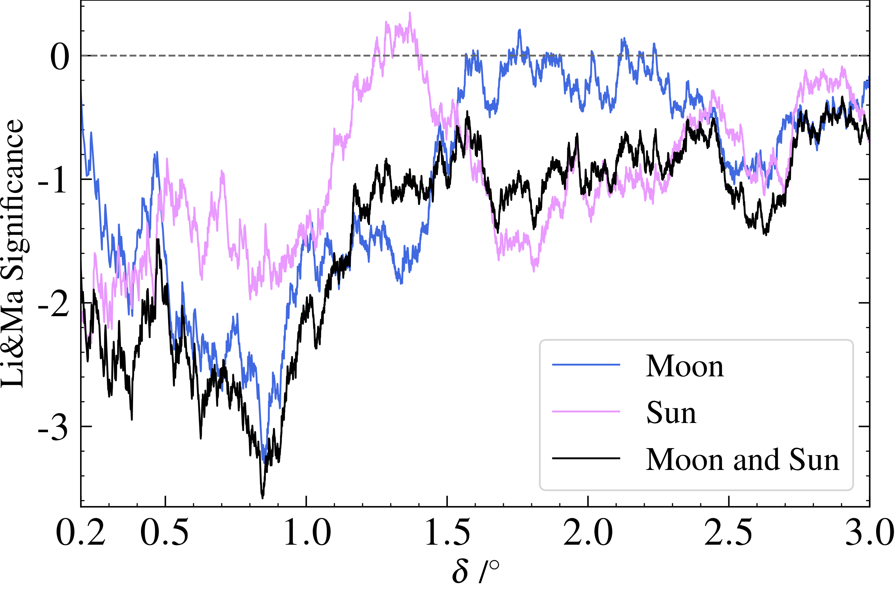
图注：Individual and combined (black) Li\&Ma significances near the Moon (blue) and the Sun (magenta) as functions of $\delta$.
对应解读：对应“建议重点查看的图表”第4项（显著性随角尺度变化）以及日报中合并约3σ探测显著性的解读。
入选理由：Fig05展示月影、日影及合并样本的Li&Ma显著性随角距离δ的变化，直接检验合并约3σ是否来自两个天体方向的一致亏损，以及最佳角尺度附近显著性是否稳定。它是评估本文‘首次在约7×10^17 eV看到月影和日影’这一核心结论强弱的关键图。
来源与置信度：\(arxiv_source\)；high；\(arxiv_source\) / \(main_v8.tex\):figure[5]
Fig07
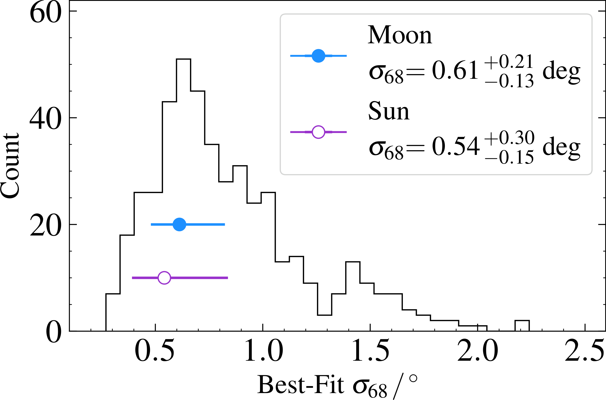
图注：The distribution of the $\sigma_\text{68}$ values obtained from the Monte-Carlo simulations. The result of the Moon-shadow fit is indicated by a filled blue marker, while the result of the Sun-shadow fit is shown with an open purple circle.
对应解读：对应“建议重点查看的图表”第4项和“关键图表逐图导读”第5项中关于角分辨率或阴影宽度的拟合结果，特别是合并角分辨率(0.59^{+0.15}_{-0.11})°的解释。
入选理由：Fig07给出Monte-Carlo模拟得到的σ68分布，并标出月影和日影拟合结果，是把阴影观测转化为探测器角分辨率校准的最直接图。相比只看亏损曲线，它更能支撑日报中关于点扩散函数、角分辨率和仪器指向精度的详细讨论。
来源与置信度：\(arxiv_source\)；high；\(arxiv_source\) / \(main_v8.tex\):figure[7]
Fig06
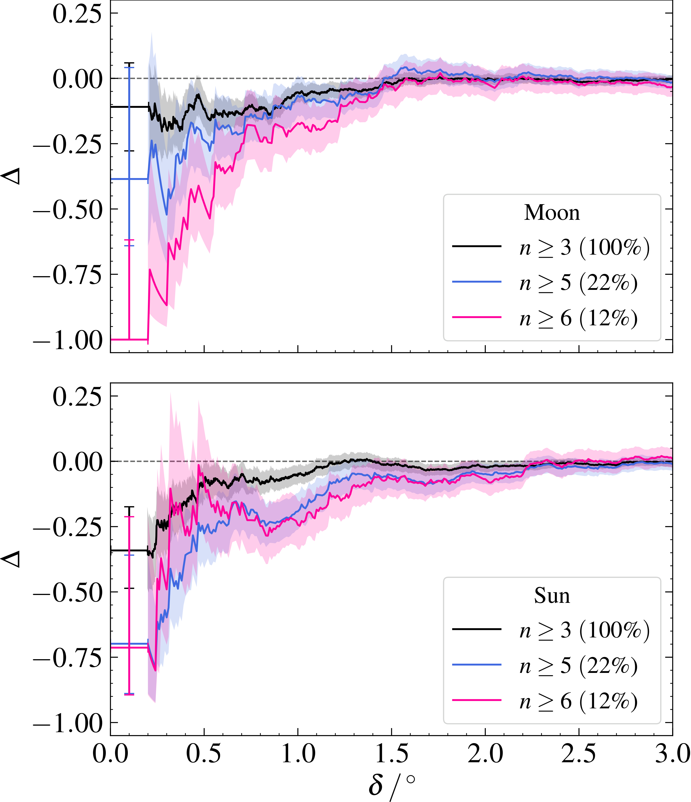
图注：Relative difference of the cumulative number of events as a function of the angular distance $\delta$ for event samples with different detector multiplicities $n$. The fractions of each subsample relative to the full data set are indicated in the legend.
对应解读：对应“建议重点查看的图表”第5项（分阵列或分样本稳健性）以及模型拟合段落中关于不同探测器事件质量/重建精度是否相容的讨论。
入选理由：Fig06按探测器触发站数n分样本展示累积相对亏损随角距离的变化，可用于判断阴影信号是否被某一类低质量或高统计事件主导。虽然它不是按1500 m、750 m、433 m阵列直接分组，但它提供了重要的重建质量和稳健性诊断。
来源与置信度：\(arxiv_source\)；high；\(arxiv_source\) / \(main_v8.tex\):figure[6]
Fig03
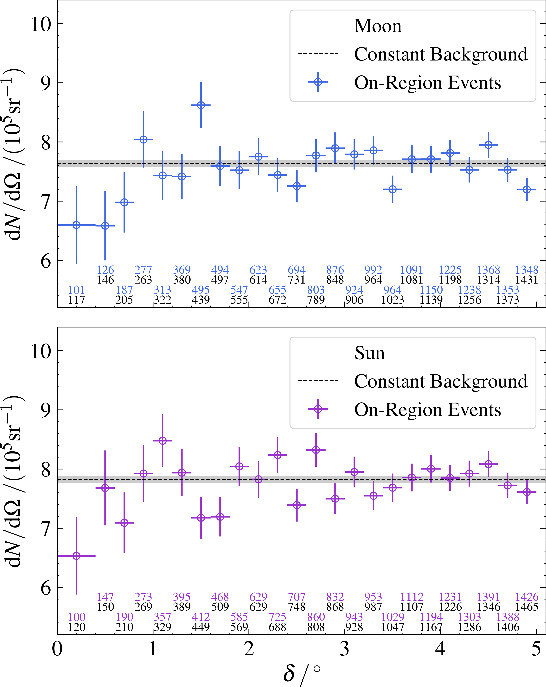
图注：The event count per solid angle as a function of $\delta$ for the Moon (upper panel) and the Sun (lower panel). The uniform expectation is shown as the horizontal black line with the band representing the statistical uncertainty. Note that the first two bins are merged to reduce the statistical uncertainties. The measured number of events in each bin is written in color, while the unblocked expectation is in black. The statistical uncertainty of the measured numbers decreases from 10\% to 3\% with increasing $\delta$. For the uniform expectation, the statistical uncertainty is 0.7\%.
对应解读：对应“建议重点查看的图表”第6项（背景和残差诊断）以及模型拟合段落中关于无阴影均匀背景、统计误差和大尺度梯度的讨论。
入选理由：Fig03展示月球和太阳附近单位立体角事件数随δ的分布，并与均匀期望及其统计不确定度比较，是检查背景构造是否合理、阴影外区域是否接近期望的重要诊断图。它帮助读者判断亏损是否建立在可靠背景模型之上。
来源与置信度：\(arxiv_source\)；high；\(arxiv_source\) / \(main_v8.tex\):figure[3]
Fig01
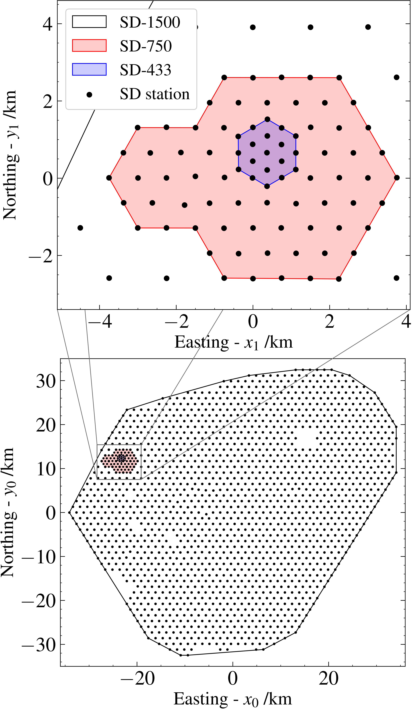
图注：The configuration of the SD arrays. The top panel displays the SD-433 array (blue) and the SD-750 array (red), while the bottom panel displays the SD-1500 array. Black dots represent the locations of the individual detector stations. The areas have been centered on the middle of the arrays, with UTM coordinates $(x_0,y_0)=(474255, 6102240)$\,m and $(x_1,y_1)=(450627, 6113915)$\,m.
对应解读：对应“关键图表逐图导读”第1项和详细解读中关于Pierre Auger三个地面探测器阵列覆盖面积与阵列配置的说明。
入选理由：Fig01展示SD-433、SD-750和SD-1500阵列的空间配置，能支撑日报中关于三个阵列面积、间距和曝光来源的背景介绍。它不直接显示阴影信号或拟合显著性，因此科学优先级低于径向亏损、显著性和角分辨率图，但适合作为样本与仪器概览图。
来源与置信度：\(arxiv_source\)；high；\(arxiv_source\) / \(main_v8.tex\):figure[1]
强相关工作
这篇工作与低能宇宙线月影、日影观测是一条连续谱系。Tibet AS\(\gamma\)、ARGO-YBJ、Milagro、HAWC 和 IceCube 等实验在 \(\mathrm{TeV}\)--\(\mathrm{PeV}\) 能区利用月影校准角分辨率、能标和反质子比例，也用日影研究太阳磁场调制。本文的新意不是阴影现象本身，而是把阴影观测推到平均 \(7\times10^{17}\,\mathrm{eV}\) 的超高能区，并使用奥热这样的大面积地面阵列做指向验证。可检索关键词包括 “cosmic-ray Moon shadow angular resolution”, “Sun shadow cosmic rays solar magnetic field”, “Pierre Auger surface detector angular resolution”。
它也应与奥热既有的方向重建和各向异性论文一起读。奥热关于大尺度偶极、最高能宇宙线到达方向与邻近星系结构相关的结果，都依赖角分辨率和绝对指向。月影和日影观测提供了一个独立于源模型的外部校准。若要找可能的张力，应检索奥热地面阵列角分辨率的模拟/混合探测估计，与本文 \((0.59^{+0.15}_{-0.11})^\circ\) 是否一致；还可检索日影随太阳活动周期变化的低能实验结果，以评估把日影并入合并角分辨率时的潜在系统误差。
同一事件 / 同类源线索：
相似工作：
（未提供）
基础理论 / 方法工作：
相反观点 / 张力线索：
（未提供）
2. The Constant Evolution of the Neil Gehrels Swift Observatory: Two Decades of Operational Innovation for Time-Domain and Multi-Messenger Astrophysics
- 来源：arXiv / astro-ph.IM
- 链接：https://arxiv.org/abs/2608.04220v1
- 作者：Jamie A. Kennea
- 评分：novelty 7/10，importance 8/10，relevance 9/10，final 9.05/10
- 推荐理由：总结Swift二十年运行创新，包括GRB快速响应、GW和IceCube中微子跟进、GUANO与秒级TOO；虽是仪器/运行综述，但对GRB和多信使高能时域天文学高度相关。
中文题目：尼尔·盖雷尔斯 Swift 天文台的持续演化：面向时域与多信使天体物理的二十年运行创新
做了什么：这篇文章不是报告一个新的天体源，而是复盘 Swift 发射后二十多年如何在硬件几乎不变的情况下，通过飞行软件、地面指令链路、自动化排程和数据触发策略，把一台以伽马暴为核心目标的快速响应卫星，改造成时域与多信使天文学的通用快速跟随平台。重点包括自动 TOO 上传、大片误差区铺瓦、ManyPoint 多指向能力、GUANO 事后捕获 BAT 环形缓冲数据，以及把响应延迟压到秒级的“Urgency 0”连续指令模式。文章的重要结论是：Swift 的科学寿命和多信使价值，主要来自运行系统的持续重构，而不只是载荷本身的初始设计。
为什么重要：Swift 是现代高能瞬变研究中少数能把触发、快速转向、X 射线定位、紫外光学观测和社区 TOO 请求连成闭环的空间平台。引力波、IceCube 中微子、宽视场高能触发和地面巡天的误差区往往很大、时间窗口很短，传统“人工审核后排程”的卫星运行方式无法有效响应。本文把 Swift 如何从小时级响应走向秒级响应讲清楚，对理解未来 TDAMM 任务应该如何设计运行体系非常关键。
理论 / 观测 / 仪器方法价值：对观测和仪器方法的价值在于，它把“运行创新”当成科学能力的一部分来分析：同一套 BAT、XRT、UVOT 硬件，通过自动上传、机上铺瓦、批量指向、缓冲数据转储和基于预警的提前转向，可以覆盖完全不同的瞬变发现模式。对未来任务而言，这篇文章提供了工程—科学接口的案例：地面系统、飞控权限、自动化阈值、误差区覆盖算法和数据归档策略，本身会决定多信使天文学的发现效率。
为什么应该关注：如果你研究伽马暴、潮汐瓦解事件、引力波电磁对应体、中微子源、快变 X 射线源或瞬变巡天后随，Swift 的响应函数不只是有效面积和曝光时间，还包括“能否在正确时间把望远镜指到正确天空区域”。这篇文章解释了为什么 Swift 在二十年后仍然不可替代，也提醒我们：未来多信使任务的瓶颈可能不是探测器灵敏度，而是事件流、排程、权限和自动化决策链。
展开详细解读：文章讲解、背景、理论、重点章节、图表与相关工作
文章详细讲解
科学问题：本文讨论的核心不是某个单一天体的物理机制，而是一个运行科学问题：一颗发射于 \(2004\) 年、硬件基本固定的空间天文台，如何在瞬变天文学需求剧烈变化的二十年里保持前沿能力。Swift 最初的设计目标是快速探测并跟随伽马暴，即由 BAT 触发后自主转向，使 XRT 和 UVOT 在早期余辉阶段获得定位和多波段光变。但 \(2015\) 年后，引力波事件、IceCube 高能中微子、地面光学巡天和宽视场高能监测不断产生大误差区、低延迟、概率型警报，Swift 必须从“伽马暴追踪器”变成“多源警报的快速响应平台”。
作者怎么做：文章以运行史和技术能力演化为主线，梳理 Swift 在硬件不大改动的前提下如何重写地面和机上流程。早期主动 XRT 制冷能力受限后，任务团队发展了自动 TOO 上传，使人类审核和传统计划周期不再是主要瓶颈。随后，为了应对引力波和中微子这类大误差区事件，Swift 引入机上铺瓦、大批量指向执行的 ManyPoint 飞行软件，以及可以从 BAT 环形缓冲区追溯未触发伽马射线信号的 GUANO。更近的“Urgency 0”模式则把持续指令上传和自动响应结合起来，使某些 TOO 从小时级压到秒级。
关键结果：文章用 GW170817/AT2017gfo、IceCube-170922A 以及紧凑双星并合早期预警转向作为案例，说明这些运行能力不是边缘优化，而是改变了 Swift 可进入的科学相空间。对 GW170817 这类源，Swift 的价值在于快速覆盖概率图、给出 X 射线和紫外光学约束，并与地面发现的千新星演化互补。对 IceCube-170922A，Swift 能够在高能中微子警报后迅速检查候选 blazar 场，从而参与多信使关联证据链。对未来的早期预警并合事件，Swift 甚至可以在并合前或并合附近提前布置指向，争取捕捉极早期电磁辐射。
局限和下一步：本文也隐含了 Swift 能力的边界。XRT 和 UVOT 视场较小，面对数十到数百平方度的误差区时，覆盖率、曝光深度和响应时间之间必然存在权衡；低轨卫星还受地球遮挡、南大西洋异常区、太阳/月亮/地球边缘约束以及轨道衰减影响。文章最后讨论了通过姿态排程降低大气阻力截面、以及商业轨道提升任务延寿的努力。这意味着 Swift 的未来价值不仅取决于探测器健康，也取决于能否继续维持快速、自动、低风险的运行模式，并把这些经验迁移到下一代 TDAMM 任务。
关键结果是怎么做出来的
本文最重要的证据链来自运行能力如何改变实际科学响应，而不是来自传统意义上的天体样本统计。样本选择可以理解为若干类高价值瞬变警报：Swift 自身 BAT 伽马暴触发、外部 TOO 请求、LIGO/Virgo/KAGRA 引力波概率天图、IceCube 中微子警报，以及未来可由低延迟管线给出的紧凑双星并合早期预警。文章用这些代表性事件展示：不同触发源要求不同的排程逻辑，Swift 的创新点在于把这些逻辑纳入可执行的自动或半自动指令链。
事件数层面，本文不是给出完整统计目录，而是强调几个能力节点。自动 TOO 上传对应的是从人工计划周期走向机器生成并上传观测序列；机上铺瓦和 ManyPoint 对应的是一次事件可执行大量短曝光指向，而不是少数人工挑选点；GUANO 对应的是即使 BAT 未触发，也能在外部警报到来后从环形缓冲区提取相关时间窗的高时间分辨率数据；“Urgency 0”对应的是把延迟预算从“等待下一次人工/常规上传”变成“持续可插入指令”。这些节点共同决定了有效事件数，因为许多瞬变在小时后已经暗到不可测。
显著性或置信度在这类论文中主要体现为覆盖概率、延迟分布、灵敏度上限和关联时空一致性，而不是单一 \(p\) 值。对于引力波跟随，关键量是 Swift 实际观测铺瓦覆盖了三维或二维概率图的多少、每个铺瓦的曝光深度能否排除给定模型亮度的电磁对应体。对于中微子跟随，关键是候选源是否落入角误差区、是否处于高态，以及 Swift XRT/UVOT 与其他波段能否共同支持关联。对于 GUANO，统计检验则接近于在外部给定时间窗内搜索 BAT 计数率或成像显著性，降低盲搜试验因子。
支撑结论的图表通常应包括运行时间线、响应延迟变化、铺瓦示意、事件概率覆盖和案例光变/上限。读者应特别检查“小时到秒”的延迟改善是否针对所有 TOO，还是只适用于最高优先级和满足安全约束的事件；也要看铺瓦覆盖率是否以面积表示，还是以后验概率表示，因为二者对非均匀概率天图的意义不同。若文章给出 GW170817 或 IceCube-170922A 的响应案例，最重要的是比较 Swift 观测开始时间、候选源可见性窗口、曝光深度和其他设施发现时间之间的相对关系。
系统误差和稳健性主要来自运行约束而非探测器标定。地球遮挡、太阳角约束、姿态机动时间、数据下传窗口、SAA、热约束、反作用轮或姿控限制，都会改变名义响应能力。对于大片误差区铺瓦，概率图的先验、距离权重、星系目录完备性和源模型亮度函数会影响“最优”指向。本文的稳健性意义在于：Swift 团队通过把这些约束编码进自动化系统，降低了人工决策造成的延迟和不一致性，但并不意味着每个警报都能达到同样的秒级响应。
展开背景、理论、公式、模型、章节和图表导读
背景知识
Swift 是一颗低地球轨道多波段空间天文台，主要载荷包括宽视场硬 X 射线/软伽马射线 BAT、窄视场 X 射线望远镜 XRT 和紫外/光学望远镜 UVOT。它的经典工作模式是 BAT 在大视场内发现伽马暴，卫星自主快速转向，使 XRT/UVOT 在余辉仍然明亮时给出亚角分到角秒级定位和多波段光变。这个设计直接改变了长、短伽马暴余辉研究，也支撑了红移测量、喷流破裂、中心引擎活动和高红移宇宙探针等方向。
历史上，高能空间任务往往有两种运行文化：一种是预先排好的观测计划，适合稳定源和深曝光；另一种是触发后快速响应，适合伽马暴。Swift 的特殊之处在于，它从设计上允许自主转向和快速 TOO，但真正让它跨越二十年仍然有用的，是运行系统持续更新。引力波发现之前，大片误差区铺瓦并不是 Swift 的主要任务；IceCube 实时警报常态化之前，中微子源的快速 X 射线/UV 跟随也不是常规需求。
为什么现在值得重新看？因为 TDAMM 已从少数偶然事件进入常规警报生态。LIGO/Virgo/KAGRA 的紧凑双星候选、IceCube 的高能中微子、Fermi/GBM 的宽视场伽马触发、地面光学巡天的年轻超新星和核瞬变，都要求分钟到秒级决策。硬件灵敏度当然重要，但如果指令上传、可见性计算和优先级仲裁需要数小时，早期辐射物理就会被错过。Swift 是少数经历了这一转型全程的任务，因此它的运行史具有方法论价值。
该领域常见误区之一，是把 Swift 的能力简单理解为“快速转向”。实际上快速转向只是链条中间的一环，前端需要可靠触发和事件过滤，后端需要自动生成安全指令、处理多目标铺瓦、快速下传和分发数据。另一个误区是认为大视场一定优于小视场；对多信使事件来说，宽视场发现和窄视场深度定位是互补关系。Swift 的窄视场 XRT/UVOT 若能根据概率图高效铺瓦，仍可在排除模型和识别候选体方面发挥关键作用。
还有一个容易忽视的问题是任务寿命。低轨卫星受大气阻力导致轨道衰减，太阳活动增强时尤其明显。对二十年级别任务，姿态策略会影响迎风截面，进而影响寿命；商业轨道提升也可能成为科学能力维护的一部分。本文把这些工程问题放进天体物理语境中：延寿不是单纯“让卫星多活几年”，而是维持全球多信使网络中一个快速 X 射线/UV 节点。
基础理论 / 方法脉络
从物理图像看，瞬变天体的核心特征是亮度、谱形和位置都随时间快速变化。伽马暴余辉、千新星早期紫外辐射、喷流相关 X 射线辐射或 blazar 高态，都可能在分钟到天的时间尺度上衰减或演化。因此观测收益通常不是简单正比于曝光时间，而是强烈依赖观测开始时间 \(t_{\rm obs}\)。Swift 的运行创新，本质上是在压缩 \(t_{\rm obs}-t_0\)，其中 \(t_0\) 是外部或内部触发时间。
Swift 的三载荷构成一个典型的“宽视场发现—窄视场诊断”系统。BAT 提供大视场硬 X 射线监测和触发，XRT 提供更高定位精度与软 X 射线谱，UVOT 提供紫外/光学光度和颜色信息。对机上触发的伽马暴，误差区较小，主要问题是快速转向；对引力波和中微子警报，误差区可能从平方度到数百平方度，主要问题变成如何在有限时间内最大化后验概率覆盖和模型排除能力。
本文涉及的关键运行量包括响应延迟、铺瓦数量、单点曝光、覆盖概率、数据缓冲时间窗和指令上传周期。ManyPoint 的价值在于可以把一个大 TOO 拆成大量短指向并由飞行软件稳定执行；GUANO 的价值在于把 BAT 未触发但可能存在的短时弱信号从环形缓冲数据中追回；“Urgency 0”则把传统批处理式排程转化为可连续插入的快速指令模式。这些都可以视作改变了观测选择函数。
常见退化关系来自“覆盖广度—曝光深度—响应速度”。如果误差区很大，增加铺瓦数会提高覆盖概率，但每个点的曝光可能变短，XRT 上限变浅；如果优先深曝光，则可能错过真实位置。若使用星系加权或距离加权，还会引入星系目录不完备和源族模型依赖。对中微子事件，角误差区较小但关联背景复杂，X 射线高态并不自动等于物理关联，需要多波段、时间一致性和群体统计支持。
观测方法上，Swift 的数据分析通常需要把仪器响应、背景、曝光图和天区概率图结合。对 XRT，源探测要看点扩散函数、背景涨落和曝光不均匀；对 UVOT，要考虑宿主星、银河消光和拥挤场；对 BAT/GUANO，要处理计数率背景、编码孔径成像和外部触发给定时间窗带来的试验因子变化。本文虽是运行综述，但这些统计量决定了运行创新能转化为多少实际科学约束。
公式与推导
第一步，把瞬变观测的时间收益写成简单衰减律。若触发后通量随时间按幂律下降，则
这里 \(F(t)\) 是时刻 \(t\) 的通量，\(F_0\) 是参考时刻 \(t_0\) 的通量，\(\alpha\) 是衰减指数。这个式子说明响应延迟从小时级降到秒级为何重要：当 \(\alpha\sim1\) 或更大时，早到一个数量级就可能得到一个数量级的信号增益。
第二步，将观测到的计数与源通量联系起来。对某一载荷和能段，期望源计数可写为
其中 \(F_E(E)\) 是能量微分光子通量，\(A_{\rm eff}(E,\theta)\) 是依赖能量 \(E\) 和离轴角 \(\theta\) 的有效面积，\(T_{\rm exp}\) 是曝光时间。Swift 的运行策略通过改变 \(T_{\rm exp}\)、\(\theta\) 和观测时刻间接改变 \(S\)。
第三步，快速源探测常用近似显著性可由源计数和背景计数估计：
其中 \(B\) 是背景计数。弱源极限 \(S\ll B\) 下有 \({\rm SNR}\propto S/\sqrt{B}\)，而 \(S\) 又近似正比于 \(F T_{\rm exp}\)。因此铺瓦时把曝光切得太短，会降低单个指向的探测显著性。
第四步，对未探测到的候选体，可以用泊松似然给出上限。若在源区观测到 \(n\) 个计数，期望为 \(\mu=s+b\)，则
这里 \(s\) 是源计数期望，\(b\) 是背景期望。通过对 \(s\) 求置信上限并除以曝光和响应，就得到 XRT 或 UVOT 的通量上限，这正是多信使跟随中排除模型的重要产物。
第五步，大误差区跟随的目标不是覆盖最大面积，而是覆盖最大后验概率。给定天图概率密度 \(p(\Omega)\)，一组铺瓦视场 \(\\{\Omega_i\\}\) 的覆盖概率为
其中 \(\Omega\) 表示天空方向，\(\Omega_i\) 是第 \(i\) 个指向的有效视场。ManyPoint 和机上铺瓦的价值，就是在约束条件下增加可执行的 \(\Omega_i\) 数量并优化 \(P_{\rm cov}\)。
第六步，如果考虑每个铺瓦的探测深度，科学收益可以写成概率和效率的加权和：
这里 \(Y\) 是期望发现或排除收益，\(\epsilon_i\) 是第 \(i\) 个指向对模型通量 \(F_{\rm model}\) 的探测效率，\(t_i\) 是观测时间，\(d\) 是距离，\(T_i\) 是曝光。这个式子体现了响应延迟、概率覆盖和曝光深度之间的共同优化。
第七步，GUANO 类外部触发搜索可把盲搜试验因子变小。对给定外部触发时间 \(t_{\rm ext}\) 和搜索窗 \(\Delta t\)，背景误触发概率近似为
其中 \(N_{\rm trial}\) 是独立时间窗、能段和天空位置的试验数，\(p_1(>\sigma)\) 是单次试验超过显著性 \(\sigma\) 的概率。外部警报给定了较窄的时间窗和方向先验，因此可降低 \(N_{\rm trial}\)。
第八步，TOO 响应延迟可分解为多个运行环节：
各项分别表示警报生成、审核、计划、上传和转向耗时。本文所述自动 TOO、“Urgency 0”和连续指令模式主要压缩 \(\Delta t_{\rm vet}\)、\(\Delta t_{\rm plan}\) 与 \(\Delta t_{\rm upload}\)，而 Swift 原有快速转向能力控制 \(\Delta t_{\rm slew}\)。
第九步，低轨寿命与阻力有关，阻力加速度可近似写为
其中 \(\rho\) 是高层大气密度，\(v\) 是轨道速度，\(C_D\) 是阻力系数，\(A\) 是迎风截面，\(m\) 是卫星质量。文章提到的姿态排程降低阻力截面，实际就是减小 \(A/m\)，从而延缓轨道衰减并延长 Swift 在 TDAMM 网络中的可用寿命。
模型拟合 / 应用方法
这类运行与仪器论文的“模型拟合”不同于拟合一个天体谱模型，但仍然有明确的参数估计问题。对每次 TOO 或多信使跟随，最基本的拟合量包括源位置、计数率、通量、谱形或上限，以及与触发时间相关的光变参数。XRT 数据通常需要拟合吸收幂律或热模型，UVOT 需要拟合多滤光片光度并校正消光，BAT/GUANO 则可能拟合短时计数率超额或编码孔径成像显著性。
似然层面，XRT 和 BAT 的弱源分析通常以泊松计数统计为基础，在背景、曝光图和响应矩阵给定时估计源计数或通量。若源很弱，报告上限比报告最佳拟合通量更有意义。对多信使事件，拟合结果还要同外部概率图结合：一个深上限若落在低概率区域，对总体模型排除贡献有限；一个较浅上限若覆盖高概率区域，可能更有科学价值。
参数退化主要有三类。第一是时间和亮度退化：晚观测的暗源可能等价于早观测的低本征亮度源。第二是覆盖和深度退化：同样总时间可以做少数深指向或多数浅指向，二者对不同模型最优。第三是源关联退化：在中微子或引力波误差区内发现一个 X 射线源，不等于它就是对应体，因为活动星系核、恒星耀发和已知变量源会构成背景。
系统误差来自仪器和运行两端。仪器端包括有效面积标定、背景估计、坏像素、光学/紫外消光、BAT 编码孔径系统残差等；运行端包括可见性窗口、姿态约束、铺瓦排序、警报概率图更新和人工优先级干预。若文章给出响应延迟统计，读者应区分中位数、最佳情况和尾部分布，因为极端慢响应常由不可避免的轨道或安全约束造成，而不是排程软件失败。
实际应用中，最好的做法不是只问 Swift “有没有探测到”，而是把每个指向的时间、曝光、上限和覆盖概率放入联合后验。对千新星模型，可以计算在给定距离和视角下应有的 UV/X 射线通量是否被排除；对中微子 blazar 关联，可以比较候选源的 X 射线态与长期基线；对短伽马暴或亚阈值 BAT 信号，可以把外部触发时间窗纳入显著性评估。本文的运行创新提高的正是这些拟合和检验能发生在早期相位的概率。
重点章节 / 结果段落怎么读
-
任务背景与二十年运行哲学：读者应先看作者如何定义 Swift 的“always be developing”。这里的重点不是载荷指标，而是飞控、科学运行和软件开发共址带来的快速迭代能力。理解这一点后，后文各种技术名词才不会显得像零散工程细节。
-
自动 TOO 上传与早期运行调整：这一部分解释 Swift 如何在主动 XRT 制冷能力早期受限后，通过自动化 TOO 流程补偿运行限制。建议关注响应延迟从人工计划向自动上传转变时，哪些安全检查仍被保留，哪些步骤被机器化。
-
大误差区铺瓦与 ManyPoint：这是面向引力波时代的关键章节。读者应看铺瓦是在地面生成还是机上执行、一次可容纳多少指向、如何处理观测约束，以及这种能力如何把 Swift 从单目标后随扩展到概率天图搜索。
-
GUANO 与亚阈值高能信号：这一部分适合关注高能瞬变和多信使触发的读者。重点是 BAT 环形缓冲数据如何在外部警报后被保存和分析，以及这如何改变未触发短伽马暴、磁星暴发或其他短时高能信号的可检索性。
-
“Urgency 0”和秒级 TOO：这是文章面向未来 TDAMM 的核心方法段。读者应追踪延迟预算中哪些环节被压缩，以及它适用于哪些警报类型。不要把秒级响应理解为所有 Swift 观测的常态；它更像是为最高优先级事件开放的一种连续指令能力。
-
寿命延长与任务传承：最后部分讨论姿态排程降低阻力和商业轨道提升。读者应把它与科学能力联系起来看：如果 Swift 继续存活，它将在未来 LIGO/Virgo/KAGRA、IceCube 和地面巡天时代继续提供快速 X 射线/UV 节点；如果未来任务继承这些运行思想，将比单纯复制载荷更有价值。
建议重点查看的图表
-
运行创新时间线：检查每个能力节点，如自动 TOO、铺瓦、ManyPoint、GUANO 和“Urgency 0”出现的时间，与重大多信使事件或社区需求是否对应。
-
TOO 响应延迟分布：重点看横轴是触发后时间还是指令上传后时间，纵轴是事件数、累计比例还是中位数；注意是否区分普通 TOO 和最高优先级 TOO。
-
大误差区铺瓦示意图：检查铺瓦是否按面积均匀覆盖，还是按概率密度、星系权重或可见性加权；看未覆盖高概率区域是否由观测约束造成。
-
ManyPoint 执行诊断：若有表格或图，关注一次序列中的指向数、单点曝光、总耗时和失败率。这决定其是否真正适合大规模警报跟随。
-
GUANO 数据捕获案例：检查外部触发时间窗、BAT 数据缓冲长度、搜索能段和显著性阈值；注意是否报告试验因子修正后的显著性。
-
GW170817/AT2017gfo 响应案例图：看 Swift 开始观测时间相对并合和光学发现的关系，以及 XRT/UVOT 上限或探测点如何约束早期模型。
-
IceCube-170922A 或类似中微子跟随图：看候选源位置相对中微子误差区、X 射线/UV 通量相对历史态，以及多波段关联证据是否同步。
-
轨道衰减或延寿图：若有轨道高度、阻力截面或太阳活动相关图，重点看姿态排程改变后的趋势是否足以显著延长任务寿命。
关键图表逐图导读
图 1：若文章给出 Swift 运行能力演化时间线，横轴通常是年份，纵向标注关键软件和运行模式。读图时不要只数功能数量，而要看每个功能对应的科学需求转折：伽马暴快速余辉、引力波大误差区、中微子实时警报、亚阈值 BAT 数据和早期预警并合。陷阱是把这些节点看成简单升级列表；真正信息是任务需求如何反向塑造运行系统。
图 2：响应延迟图通常以触发到观测开始或触发到指令上传的时间为横轴，纵轴为事件数、累计分布或不同运行模式的比较。应检查定义是否包含警报生成时间和可见性等待时间。若“Urgency 0”显示秒级响应，读者要确认它代表最佳可执行场景，还是所有 TOO 的总体统计。
图 3：铺瓦覆盖图通常在天球投影上叠加引力波或中微子概率等值线，Swift XRT/UVOT 指向以圆或方框表示。关键是看高概率区域是否被优先覆盖，以及每个铺瓦是否有相同曝光。读图陷阱是面积直觉：覆盖很多平方度不一定覆盖很多后验概率，反之亦然。
图 4：ManyPoint 或机上执行能力图若展示指向序列，应关注指向间机动开销和总效率。横轴可能是时间或指向编号，纵轴可能是目标编号、姿态角或曝光状态。主要结论应是大量指向可以作为单个复杂观测计划稳定执行，而不是依靠地面逐个上传。
图 5：GUANO 相关图可能展示 BAT 计数率、触发时间窗或成像显著性图。横轴常为相对外部触发的时间，纵轴为计数率或显著性。读者应看背景拟合是否平稳、搜索窗是否由外部事件预先指定，以及显著性是否考虑多时间尺度和多能段试验。
图 6：GW170817 或 AT2017gfo 案例图若包含观测点和上限，横轴多为并合后时间，纵轴为通量、星等或光度。模型线可能代表千新星、余辉或冲击冷却辐射。关键读法是看 Swift 数据在早期相位排除了哪些高亮 UV/X 射线模型，而不是期待它必然探测到对应体。
图 7：中微子跟随案例图若围绕 IceCube-170922A，可能展示误差区、候选 blazar、Swift XRT/UVOT 通量或多波段光变。应检查候选源是否在误差区内、是否相对历史基线升高、Swift 数据与伽马射线和射电数据是否时间一致。陷阱是把单次 X 射线亮态误读为充分因果证明。
图 8：轨道寿命或阻力管理图若存在，横轴可能是日期，纵轴为轨道高度、半长轴衰减率或预期再入时间。模型线可能比较不同姿态策略或是否轨道提升。关键是看不确定性是否随太阳活动变化增大，因为高层大气密度是延寿估计中的主要外部不确定量。
论文原图 / 可嵌入图片
Fig06
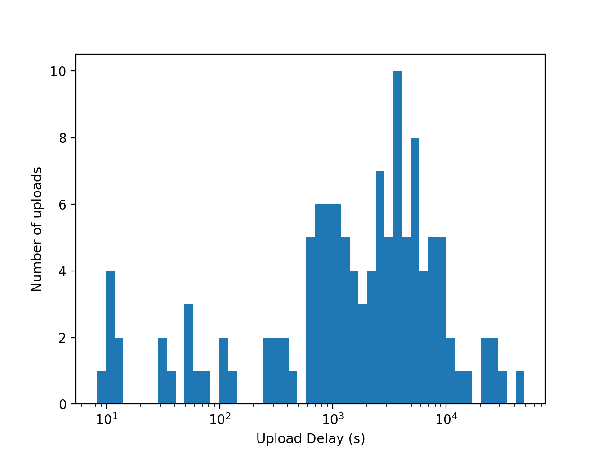
图注：Distribution of Swift ``Urgency 0'' continuous-commanding response times across the 155 automated uploads performed to date. The fastest responses are $\sim$10~s from receipt of the TOO at the MOC to the start of slew; the median of $\sim$2.2~ks reflects the fact that only 25--42\% of the sky is observable at any instant due to Earth, Moon, and Sun constraints.
对应解读：“建议重点查看的图表”第2项 TOO 响应延迟分布；“关键图表逐图导读”图2；模型拟合段落中关于区分中位数、最佳情况和尾部分布的运行系统误差讨论。
入选理由：这是候选图中最直接支撑本文核心运行创新结论的图，明确给出 Urgency 0 连续指令模式的响应时间分布、最快约10秒以及中位数约2.2 ks，并说明延迟尾部主要受天区可见性约束影响。它能帮助读者判断“秒级响应”是最佳可执行场景还是总体统计，因此科学解释价值最高。
来源与置信度：\(arxiv_source\)；high；\(arxiv_source\) / main.tex:figure[6]
Fig04
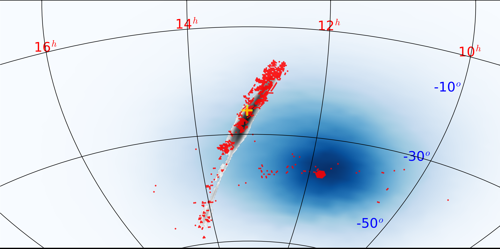
图注：Swift's tiled follow-up of the binary neutron-star merger GW170817. Swift observed 744 fields, covering 92\% of the distance-weighted gravitational-wave localization. Galaxy-targeted tiling of this scale by a spacecraft is a uniquely Swift capability\cite{evans2017}.
对应解读：“建议重点查看的图表”第3项大误差区铺瓦示意图和第6项 GW170817/AT2017gfo 响应案例图；“关键图表逐图导读”图3与图6。
入选理由：该图展示 Swift 对 GW170817 的大规模铺瓦跟随，744个视场覆盖92%的距离加权引力波定位，是文章中从 GRB 快速跟随转向多信使大误差区响应的关键证据。相比一般铺瓦模式图，它包含真实事件、覆盖概率和任务能力的直接科学应用，更能支撑日报对概率覆盖而非面积覆盖的强调。
来源与置信度：\(arxiv_source\)；high；\(arxiv_source\) / main.tex:figure[4]
Fig05
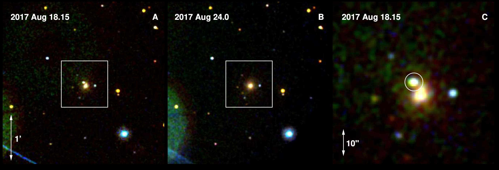
图注：Swift/UVOT detection of the kilonova AT2017gfo, the optical/UV counterpart to GW170817, in NGC~4993. The initial measurement was $u = 18.2 \pm 0.1$~mag (AB). Monitoring showed the ultraviolet emission fading rapidly, while no X-ray emission from the optical transient was detected by the XRT in the early epochs\cite{evans2017}.
对应解读：“建议重点查看的图表”第6项 GW170817/AT2017gfo 响应案例图；“关键图表逐图导读”图6；模型拟合段落中关于 UVOT 光度、XRT 上限和早期模型约束的讨论。
入选理由：该图给出 Swift/UVOT 对 AT2017gfo 的探测及早期紫外快速衰减信息，同时注明 XRT 早期未探测到光学暂现源。它直接连接运行响应与可用于物理约束的观测量，即星等、衰减和 X 射线上限，适合说明 Swift 数据如何排除或限制早期高亮 UV/X 射线模型。
来源与置信度：\(arxiv_source\)；high；\(arxiv_source\) / main.tex:figure[5]
Fig03
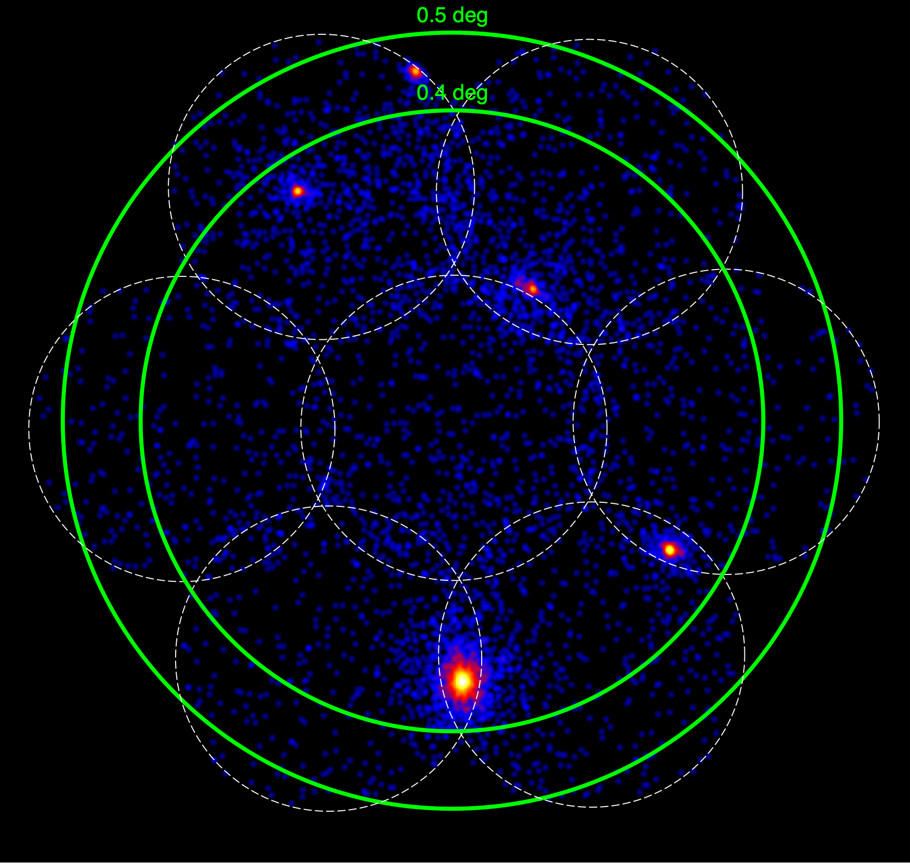
图注：Swift's onboard tiling patterns, used to cover error regions larger than the XRT field of view. Predefined 4-, 7-, 19-, and 37-point patterns cover roughly circular regions up to $\sim$1\,degree across; recent enhancements allow custom, non-circular tiling shapes for optimal coverage of irregular error regions.
对应解读：“建议重点查看的图表”第3项大误差区铺瓦示意图；“关键图表逐图导读”图3。
入选理由：该图展示 Swift 机上预定义4、7、19、37点铺瓦以及非圆形自定义铺瓦能力，是理解 XRT/UVOT 小视场如何应对较大误差区的基础图。虽然它不是某个具体事件的后验概率覆盖图，但能清楚说明运行能力本身，补充 Fig04 的真实案例。
来源与置信度：\(arxiv_source\)；high；\(arxiv_source\) / main.tex:figure[3]
Fig02
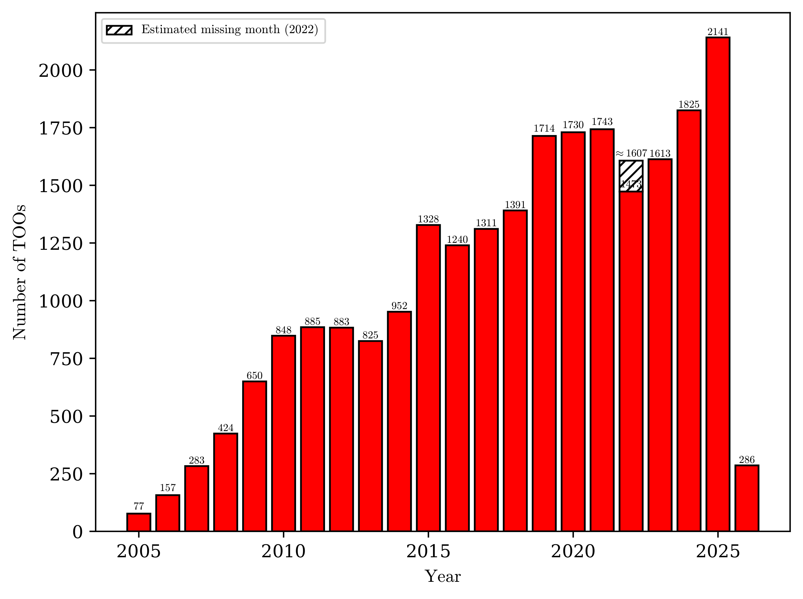
图注：The number of TOO requests submitted to Swift per year. The high numbers reflect the openness of the program, its $\sim$99\% acceptance rate, the growth of automated submissions through the Swift TOO API, and in 2026 the recent arrival of new partner missions such as EP and SVOM. Swift science operations were suspending in February 2026 for a planned orbit-boost operation, which accounts for the drop in requests that year.
对应解读：“建议重点查看的图表”第1项运行创新时间线的替代性运行统计；详细解读中关于自动 TOO、Swift TOO API、开放申请和多任务触发需求增长的段落。
入选理由：候选图中没有真正的运行创新时间线，Fig02 以每年 TOO 请求数展示 Swift 作为开放快速响应平台的使用量变化，并体现自动提交和外部伙伴任务带来的需求增长。它不能直接给出各技术节点时间线，但能支撑文章关于运行模式持续演化和社区需求驱动的总体论点。
来源与置信度：\(arxiv_source\)；high；\(arxiv_source\) / main.tex:figure[2]
强相关工作
与本文最直接相关的是 Swift 任务本身的设计论文、伽马暴快速余辉发现史、以及 Swift 在 GW170817 和 IceCube-170922A 中的多信使跟随论文。检索时可用关键词“Swift Observatory mission Gehrels 2004”，“Swift XRT GRB afterglow rapid follow-up”，“Swift GW170817 AT2017gfo ultraviolet X-ray observations”，“Swift IceCube-170922A TXS 0506+056 follow-up”，“GUANO Swift BAT ring buffer”，“Swift ManyPoint gravitational wave tiling”。这些工作共同构成“同一设施/同类事件/历史原型”的上下文。
相似或有张力的方向包括 Fermi/GBM 的宽视场伽马暴触发、MAXI 和 NICER 的 X 射线瞬变响应、SVOM 与 Einstein Probe 等新一代时域任务，以及 Rubin/LSST、ZTF 等地面巡天的事件流。张力不在于谁“更好”，而在于宽视场浅监测、窄视场深跟随、自动化决策和社区可访问性之间的分工。未来 TDAMM 系统需要把 Swift 的经验与更大警报率、更复杂概率图和更严格自动筛选结合起来。
同一事件 / 同类源线索：
- https://arxiv.org/abs/2608.04220
- https://swift.gsfc.nasa.gov/
- https://ui.adsabs.harvard.edu/abs/2004ApJ...611.1005G/abstract
- https://arxiv.org/abs/1710.05832
- https://arxiv.org/abs/1710.05833
- https://arxiv.org/abs/1807.08794
- https://arxiv.org/abs/1807.08816
相似工作：
基础理论 / 方法工作：
- https://ui.adsabs.harvard.edu/abs/2004ApJ...611.1005G/abstract
- https://swift.gsfc.nasa.gov/about_swift/
相反观点 / 张力线索：
3. A Real-Time Jet Laboratory in Swift J1727.8-1613
- 来源：arXiv / astro-ph.HE
- 链接：https://arxiv.org/abs/2608.04296v1
- 作者：Callan M. Wood, James C. A. Miller-Jones, Arash Bahramian, Steven J. Tingay, Sara E. Motta, Hongmin Cao, Thomas D. Russell, Francesco Carotenuto
- 评分：novelty 8/10，importance 8/10，relevance 8/10，final 9.00/10
- 推荐理由：对黑洞X射线双星Swift J1727.8-1613进行密集VLBI监测，精确跟踪多次瞬态喷流抛射和速度差异；对微类星体喷流发射机制有直接重要性。
中文题目：Swift J1727.8-1613：一次黑洞低质量 X 射线双星爆发中的实时喷流实验室
做了什么：这篇论文用高频次 VLBI 监测了黑洞低质量 X 射线双星 Swift J1727.8-1613 在 2023–2024 年爆发期间的射电喷流。作者在硬中间态和软中间态转换附近看到了连续喷流的多次熄灭与重建，也追踪到九个离散瞬变喷流团块的运动。关键方法不是只在成图平面量位置，而是在可见度数据中做时间依赖模型拟合，因此能测出精确的自行、抛射时刻和观测内通量变化。主要结论是：同一个黑洞系统在同一次爆发中可以反复发射速度差异很大的喷流团块，既有温和相对论性也有高度相对论性抛射；喷流轴倾角的后验分布给出中位数约 \(40^\circ\)，\(84\%\) 分位约 \(50^\circ\)，\(99\%\) 分位约 \(66^\circ\)。这说明黑洞质量、自旋、轨道几何等固定参数不能单独决定瞬变喷流速度。
为什么重要：黑洞 X 射线双星喷流通常被当作吸积态转换的副产品，但到底何时抛射、抛射速度为何变化、是否存在可由 X 射线硬度或强度预报的触发信号，仍然不清楚。Swift J1727.8-1613 的价值在于它在一次爆发中反复经过相近的状态转换，提供了近似“同一实验装置重复实验”的机会。论文显示，即使中心天体、轨道和大尺度环境基本不变，瞬变喷流的速度和洛伦兹因子仍能大幅变化，这直接挑战了把喷流动力学主要归因于固定源参数的简单图像。
理论 / 观测 / 仪器方法价值：对观测方法来说，本文展示了时间依赖可见度拟合在快速变化 VLBI 源中的优势：成图会把观测内变源平均掉，而直接拟合可见度可恢复团块通量曲线和位置演化。对理论来说，九个团块的精确自行和抛射时刻为喷流加速、内激波、喷流-吸积盘耦合模型提供了强约束。对未来仪器和巡天来说，它说明高 cadence、快速触发、长基线射电阵列与同步 X 射线覆盖是理解瞬变喷流的必要组合。
为什么应该关注：如果你关心微类星体、黑洞喷流或吸积态转换，这篇文章值得读，因为它不是单次抛射的个例，而是同一个系统多次抛射的动态记录。它提醒我们：用一次 X 射线硬度转变或一次射电耀发来定义“喷流发射条件”可能过于粗糙；真正需要比较的是多团块运动学、通量演化和状态转变时间序列之间的对应关系。
展开详细解读：文章讲解、背景、理论、重点章节、图表与相关工作
文章详细讲解
科学问题：黑洞低质量 X 射线双星在爆发过程中会从硬态进入中间态和软态，稳定的紧致射电喷流常在软化时被压低或熄灭，而瞬变的离散喷流团块可能在状态转换期间被抛射。长期以来，人们希望把喷流发射与 X 射线硬度、强度、准周期振荡或所谓“喷流线”对应起来。但许多系统只有一两次 VLBI 成像，时间采样稀疏，导致抛射时刻、自行和速度估计不稳。Swift J1727.8-1613 在 2023–2024 年爆发期间非常亮，并多次在硬中间态与软中间态之间转换，因此成为研究喷流重复发射的少见对象。
作者怎么做：论文开展了密集 VLBI 观测，重点不是简单堆叠图像，而是直接在干涉仪可见度数据中建立时间依赖模型。对连续喷流，作者跟踪其在不同 X 射线状态中的存在、熄灭和恢复；对离散喷流，作者将多个团块表示为随时间移动、通量可变的模型分量，并在单次观测内部允许通量按分段形式变化。这一点很关键，因为若一次 VLBI 观测持续数小时，而团块在这几小时内明显变亮或变暗，常规成图会产生位置偏移、虚假延展或通量低估。
关键结果：作者识别并追踪了九个离散喷流团块，给出了非常精确的自行和外推抛射日期。这些团块在 VLBI 中可见的时间窗口很短，部分团块还表现出观测内快速通量变化，说明瞬变喷流的射电可见性受膨胀、冷却、光深演化、与环境相互作用等因素控制。运动学约束显示，该源既发射温和相对论性团块，也发射高度相对论性团块。利用接近侧和远离侧自行关系，作者对喷流轴最大倾角建立后验分布，得到中位数约 \(40^\circ\)，\(84\%\) 分位约 \(50^\circ\)，\(99\%\) 分位约 \(66^\circ\)。
更深一层的结论是，多个团块跨越多次状态转换被发射，但作者没有在可用 X 射线强度或硬度数据中找到一致的喷流抛射标志。也就是说，状态转换与抛射相关，但并非每次都以同一种 X 射线可观测特征出现。论文因此把问题从“是否在状态转换处发射喷流”推进到“为什么同一状态转换附近发射的团块速度、洛伦兹因子和射电演化不同”。
局限和下一步：倾角、速度和洛伦兹因子的推断仍依赖喷流轴直线运动、同一对团块近似同时抛射、距离和源结构模型等假设。X 射线数据虽然可用于状态分类，但如果缺少高时间分辨率光谱、时变功率谱和严格同步射电覆盖，就很难排除短时触发信号。下一步需要将 VLBI 可见度级建模与 X 射线时序、宽波段光谱、偏振和可能的毫米波/红外喷流诊断联合起来，检验团块速度差异究竟来自喷流注入条件、外部介质、内部碰撞，还是不同的磁化程度。
关键结果是怎么做出来的
数据和样本选择方面，本文围绕 Swift J1727.8-1613 的 2023–2024 年爆发组织密集 VLBI 观测，并将射电观测与 X 射线强度和硬度演化对应。样本的核心不是大量源统计，而是单个源的一次高质量、多阶段爆发。作者在 VLBI 数据中区分两类结构：一类是与硬态或硬中间态相关的连续、延展喷流；另一类是离开核心、可被追踪为离散位置分量的瞬变团块。最终被用于运动学分析的离散团块数为九个。
关键证据链来自可见度域的时间依赖模型拟合。传统 VLBI 成图通常假定一次观测内天空亮度近似不变，而这里许多团块在单次观测内的通量已有明显变化。作者因此把每个团块的位置写成随时间线性漂移的函数，同时让通量密度按分段、非参数方式变化。这样得到的自行和通量曲线不是从单张图像的峰值读数，而是由全部基线、全部时间片的复可见度共同约束。论文强调，若只看图像重建，某些快速变化会被平均掉，甚至影响团块识别。
运动学结果由九个团块的角距离随时间变化支撑。对每个团块，作者拟合角位置与时间的关系，得到自行和抛射日期；当存在相反方向的接近侧和远离侧候选团块时，可进一步约束 \(\beta \cos i\) 及速度-倾角组合。文中最重要的模型比较不是复杂辐射模型之间的比较，而是源结构模型、分段通量模型和运动模型是否能同时解释可见度残差、图像中的团块位置以及多历元连续性。
显著性或置信度主要体现在参数后验和置信区间上，尤其是喷流轴最大倾角分布。作者把多团块自行信息合并，得到倾角上限的后验分位数：\(50\%\) 分位为 \(40^\circ\)，\(84\%\) 分位为 \(50^\circ\)，\(99\%\) 分位为 \(66^\circ\)。这个结果的物理意义是，若倾角太大，为解释观测到的接近侧快速自行就需要不合理或被排除的本征速度；若倾角较小，则既可容纳高速团块，也可解释接近侧与远离侧亮度不对称。
支撑结论的图表应包括：VLBI 图像序列、可见度模型残差、团块角距离-时间图、团块通量-时间图、X 射线硬度-强度图与射电事件时间标注，以及速度/倾角/洛伦兹因子的后验图。系统误差主要来自源距离、绝对天体测量、团块配对、核心位置漂移、相位校准误差、观测内通量变化和可能的非弹道运动。作者通过在可见度域建模和允许通量分段变化来降低成图偏差，但仍不能完全排除团块加速、减速或与环境相互作用导致的运动学复杂性。
稳健性检验的核心在于：九个团块不是由单一图像伪影定义，而是在多历元位置连续性和可见度拟合中反复出现；连续喷流的熄灭与恢复也不是单个低信噪图像的缺失，而是与状态转换和多次射电结构变化一致。尽管如此，作者没有声称找到确定的 X 射线触发模板，因为可用 X 射线硬度和强度并未在所有抛射前后显示同一模式。这种“未找到一致触发信号”本身是本文重要结果之一。
展开背景、理论、公式、模型、章节和图表导读
背景知识
Swift J1727.8-1613 是一个黑洞候选低质量 X 射线双星，在 2023–2024 年出现明亮爆发。低质量 X 射线双星中的黑洞通过伴星洛希瓣溢出吸积物质，爆发期间吸积盘从冷的低电离状态转为热的高吸积率状态，X 射线谱和时序性质随之变化。射电喷流则提供了吸积流如何把引力能转化为准直外流的直接线索。
黑洞 X 射线双星的经典图像是：硬态中存在平谱或略反转谱的紧致连续喷流；进入软态后，核心射电喷流被强烈压低；在硬到软的中间态转换附近，可能发射离散的相对论性团块。这一图像来自 GRS 1915+105、GRO J1655-40、XTE J1550-564、H1743-322、MAXI J1820+070 等微类星体的长期研究。但不同源之间黑洞质量、自旋、倾角、距离和环境都不同，导致很难判断速度差异究竟来自源本身还是爆发阶段。
Swift J1727.8-1613 的特殊性在于，同一源在同一次爆发中多次跨越相近状态区间，并且足够亮，适合 VLBI 高频次追踪。这让它像一个“实时喷流实验室”：固定了中心黑洞和双星几何的大部分条件，只改变吸积状态和瞬时内流条件。若同一源发出的多个团块速度仍差别很大，就说明喷流速度不是由黑洞质量、自旋或长期几何唯一决定。
为什么现在值得重新看？一是现代 VLBI 触发和调度能力提高，可以在 X 射线状态快速变化时立即观测；二是可见度级时间依赖建模逐渐成熟，能处理观测内快速变化源；三是全天 X 射线监测和射电跟进让喷流事件与状态图可以更精确对齐。过去很多结论受限于一周一两次的射电采样，抛射时刻误差可能大到足以错过真正的触发信号。
该领域常见误区包括：把射电图像中的亮斑都当作同时抛射的一对团块；把核心射电消失简单等同于喷流完全停止；把 X 射线硬度某一阈值当成普适喷流线；把表观超光速直接理解为本征速度超过光速；以及忽视单次 VLBI 观测内源变化对成图的影响。本文的价值正是在这些问题上给出了更细的观测处理。
基础理论 / 方法脉络
基本物理图像是，黑洞附近的吸积流释放引力势能，一部分以辐射形式出现，一部分可能被磁场和旋转能通道转化为准直喷流。硬态中的喷流通常是连续注入的、部分自吸收的同步辐射流，因此在厘米波段呈现紧致或延展的射电结构。状态转换时，内吸积流几何、磁场构型和喷流功率可能快速改变，从而产生离散的冲击或团块。
VLBI 测量的不是天空图像本身，而是天空亮度分布的傅里叶分量，即复可见度。对一个由核心和若干团块组成的源，若每个团块的位置、大小和通量已参数化，就可以直接预测各条基线在不同时间的可见度。本文的核心方法正是利用这一点，把团块位置随时间移动、通量随时间变化的事实写进模型，而不是先把所有时间平均成一张静态图。
喷流运动学的关键量包括角自行 \(\mu\)、距离 \(D\)、本征速度 \(\beta c\)、喷流倾角 \(i\) 和体洛伦兹因子 \(\Gamma\)。观测到的表观横向速度 \(\beta_{\rm app}\) 可因光行时效应而大于 \(1\)，这不是超光速传播，而是接近视线方向的高速运动导致不同发射时刻的光子到达时间被压缩。若同时看到接近侧和远离侧团块，它们的自行比值可约束 \(\beta \cos i\)。
通量演化则涉及同步辐射电子的能量分布、磁场强度、团块膨胀、光深变化和多普勒增亮。一个团块在 VLBI 中短暂可见，并不意味着喷流只存在那么短；它可能在低频仍自吸收，在高频快速冷却，或扩展后表面亮度低于检测阈值。本文允许观测内通量非参数变化，正是为了避免把辐射演化误解释为位置变化。
主要退化关系包括速度与倾角退化、距离与本征速度退化、团块识别与抛射时间退化、通量变化与结构大小退化、核心位置漂移与团块角距离退化。系统误差还包括相位校准、阵列 \((u,v)\) 覆盖、缺失短基线造成的延展结构恢复不足，以及图像 CLEAN 过程对快速变源的不适配。本文的方法在这些方面前进了一步，但并不能完全替代更密集的多波段同步观测。
公式与推导
第一步，从 VLBI 的观测方程开始。窄视场、小角度近似下，复可见度是天空亮度 \(I(l,m,t)\) 的二维傅里叶变换：
这里 \(u\) 和 \(v\) 是以波长为单位的基线坐标，\(l\) 和 \(m\) 是相对相位中心的方向余弦，\(t\) 是观测时间。本文所谓可见度域建模，就是直接比较观测到的 \(V(u,v,t)\) 与模型预测，而不是只比较成图后的亮斑。
第二步，把源写成核心加多个高斯或近点源团块。若第 \(k\) 个团块通量为 \(S_k(t)\)，角位置为 \((l_k(t),m_k(t))\)，角尺寸对应的傅里叶衰减为 \(G_k(u,v)\)，则有
若团块近似未解析，\(G_k(u,v)\simeq 1\)。本文的关键扩展是允许 \(S_k(t)\) 在单次观测内部按分段函数变化。
第三步，弹道运动近似下，团块角位置可写为
其中 \(\boldsymbol{\theta}_k=(l_k,m_k)\)，\(\boldsymbol{\mu}_k\) 是二维角自行，\(t_{0,k}\) 可理解为外推到核心位置附近的抛射时刻。这个式子让读者直接检查角距离-时间图是否近似线性，也能识别可能的加速或减速残差。
第四步，将角自行转为表观速度。若源距离为 \(D\)，总角自行为 \(\mu=|\boldsymbol{\mu}|\)，则
其中 \(c\) 是光速。这里 \(D\) 的不确定性会线性传递到 \(\beta_{\rm app}\)，因此距离是速度和洛伦兹因子推断中的重要系统项。
第五步，考虑以本征速度 \(\beta c\) 沿与视线夹角 \(i\) 运动的接近侧团块。光行时效应给出
而远离侧为
这两式说明，即使本征速度小于光速，接近侧的表观速度也可超过 \(1\)。当只有接近侧时，\(\beta\) 与 \(i\) 强烈退化；当两侧都可测时，约束明显增强。
第六步，由接近侧和远离侧的自行比值可得到
其中 \(\mu_{\rm app}\) 和 \(\mu_{\rm rec}\) 分别是接近侧与远离侧角自行。这个关系几乎不依赖距离，因此是推断倾角和速度组合的强诊断，但前提是两团块确实成对且近似同时抛射。
第七步，体洛伦兹因子定义为
本文发现 Swift J1727.8-1613 的不同团块对应不同的 \(\beta\) 和 \(\Gamma\)，这正是“固定源参数不能唯一决定瞬变喷流速度”的定量表达。
第八步，通量密度会受多普勒因子影响。对速度为 \(\beta c\)、倾角为 \(i\) 的团块，
若谱指数定义为 \(S_\nu\propto\\)
\(u^{\alpha}\))，移动离散团块的近似增亮可写为
这里 \(S_{\}\)
u,{\(\rm\) int}}) 是本征通量密度，(S_{\
u,{\(\rm\) obs}}) 是观测通量密度。亮度不对称并不只由物质多少决定，也可能由 \(\delta\) 差异造成。
第九步，可见度拟合常用高斯误差似然。若观测可见度为 \(V_j\)，模型为 \(V_{{\rm mod},j}(\boldsymbol{\Theta})\)，噪声为 \(\sigma_j\)，则
参数向量 \(\boldsymbol{\Theta}\) 包括各团块的 \(S_k(t)\)、\(\boldsymbol{\mu}_k\)、\(t_{0,k}\)、尺寸和可能的核心项。残差结构是否接近噪声，是判断模型是否漏掉团块或错误假设静态通量的关键。
第十步，倾角后验可写成边缘化形式：
其中 \(\boldsymbol{\phi}\) 表示团块配对、抛射时刻和其他结构参数。本文报告的 \(40^\circ\)、\(50^\circ\)、\(66^\circ\) 分位数应理解为这种运动学约束和先验共同作用后的倾角上限分布，而不是单张图像直接量出的几何角。
模型拟合 / 应用方法
本文的拟合对象首先是 VLBI 复可见度，而不是图像像素。模型把源分解为核心、连续喷流和多个离散团块，每个团块有位置、通量、可能的尺寸以及随时间演化的参数。对快速变化团块，作者采用分段通量模型，以便在一次观测内部恢复非参数光变曲线。这种做法比假定 \(S_k(t)\) 恒定更贴近数据，也能减少通量变化对位置估计的偏置。
参数估计的核心量包括团块二维自行 \(\boldsymbol{\mu}\)、抛射时刻 \(t_0\)、通量密度 \(S_\nu(t)\)、运动方向和可能的结构尺寸。若有多历元检测，位置-时间关系给出自行；若某些团块只短暂出现，则抛射时间会与初始位置和识别方案退化。对接近侧和远离侧团块的配对会进一步影响 \(\beta \cos i\) 和倾角后验，因此配对不是纯视觉判断，而应由时间连续性、位置角、速度一致性和残差共同约束。
似然层面，射电干涉数据通常可近似为复高斯噪声，但实际误差还包括相位校准、振幅标定、阵列覆盖不均和源结构误建模。残差诊断很重要：若模型正确，残差图中不应在团块轨迹附近出现系统性正负结构；若残差沿喷流方向成串，可能说明漏掉了额外团块、团块非点源、存在连续流，或运动不是简单线性。
主要退化关系有四类。第一，距离 \(D\) 与表观速度 \(\beta_{\rm app}\) 线性退化；第二，\(\beta\) 与 \(i\) 通过光行时公式退化；第三，团块通量衰减与角尺寸增大都可降低可见度长基线振幅；第四，核心位置漂移会影响外推抛射时刻。本文通过多团块联合、时间依赖通量和多历元运动学缓解这些退化，但不能完全消除。
模型可能失败的场景包括：团块被环境显著减速或偏折；不同团块发生碰撞并合并；连续喷流中的亮度增强被误分解为离散团块；核心在光深变化中发生频率相关位移；或团块本征通量存在分钟到小时级闪烁而采样不足。实际应用上，这套方法适合所有快速变化的射电瞬变源，包括其他黑洞 X 射线双星、潮汐瓦解事件喷流和近邻活动星系核爆发，但前提是信噪比和 \((u,v)\) 覆盖足够好。
重点章节 / 结果段落怎么读
数据和观测章节应首先阅读。重点看 VLBI 观测的日期、频率、阵列配置、每次观测时长、校准策略，以及这些历元如何覆盖 X 射线硬中间态和软中间态转换。不要只看最终图像，要看作者如何说明某些团块只在短时间窗口内可见。
方法章节是本文最值得细读的部分。读者应关注时间依赖可见度模型如何定义：团块位置是否线性随时间变化，通量分段函数如何设置，模型分量数如何选择，是否同时拟合核心和离散团块。这里决定了后面自行和抛射时刻的可信度。
结果章节中，连续喷流的熄灭与恢复、九个离散团块的识别和运动学表格是核心。建议把团块命名、历元、位置角、自行、抛射日期和通量变化对应起来看，检查是否存在容易混淆的相邻团块。
X 射线状态对比章节需要谨慎阅读。作者并不是说喷流与状态转换无关，而是说在可用 X 射线强度和硬度中找不到一致的抛射标志。读者应检查硬度-强度图上射电事件标注的位置，以及不同抛射是否发生在相同轨迹段。
讨论章节的重点是物理解释：同一源为何能发射不同速度团块。这里涉及固定参数与瞬时吸积条件的区分，也涉及喷流磁化、内激波、环境相互作用和多普勒选择效应。附录或稳健性检验若有，应优先查看模型残差、替代团块识别和通量分段方案对结论的影响。
建议重点查看的图表
-
VLBI 图像序列：看核心、连续喷流和离散团块如何随日期变化；重点检查团块是否沿一致位置角运动，以及低信噪结构是否可能是成图伪影。
-
角距离-时间图：看九个团块的线性运动拟合、自行误差条和外推到核心的抛射日期；若残差呈系统弯曲，可能提示非弹道运动。
-
可见度模型残差或残差图：看时间依赖模型是否显著优于静态成图；尤其要检查团块附近是否仍有系统残差。
-
团块通量密度随时间曲线：看观测内快速变化的幅度、分段模型节点和不确定度；注意不要把通量衰减直接等同于物质消失。
-
X 射线硬度-强度图或光变曲线叠加射电事件：看每次抛射相对于硬中间态、软中间态和状态转换的位置；重点是是否存在共同触发模板。
-
速度、倾角和洛伦兹因子后验图：看 \(\beta\)、\(\Gamma\) 与 \(i\) 的联合置信区间，以及倾角上限分位数如何由多团块自行约束。
-
团块运动方向或位置角分布图：看不同团块是否共线，是否存在喷流进动、偏折或核心位置漂移的迹象。
关键图表逐图导读
图 1：通常应是 X 射线和射电观测时间线。横轴应为日期或相对爆发时间，纵轴可能包括 X 射线强度、硬度和射电观测历元标记。读图重点是 VLBI 是否覆盖了状态转换的关键窗口，以及九个团块的抛射时间是否密集落在硬中间态到软中间态附近。陷阱是把观测历元当作抛射时刻；真正抛射时刻通常来自运动学外推。
图 2：VLBI 成像序列应显示核心、连续喷流和离散团块。坐标轴通常是相对赤经和相对赤纬，单位为毫角秒级。数据点或等值线表示射电亮度，束斑显示角分辨率。应检查团块是否沿喷流轴逐历元远离核心，以及成图中未见的结构是否可能因通量快速变化而被平均掉。
图 3：可见度模型或残差诊断图应展示模型对数据的拟合质量。横轴可能是 \((u,v)\) 距离、时间或相位，纵轴是振幅、相位或残差。关键结论是时间依赖模型能否消除静态模型留下的系统残差。读图陷阱是只看残差均方而忽视残差在喷流方向上的空间相关性。
图 4：团块角距离随时间图是运动学结论的主图。横轴为时间，纵轴为相对核心角距离；每个团块对应一组点和一条线性拟合线。斜率给出自行，线性外推到零角距离给出 \(t_0\)。应看误差条是否小到足以区分不同团块，以及是否有点明显偏离直线。
图 5：团块通量密度光变曲线展示观测内变化。横轴可能是观测时间或相对某次 VLBI 起始时间，纵轴为通量密度 \(S_\nu\)。分段模型线若出现快速上升或下降，说明成图平均会丢失信息。陷阱是把非参数分段曲线过度解释为真实物理分段；它首先是数据驱动的描述。
图 6：倾角和速度后验图应展示 \(i\)、\(\beta\) 和 \(\Gamma\) 的联合或边缘分布。重点看 \(i\) 的上限分位数和高速团块所需的倾角范围。若图中有多团块约束叠加，应检查不同团块是否给出一致的允许区域，还是只有少数高速团块主导后验。
图 7：X 射线硬度-强度图叠加抛射事件可能是本文讨论“无一致 X 射线标志”的关键图。横轴为硬度，纵轴为强度，轨迹表示爆发状态演化，标记表示喷流抛射或 VLBI 事件。读图时应看不同抛射是否落在同一硬度范围、同一强度变化方向或同一回线分支；若没有，这支持作者的谨慎结论。
论文原图 / 可嵌入图片
Fig02
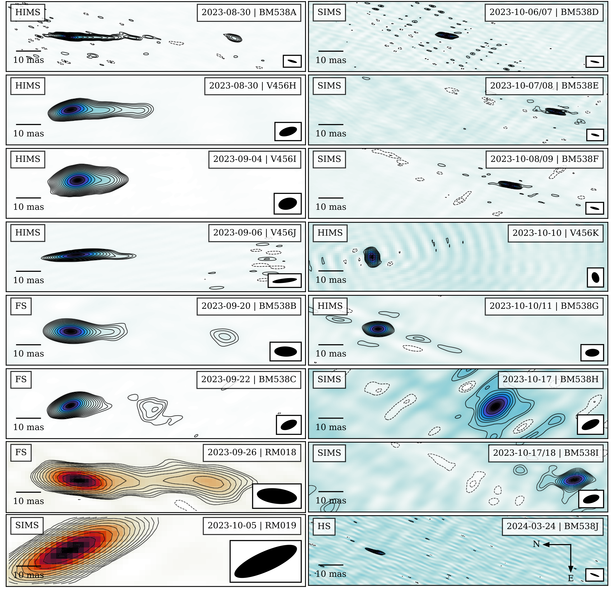
图注：Montage of images from our VLBI campaign during the 2023/2024 outburst of \(\sjfull.\) Time progresses down the left column and then down the right column. These static reconstructions show the evolution of the continuous jet and the ejection of multiple transient jet knots. See Table~\(\ref{tab:vlbi observation log}\) for observation details. The images have been rotated \(\qty{90}{\degree}\) counter-clockwise, as marked by the compass in the lower right panel. The colour scale and contours are described in Figures~\(\ref{fig:bm538c},\) \(\ref{fig:rm018},\) \(\ref{fig:state transition montage},\) \(\ref{fig:bm538I bm538H images},\) \(\ref{fig:bm538j},\) in Figure~3 of \(\citet{2024ApJ...971L...9W}\) and Figure~1 of \(\citet{2025ApJ...984L..53W}.\) The restoring beams are shown by the black ellipses. The labels in the top right give the dates and observation codes, and the labels in the top left show the accretion state of \sjfull\ during the observations\textsuperscript{a}. Observations at \(\qty{8.4}{\GHz}\) are in blue and observations at \(\qty{4.9}{\GHz}\) are in red. Observations BM358B and BM538G have simultaneous \(\qty{2.3}{\GHz}\) data, which we do not show in this montage (see Figure~1 of \(\citet{2025ApJ...984L..53W},\) and Figure~\(\ref{fig:state transition montage}\) here). The images of RM019 and BM538D were made from only a short slice of the data (see Sections~\(\ref{sec:rm019}\) and \ref{sec:BM538D, BM538E, BM538F, V456K, and BM538G}). We show the evolution of the position of the core (corrected for small systematic astrometric offsets) in Figure~\(\ref{fig:core astrometry}.\)
对应解读：对应“建议重点查看的图表”第1项和“关键图表逐图导读”图2：VLBI 图像序列，展示核心、连续喷流和离散团块随日期变化。
入选理由：这是整篇 VLBI 观测的总览图，直接呈现连续喷流的熄灭/恢复以及多个瞬变团块的出现，是理解“实时喷流实验室”核心结论的首要图。相比单一历元图，它能同时支持团块沿喷流轴演化、不同吸积态下射电形态变化以及成图结构可靠性的讨论。
来源与置信度：\(arxiv_source\)；high；\(arxiv_source\) / main.tex:figure[2]
Fig01
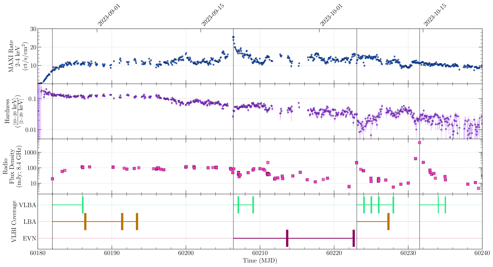
图注：Overall X-ray and radio evolution of \sjfull\ and the 15 VLBI observations taken during the peak of the 2023 outburst. The top panel shows the 2-4 keV MAXI/GSC\textsuperscript{a} X-ray light curve \(\citep{2009PASJ...61..999M},\) the second panel shows the MAXI/GSC X-ray hardness ratio, and the third panel shows the overall radio light curves presented in \(\citet{2025ApJ...988..109H},\) re-scaled to \(\qty{8.4}{\GHz}.\) The vertical coloured bars in the bottom panel show the times and durations of the VLBI observations, and they are connected via the horizontal coloured lines to the vertical black lines, which show the timing of the respective events that triggered our observations. These triggers were: the first radio detection of \sjfull\ on 2023 August 26 \(\citep\)[MJD 60182;][]{2023ATel16211....1M}, the bright X-ray flare on 2023 September 19 (MJD 60206), the radio flare detected on 2023 October 6 \(\citep\)[MJD 60223;][]{2023ATel16271....1M}, and the radio flare detected on 2023 October 14 \(\citep\)[MJD 60231;][]{2023ATel16289....1T}. The first four VLBI observations were published in \(\citet{2024ApJ...971L...9W},\) the fifth was published in \(\citet{2025ApJ...984L..53W},\) and the second EVN observation was published in \(\citet{2025ApJ...987L..14C}.\) We took a final astrometric observation with the VLBA on 2024 March 24 (MJD 60393) following the reverse transition to the hard-state \(\citep{2024ATel16541....1P, 2024ATel16552....1R},\) which is not included \(\change{here}.\)
对应解读：对应“建议重点查看的图表”第5项和“关键图表逐图导读”图1：X 射线与射电观测时间线，以及 VLBI 历元相对爆发和触发事件的位置。
入选理由：该图把 MAXI X 射线强度、硬度、射电光变和 15 次 VLBI 观测历元放在同一时间轴上，是检验喷流抛射是否与状态转换或射电/X 射线事件存在共同模板的基础。它特别适合支撑日报中“不能把观测历元直接当作抛射时刻”和“无一致 X 射线标志”的解读。
来源与置信度：\(arxiv_source\)；high；\(arxiv_source\) / main.tex:figure[1]
Fig08
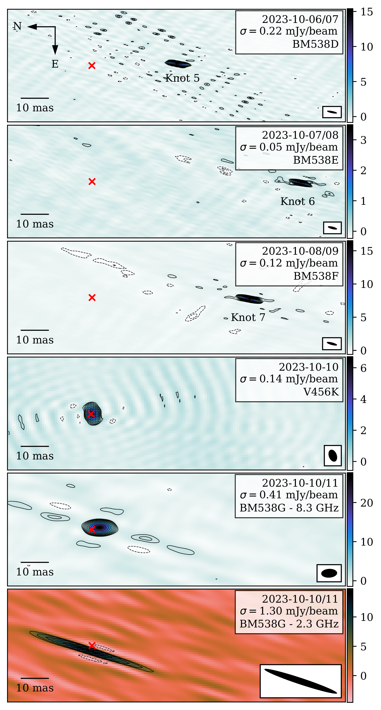
图注：Images of \sjfull\ following the first reported state transition and associated radio flaring on 2023 October 5 (MJD 60222). For each image, the colour scale shows the intensity in \(\unit{\mJy\per\beam},\) and the contours are at $\pm\sigma\times\sqrt{2}^{n}$ for $n=3,4,5,...$ where $\sigma$ is the noise level of the images shown in the labels. The images are rotated counter-clockwise by \(\qty{90}{\degree},\) as shown by the compass, and the ellipses show the restoring beams of the images. The red crosses mark the location of the core in the first VLBA observation. The observation details are given in Table~\(\ref{tab:vlbi observation log}.\) The first three observations show three discrete transient jet knots (knots 5, 6, and 7), and by 2023 October 10 (MJD 60227) the compact core had re-established.
对应解读：对应“建议重点查看的图表”第1项、第5项，以及“关键图表逐图导读”中关于状态转换后多个离散团块的讨论。
入选理由：该图专门展示第一次报告的状态转换及射电耀发之后的 VLBI 图像序列，清楚标出 knots 5、6、7 以及核心重新建立，是连接 X 射线状态转换、瞬变团块发射和连续喷流恢复的关键证据。比单张连续喷流图更直接支持“多次状态转换附近重复抛射”的结论。
来源与置信度：\(arxiv_source\)；high；\(arxiv_source\) / main.tex:figure[8]
Fig09
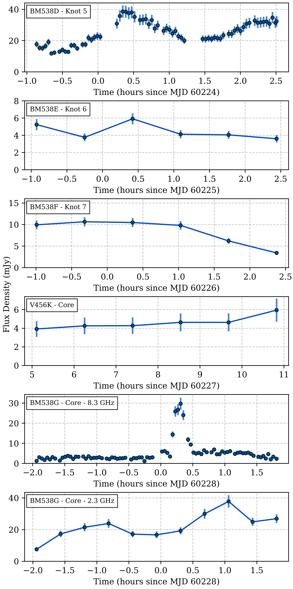
图注：Light curves of the jet knots launched by \sjfull\ following the reported state transition on 2023 October 05 (MJD 60206). The y-axis shows the integrated flux density in mJy, measured by fitting for the flux density evolution of the jet components (transient knots and compact core) shown in Figure~\(\ref{fig:state transition montage}.\) For observation BM538D and the 8.3 GHz band of BM538G, we fit the flux density in every individual scan, while in the others we linearly interpolated between the measured flux densities.
对应解读：对应“建议重点查看的图表”第4项和“关键图表逐图导读”图5：团块通量密度随时间曲线、分段模型和观测内快速变化。
入选理由：该图给出状态转换后多个喷流团块和核心的积分通量密度演化，直接体现作者在可见度模型中允许通量随时间变化的必要性。它能支撑日报中关于“常规成图会平均掉快速变化”“不要把通量衰减简单等同于物质消失”的重点说明。
来源与置信度：\(arxiv_source\)；high；\(arxiv_source\) / main.tex:figure[9]
Fig06
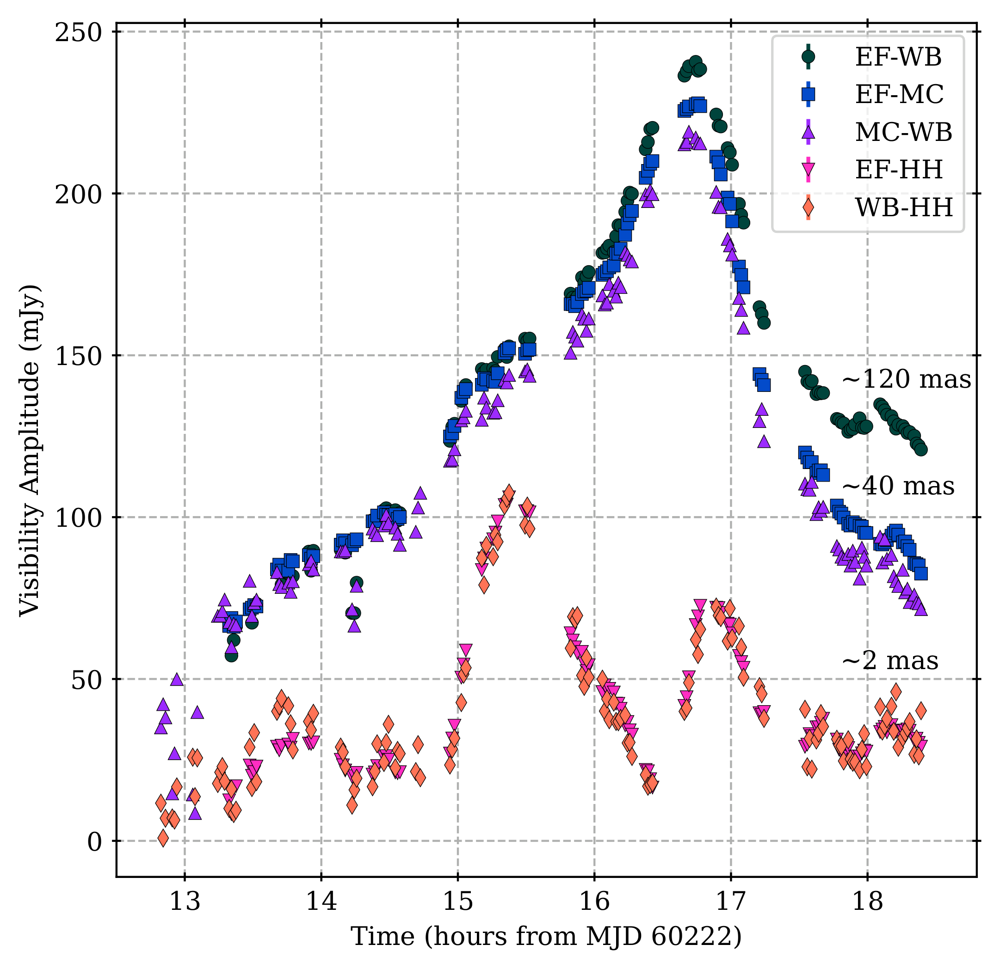
图注：Visibility amplitudes from north-south baselines in the 4.9-\(\unit{\GHz}\) EVN observation of \sjfull\ on 2023 October 5 (RM019). The observation is centred at \(\qty{4.93}{\GHz},\) unlike the VLBA and LBA observations (Table~\ref{tab:vlbi observation log}). The baselines between EF, WB, and MC are intra-European baselines, while baselines to HH are from Europe to South Africa. On the right side of the plot, we label the approximate north-south fringe spacing of the baselines (and therefore the size scale of the structure they probe). The visibility amplitudes show rapid variability on all baselines, including `beating' on the long baselines, likely due to the increasing separation of at least two distinct components.
对应解读：对应“建议重点查看的图表”第3项和模型拟合段落：可见度层面的诊断，以及时间依赖模型相对静态成图的必要性。
入选理由：虽然它不是标准残差图，但直接展示 EVN 可见度振幅在不同南北基线上的快速变化和长基线 beating，是论文强调直接拟合复可见度、识别多个快速分离分量的重要证据。它比普通成图更能说明为什么时间依赖可见度建模不可替代。
来源与置信度：\(arxiv_source\)；high；\(arxiv_source\) / main.tex:figure[6]
Fig10
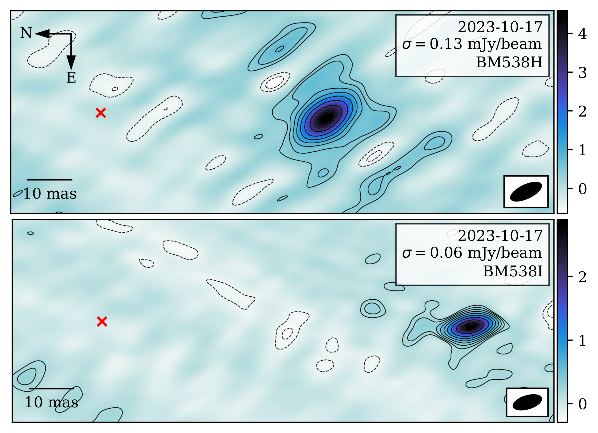
图注：Images of \sjfull\ on 2023 October 17, following the second reported state transition. For each image, the colour scale shows the intensity in \(\unit{\mJy\per\beam},\) and the contours are at $\pm\sigma\times\sqrt{2}^{n}$ for $n=3,4,5,...$ where $\sigma$ is the noise level of the images shown in the labels. The images are rotated counter-clockwise by \(\qty{90}{\degree},\) as shown by the compass, and the ellipses show the restoring beams of the images. The red crosses mark the location of the core in the first VLBA observation. The observation details are given in Table~\(\ref{tab:vlbi observation log}.\) The observations show a large, resolved discrete jet knot travelling between the observations at $\sim$\(\qty{30}{\mas\per\day},\) which we refer to as knot 8.
对应解读：对应“建议重点查看的图表”第1项、第7项，以及关键图表中关于第二次状态转换后高速离散团块的讨论。
入选理由：该图展示第二次状态转换后 knot 8 在相邻观测间以约 30 mas/day 运动的大尺度离散结构，是高速瞬变喷流的直观证据。它补充 Fig08 所示的第一次状态转换事件，说明同一源在不同转换附近可发射性质不同的团块。
来源与置信度：\(arxiv_source\)；high；\(arxiv_source\) / main.tex:figure[10]
强相关工作
同一源方面，Swift J1727.8-1613 在 2023 年爆发后已有多波段发现、X 射线时序、光学/红外和射电跟进工作；本文属于同一事件、同一源的 VLBI 运动学研究。建议检索关键词包括“Swift J1727.8-1613 outburst 2023”、“Swift J1727.8-1613 radio jet”、“Swift J1727.8-1613 X-ray timing”、“Swift J1727.8-1613 VLBI”。若要找同源论文，优先查 arXiv、NASA ADS 和 ATel/GCN 通报，而不要只依赖新闻稿。
同类源方面，最直接的比较对象是 MAXI J1820+070、H1743-322、XTE J1550-564、GRO J1655-40 和 GRS 1915+105。这些系统都曾显示黑洞 X 射线双星中的离散相对论性喷流和表观超光速运动。不同的是，许多历史源的采样较稀疏，或只有一次主要抛射；Swift J1727.8-1613 的优势在于同一爆发中的重复抛射和观测内可见度建模。
理论背景上，Fender、Belloni 和 Gallo 提出的统一喷流-吸积耦合图像仍是理解硬态紧致喷流、软态射电淬灭和中间态瞬变抛射的基础。本文并非推翻该图像，而是指出其“状态—喷流”对应关系需要更细的瞬时参数，例如内盘半径、磁通量积累、喷流磁化、内激波速度差和环境密度。相反或有张力的观点包括：喷流速度主要由黑洞自旋决定，或存在普适的 X 射线喷流线。本文的多团块速度变化对这些简单版本形成压力。
同一事件 / 同类源线索：
相似工作：
基础理论 / 方法工作：
相反观点 / 张力线索：
（未提供）
4. The most extreme high-z radio quasars in the eRASS:1 X-ray survey
- 来源：arXiv / astro-ph.HE
- 链接：https://arxiv.org/abs/2608.04078v1
- 作者：L. Ighina, L. Palmieri, L. N. Martínez-Ramírez, A. Caccianiga, T. Connor, A. Moretti, B. Arsioli, Y. Beletsky
- 评分：novelty 8/10，importance 8/10，relevance 8/10，final 9.00/10
- 推荐理由：eRASS/光学近红外/射电联合发现大量z>3.5高红移射电类星体并识别z>4 X射线选blazar，显著扩展早期宇宙喷流AGN样本；与AGN/blazar高能天文学相关。
中文题目：eRASS:1 X 射线巡天中的最极端高红移射电类星体
做了什么：这篇文章把 eROSITA 第一次全天巡天的 X 射线源、DECam 光学/近红外成像和 ASKAP RACS 射电巡天交叉匹配，用来寻找高红移射电类星体。作者从颜色、射电和 X 射线条件筛出 68 个新候选体，对其中 46 个做了光谱后随观测，确认 39 个为红移 \(z>3.5\) 的类星体；其中 \(z>4\) 的射电类星体新增 14 个，使同一区域、同一通量限制下的已知样本增加约 \(65\%\)。论文还用 X 射线相对光学强度识别耀变体候选，并把 \(z>4\) 的 X 射线选择耀变体数目与一种分数式 \(\mathrm{IC/CMB}\) 模型预测比较，发现总体相符。
为什么重要：高红移射电类星体和耀变体是早期宇宙中最强喷流黑洞的可观测端点。它们的数目密度直接关系到 \(z\gtrsim4\) 时期超大质量黑洞如何快速增长、相对论喷流何时形成、以及喷流辐射中同步辐射、逆康普顿散射和宇宙微波背景光子场的相对贡献。过去这类源的样本小且选择函数不统一，这篇工作利用全天 X 射线、射电和深光学巡天的组合，显著扩大了可用于统计的样本。
理论 / 观测 / 仪器方法价值：对观测而言，本文给出了一条可复制的多波段筛选路径：先由 X 射线和射电保证活动星系核与喷流相关性，再用光学/近红外颜色挑出高红移候选，最后以光谱确认。对理论而言，新增的 \(z>4\) 源数和耀变体候选数可直接约束高红移喷流活动占空比、束流修正后的母族数目和 \(\mathrm{IC/CMB}\) 辐射模型。对方法而言，它展示了 eROSITA、RACS 和 DECam 类数据在寻找稀有早期宇宙喷流源时的互补性，也暴露了光谱不完备和耀变体分类阈值带来的系统误差。
为什么应该关注：如果你关心早期超大质量黑洞的形成，这篇文章提供的是一批真正能改变样本统计的新源，而不是单个纪录源。如果你研究喷流辐射，它把高红移 X 射线耀变体数目与 \(\mathrm{IC/CMB}\) 增强预言放在同一张统计表上检验。如果你做巡天源表或目标筛选，本文也是一个很实用的案例：如何在大面积、多波段但深度不均一的数据中，尽量高效地找到 \(z>3.5\) 的射电类星体。
展开详细解读：文章讲解、背景、理论、重点章节、图表与相关工作
文章详细讲解
科学问题：论文要解决的是高红移射电类星体，尤其是 \(z>4\) 的强喷流系统到底有多少，以及它们的 X 射线亮度是否符合高红移喷流中逆康普顿散射宇宙微波背景光子的增强图像。这个问题重要，是因为射电类星体和耀变体只占类星体总体的一小部分，但它们代表了相对论喷流沿视线或接近沿视线的极端状态。对 \(z>4\) 源而言，宇宙年龄不到现在的一小部分，任何一个强喷流、强吸积源都对黑洞种子、吸积效率和喷流触发条件提出强约束。
作者怎么做：作者把 eROSITA All-Sky Survey 第一轮数据中的 X 射线源与 DECam Local Volume Exploration 的光学/近红外成像、以及 Rapid ASKAP Continuum Survey 的射电源表结合。筛选逻辑不是单靠颜色选高红移类星体，而是要求源在 X 射线和射电上都表现出活动星系核特征，再用光学/近红外颜色排除低红移星系和恒星污染。这样得到 68 个新的高红移类星体候选体。随后作者对 46 个候选体开展光谱后随，利用宽发射线、连续谱断裂和吸收特征测红移，确认其中 39 个为 \(z>3.5\) 类星体。
关键结果：最直接的结果是确认效率很高，46 个已观测候选体中 39 个为 \(z>3.5\)，说明多波段选择函数确实抓住了目标族群。更关键的是在 \(z>4\) 的射电类星体子样本中，本文新确认 14 个源；在相同天区和通量限制下，这相当于把已知总体提高约 \(65\%\)。作者进一步用 X 射线到光学的相对强度挑出耀变体候选，并与文献中的分数式 \(\mathrm{IC/CMB}\) 模型比较。所谓分数式，是指并非假设全部高红移喷流 X 射线都由 \(\mathrm{IC/CMB}\) 主导，而是允许一部分喷流或一部分辐射贡献随红移被宇宙微波背景能量密度增强。比较结果显示，观测到的 \(z>4\) X 射线选择耀变体数目与模型预期总体相容。
局限和下一步：限制主要有三类。第一，68 个候选体中只有 46 个有光谱确认，因此红移分布和成功率仍受目标优先级、可观测性、天气和光谱信噪比影响。第二，耀变体分类并非来自 VLBI 超光速运动或长期高能变源性，而是主要依赖 X 射线相对光学强度等间接指标，因此会混入非对准但 X 射线增强的射电响类星体，也可能漏掉光学特别亮或 X 射线暂时暗的真耀变体。第三，\(\mathrm{IC/CMB}\) 比较依赖选择函数、通量限制、光谱形状和母族演化模型。下一步最有价值的是补全剩余候选体光谱，获取更深射电谱指数和高分辨射电形态，结合 X 射线光谱或多历元变源性，把“X 射线强”进一步分解为吸积盘冕、喷流同步自康普顿和 \(\mathrm{IC/CMB}\) 成分。
关键结果是怎么做出来的
样本选择的证据链从三类巡天开始。eRASS:1 提供大面积 X 射线源，RACS 提供南天大面积射电对应体，DELVE/DECam 提供足够深的光学和近红外颜色信息。作者首先做位置交叉匹配，要求候选体同时具有 X 射线和射电信号，这一步显著降低普通恒星和非活动星系污染；再利用高红移类星体典型的 Lyman 断裂颜色轨迹，筛出 68 个新候选体。读者应特别关注论文中候选体表格的通量限制、匹配半径、颜色条件和剔除条件，因为这些条件决定了后面所有“新增比例”和“与模型比较”的选择函数。
光谱确认是本文最硬的结果。作者对 46 个候选体做了后随光谱，确认 39 个 \(z>3.5\) 类星体。确认依据应包括宽发射线，如 \(\mathrm{Ly}\alpha\)、\(\mathrm{C}\,\textsc{iv}\)、\(\mathrm{Si}\,\textsc{iv}\) 或其他紫外线在观测波段中的位置，以及 \(\mathrm{Ly}\alpha\) forest 导致的蓝端吸收。46 个观测目标中 39 个成功意味着候选筛选纯度约为 \(85\%\)，但这不是完整候选样本的无偏成功率，因为未观测的 22 个可能在亮度、颜色、赤纬或观测优先级上不同。
最重要的统计声明是 \(z>4\) 射电类星体新增 14 个，在同一区域和相同通量限制下使已知数目增加约 \(65\%\)。这个结论的分母不是全宇宙已知 \(z>4\) 类星体，也不是全部射电类星体，而是受同样面积和通量下限约束的可比样本。读者应检查作者如何定义“same flux limits in the same area”：X 射线通量限制、射电通量限制、光学探测限制和遮罩区域是否同时进入统计。如果只用射电或 X 射线其中一种限制，新增比例会变得不可直接解释。
耀变体识别部分的证据链更间接。作者用 X 射线到光学的相对强度，即类似 \(\alpha_{\rm ox}\) 或 X 射线过亮指标，寻找喷流指向视线方向的候选体。这里的统计不是单个源的高显著性发现，而是把满足阈值的源数与模型预测的总数比较。关键要看阈值如何设定、是否考虑 X 射线通量误差、光学吸收和非同时观测变源性，以及被分类为耀变体的源是否在射电亮度、射电谱指数或光谱能量分布上也支持喷流主导。
与分数式 \(\mathrm{IC/CMB}\) 模型的比较应理解为数目计数检验，而非对每个源的辐射机制定论。模型给出在 eRASS:1 类 X 射线选择下应发现多少 \(z>4\) 耀变体，观测数若落在 Poisson 误差、样本不完备修正和分类不确定性允许范围内，就称为总体相符。系统误差主要来自光谱不完备、红移分布偏差、X 射线和光学非同时性、射电匹配假阳性、以及 \(\mathrm{IC/CMB}\) 模型中喷流 Lorentz 因子和占空比假设。稳健性检验应包括改变耀变体阈值、对未观测候选体做上下限估计、以及在不同通量限制下重复数目比较。
展开背景、理论、公式、模型、章节和图表导读
背景知识
研究对象是高红移射电类星体：它们是具有强吸积盘辐射和射电喷流的活动星系核，红移 \(z>3.5\) 或 \(z>4\) 意味着我们看到的是宇宙早期的超大质量黑洞。类星体的光学紫外光主要来自吸积盘和宽线区，射电来自相对论喷流的同步辐射，X 射线则可能来自盘冕、喷流同步自康普顿、外康普顿散射，或大尺度喷流的 \(\mathrm{IC/CMB}\)。正因为多种机制会叠加，高红移射电类星体既是黑洞增长探针，也是喷流物理探针。
历史上，高红移类星体多由光学颜色巡天发现，例如利用 \(\mathrm{Ly}\alpha\) 断裂在不同滤光片间移动的 dropout 技术。射电类星体样本则依赖 FIRST、NVSS、SUMSS、VLASS、RACS 等射电巡天。问题是射电响高红移类星体很稀少，高红移光学颜色又容易受到 M/L/T 矮星、尘埃红化低红移星系和测光误差污染。若只从光学选，再查射电，往往偏向光学亮源；若只从射电选，又需要很强的多波段约束才能排除低红移污染。
X 射线巡天让这个问题值得重新看。eROSITA 提供了大面积、相对均一的软 X 射线源表，比以往许多 pointed 观测更适合做总体计数。对射电类星体来说，X 射线探测提高了活动核确认度，也对喷流相关辐射特别敏感。RACS 让南天射电对应体选择更完整，DECam/DELVE 则提供了寻找高红移颜色断裂所需的成像。三者结合，使高红移、射电、X 射线三重选择第一次在较大天区上有较高效率。
该领域一个常见误区是把“X 射线强”等同于“耀变体”。真正的耀变体定义涉及喷流小视角、强相对论增亮、快速变源性、高偏振或 VLBI 紧致核等证据。高红移源因 X 射线和光学观测常常非同时，且 \(\mathrm{IC/CMB}\) 可能增强大尺度喷流 X 射线，单靠 X 射线相对光学强度只能给出候选分类。另一个误区是把新增源数直接当作空间密度演化；实际上必须考虑通量限制、面积、颜色选择函数、光谱不完备和 K 修正。
基础理论 / 方法脉络
基础物理图像可以从三块辐射区理解。吸积盘把引力势能转化为光学/紫外连续谱，宽线区把紫外光再处理成宽发射线；热或非热盘冕产生 X 射线；相对论喷流中的电子在磁场中产生射电到光学同步辐射，并通过散射自身同步光子或外部光子产生 X 射线到伽马射线。若喷流接近视线方向，Doppler 增亮使观测通量大幅提高，这就是耀变体选择的核心物理。
高红移选择依赖宇宙学红移和星际介质吸收。源的静止系紫外谱线会移动到观测光学/近红外波段，\(\mathrm{Ly}\alpha\) 短波侧被星系际中性氢吸收，形成明显颜色断裂。对于 \(z>4\) 源，\(\mathrm{Ly}\alpha\) 波长从 \(1216\,\text{\AA}\) 移到 \(\gtrsim6000\,\text{\AA}\)，这使得 DECam 的多色测光能有效区分类星体和普通低红移蓝星系。不过棕矮星也可有类似红色颜色，因此 X 射线和射电探测是重要的额外判据。
本文的观测统计逻辑是多波段交叉匹配。X 射线源有位置误差和探测似然，射电源也有位置、通量和形态信息；光学源则提供颜色和可能的形态分类。匹配时真正的问题不是简单最近邻，而是背景源面密度与位置误差共同决定的偶然重合概率。射电和 X 射线都较稀疏，因此双重探测使假匹配率降低，但对复杂射电形态，例如双瓣无明显核心的源，简单位置匹配可能漏检。
耀变体判别通常用多波段谱指数或相对强度。例如 X 射线到光学的谱指数衡量在给定光学紫外亮度下 X 射线是否过强。喷流指向源会因 Doppler 因子 \(\delta\) 使同步和逆康普顿辐射增强；高红移时宇宙微波背景能量密度随 \((1+z)^4\) 增长，会提高 \(\mathrm{IC/CMB}\) 冷却和辐射效率。因此，对 \(z>4\) X 射线选择耀变体的数目计数，可以检验喷流辐射模型和喷流母族演化。
主要退化关系也很清楚。X 射线强可能来自小视角喷流，也可能来自本征盘冕强、吸收校正错误、光学被尘埃压低、非同时变源性，或大尺度 \(\mathrm{IC/CMB}\) 成分。颜色选择可能把尘埃红化低红移 AGN 混入高红移候选，也可能漏掉被吸收或光学很弱的真实高红移类星体。因此这类工作不能只看“确认多少个”，还必须读选择函数、未观测候选体、通量限制和分类阈值。
公式与推导
第一步是把红移与可观测波长联系起来。若静止系谱线波长为 \(\lambda_{\rm rest}\)，观测波长为 \(\lambda_{\rm obs}\)，则
这里 \(z\) 是宇宙学红移。对高红移类星体，\(\mathrm{Ly}\alpha\) 的 \(\lambda_{\rm rest}=1216\,\text{\AA}\)，因此当 \(z\simeq4\) 时它移到 \(\lambda_{\rm obs}\simeq6080\,\text{\AA}\)，这正是光学颜色断裂选择的基础。
第二步是把本征光度和观测通量连接起来。若单色光度为 \(L_{\nu_{\rm em}}\)，观测单色通量密度为 \(F_{\nu_{\rm obs}}\)，且 \(\nu_{\rm em}=(1+z)\nu_{\rm obs}\)，则
其中 \(D_L\) 是光度距离。这个式子说明，同一通量限制对应的本征光度下限随 \(z\) 快速升高，因此本文发现的是最亮、最极端的一部分早期喷流源。
第三步是射电响和射电通量的 K 修正。若射电谱近似为 \(F_\nu\propto \nu^{-\alpha_r}\)，则从观测频率 \(\nu_{\rm obs}\) 推到静止系频率时常用
这里 \(\alpha_r\) 是射电谱指数。若没有多频射电测量，\(\alpha_r\) 的假设会直接影响射电光度、射电响分类和母族数目估计。
第四步是 X 射线到光学相对强度，常用形式为
其中 \(L_{\nu,\,2\,\rm keV}\) 和 \(L_{\nu,\,2500\,\text{\AA}}\) 分别是静止系 \(2\,\rm keV\) 和 \(2500\,\text{\AA}\) 的单色光度。若 \(\alpha_{\rm ox}\) 相对普通类星体关系显著偏大，源可能有喷流贡献或吸收/变源性导致的异常。
第五步是 Doppler 增亮。喷流 bulk Lorentz 因子为 \(\Gamma\)，速度为 \(\beta c\)，视角为 \(\theta\)，Doppler 因子为
对幂律谱辐射，观测通量常近似满足
其中 \(F'_{\nu'}\) 是喷流共动系通量，\(\alpha\) 是谱指数，\(p\) 与连续喷流或离散 blob 几何有关。这个关系解释了为什么小视角耀变体在 X 射线和射电选择中被过度代表。
第六步是 \(\mathrm{IC/CMB}\) 的红移标度。宇宙微波背景能量密度为
其中 \(a\) 是辐射常数，\(T_0\) 是当前 CMB 温度。若电子能量分布和磁场不变，逆康普顿相对同步辐射的强度可用近似比值表示为
这里 \(U_{\rm rad}\) 可包含 CMB 光子场，\(U_B\) 是磁场能量密度。高 \(z\) 下 \(U_{\rm CMB}\) 增长，使 \(\mathrm{IC/CMB}\) 成为解释 X 射线增强的自然候选。
第七步是候选体数目与选择函数。若本征光度函数为 \(\Phi(L,z)\)，巡天覆盖立体角为 \(\Omega\)，选择函数为 \(S(L,z)\)，预期源数为
其中 \(dV_c/(dz\,d\Omega)\) 是共动体积元。本文新增 \(z>4\) 源和耀变体候选数与模型预测的比较，本质上就是检查 \(N_{\rm obs}\) 是否与 \(N_{\rm exp}\) 相容。
第八步是计数显著性。若预期背景或模型均值为 \(\mu\)，观测到 \(N\) 个源，Poisson 似然为
比较不同模型 \(M_1\) 和 \(M_2\) 时可看似然比
在样本数不大时，不应简单使用 Gaussian 误差；Poisson 区间、光谱不完备和分类概率都应进入 \(\mu\) 或层级模型。
模型拟合 / 应用方法
这类工作的“拟合”不只是拟合单个光谱，而是包含候选筛选、光谱红移确认、多波段光度估计和数目计数模型比较。光谱层面，拟合量包括红移 \(z\)、连续谱斜率、发射线中心和宽度，以及可能的吸收导致的蓝端截断。对于低信噪比高红移光谱，\(\mathrm{Ly}\alpha\) 线峰会被吸收和 IGM 透射起伏偏移，因此仅用 \(\mathrm{Ly}\alpha\) 测红移会有系统偏差；若有 \(\mathrm{C}\,\textsc{iv}\) 或其他紫外宽线，可以更稳健。
多波段 SED 层面，拟合或估计量包括射电通量密度、光学/紫外绝对星等、X 射线通量、X 射线光度和 \(\alpha_{\rm ox}\) 类指标。这里的似然通常由不同波段的测量误差相乘构成，但真实问题更复杂，因为这些数据不是同时观测的，耀变体又会强烈变源。因此，非同时性应被看作额外散布，而不是简单的测量误差。若论文给出阈值分类，读者应把靠近阈值的源视为概率对象，而非确定标签。
数目计数比较层面，关键参数包括光度函数归一化和演化、射电响比例、喷流 Lorentz 因子分布、耀变体视角条件、\(\mathrm{IC/CMB}\) 对 X 射线通量的增强比例、以及 eRASS:1 的灵敏度图。若作者采用文献中的分数式 \(\mathrm{IC/CMB}\) 模型，那么本文主要提供观测端的 \(N_{\rm obs}\) 和选择函数约束，而不是重新从头拟合全部喷流物理参数。模型相符应理解为在当前误差和不完备下没有明显冲突。
主要退化包括红移与颜色的退化、射电谱指数与射电光度的退化、X 射线增强与耀变体视角的退化、以及未观测候选体与真实红移分布的退化。举例说，一个光学偏暗但 X 射线正常的源可能表现出很高的 X 射线相对光学强度，从而被误判为耀变体；反过来，一个真耀变体若在 eROSITA 扫描时处于低态，也可能掉出 X 射线选择。射电复杂形态还会造成核心通量低估或匹配失败。
实际应用中，最可靠的做法是把每个候选体赋予分类概率和红移概率，再把这些概率传播到总体计数。理想的层级模型会同时包含候选体被光谱观测的概率、被确认为高红移的概率、被归为耀变体的概率和巡天探测概率。本文的结果已经足以显著扩展样本，但后续若要把它转化为喷流空间密度或黑洞质量函数约束，就需要更明确地建模这些选择效应。
重点章节 / 结果段落怎么读
-
数据和交叉匹配部分应先读。重点看 eRASS:1、DELVE/DECam 和 RACS 的覆盖区域、深度、匹配半径、源表质量标志和遮罩条件。这里决定了“同一区域、同一通量限制”的精确定义，也决定了候选体是否可用于无偏数目统计。
-
候选体选择方法是第二个关键部分。读者应检查颜色切、X 射线探测条件、射电通量阈值和排除恒星/低红移星系的方法。尤其要注意候选体从初始交叉匹配到 68 个新候选的每一步淘汰数，因为这给出污染率和完整性的线索。
-
光谱后随和红移确认部分最直接支撑发现。重点看 46 个观测对象中 39 个 \(z>3.5\) 的确认标准、光谱覆盖波段、信噪比、主要发射线标识和不确定红移的处理。若有源只靠单线确认，应比多线源更谨慎。
-
\(z>4\) 射电类星体新增比例部分需要和已有目录比较一起读。关键是作者如何定义可比的已知样本：天区是否一致，射电和 X 射线通量限制是否一致，是否包含先前未发表或未分类源。新增 14 个和约 \(65\%\) 增长的说服力取决于这一步。
-
耀变体分类和 \(\mathrm{IC/CMB}\) 模型比较部分应作为解释性结果来读。看作者使用哪一个 X 射线到光学相对强度阈值，如何处理误差和上限，模型预测的输入来自哪里，以及未完成光谱后随会怎样改变结论。若附录有个体源表、光谱图或稳健性检验，应与主文结论对照阅读。
建议重点查看的图表
-
多波段颜色选择图：应看候选体在颜色-颜色空间中相对低红移类星体、恒星轨迹和已知高红移类星体的位置，尤其是 68 个候选和 39 个确认源是否集中在预期 \(z>3.5\) 区域。
-
X 射线—射电或 X 射线—光学通量分布图：应看新源是否只是靠近探测阈值，还是覆盖了较宽动态范围；靠近阈值的源对 Eddington bias 和匹配误差更敏感。
-
光谱确认图集：应逐个检查 \(\mathrm{Ly}\alpha\)、\(\mathrm{C}\,\textsc{iv}\) 等线的位置、连续谱断裂和低信噪比源。单线红移和强吸收源是读图风险点。
-
红移分布直方图：应看已观测目标、已确认目标、未观测候选体和已有样本的分布是否可比。若高红移端主要来自少数光谱成功源，数目计数误差会较大。
-
新增 \(z>4\) 源与已知样本的通量限制比较表或图：应确认 14 个新增源确实位于同一选择边界内，约 \(65\%\) 增长不是由放宽通量或天区造成。
-
\(\alpha_{\rm ox}\) 或 X 射线相对光学强度图：应看耀变体候选相对普通类星体关系的偏离幅度、误差条和阈值线。最靠近阈值的点不应承担主要结论。
-
观测数与 \(\mathrm{IC/CMB}\) 模型预测比较图：应看模型不确定带是否包含观测值，以及作者是否展示了光谱不完备和分类阈值变化下的上下限。
关键图表逐图导读
图 1：通常会是天区覆盖或多波段匹配示意。横纵坐标可能是赤经和赤纬，底图或遮罩表示 eRASS:1、DELVE/DECam 与 RACS 的共同覆盖区域，点表示候选体和已确认源。读图重点是样本是否来自连续、可定义面积，而不是零散目标；读图陷阱是把覆盖区域内的局部深度差异忽略掉。
图 2：颜色-颜色选择图最可能是本文的筛选核心图。坐标轴会是两个光学/近红外颜色，例如某两个相邻滤光片的星等差；模型线或阴影区表示高红移类星体颜色轨迹，灰点表示背景源或恒星，彩色点表示候选体和光谱确认源。主要结论是多波段候选集中落在高红移选择框内。陷阱是测光误差会把低红移污染源散射进选择框，尤其在光学弱源处。
图 3：光谱图集应显示观测波长对通量密度，标出主要发射线和推断红移。数据线通常有较强噪声，平滑谱或误差谱可帮助识别线。主要结论是 46 个后随对象中多数具有明确高红移类星体特征。陷阱是 \(\mathrm{Ly}\alpha\) 线不对称且受吸收影响，线峰位置不一定等于系统红移。
图 4：红移和通量分布图可能以直方图或散点图展示新确认源与文献已知源的比较。横轴可能是 \(z\)，纵轴可能是源数、射电通量或 X 射线通量。主要结论是本文显著填补了 \(z>4\) 射电类星体样本。读图时要看是否只比较了满足共同通量限制的源；若混合不同巡天深度，新增比例会失真。
图 5：X 射线相对光学强度图可能以光学/紫外光度为横轴、X 射线光度或 \(\alpha_{\rm ox}\) 为纵轴，普通类星体关系作为模型线，散布带表示经验误差，耀变体候选在上方偏离。主要结论是若干 \(z>4\) 源 X 射线过亮，适合作为耀变体候选。陷阱是非同时观测和吸收校正可能把点上下移动。
图 6：模型比较图可能展示 \(z>4\) X 射线选择耀变体的累计数或预期数，观测值带有 Poisson 误差，模型线代表分数式 \(\mathrm{IC/CMB}\) 预测。读者应看观测点是否落在模型不确定区间内，以及改变分类阈值或补偿光谱不完备后是否仍相容。陷阱是“相符”不等于唯一支持该模型，其他喷流演化或选择效应组合也可能给出类似数目。
论文原图 / 可嵌入图片
Fig06
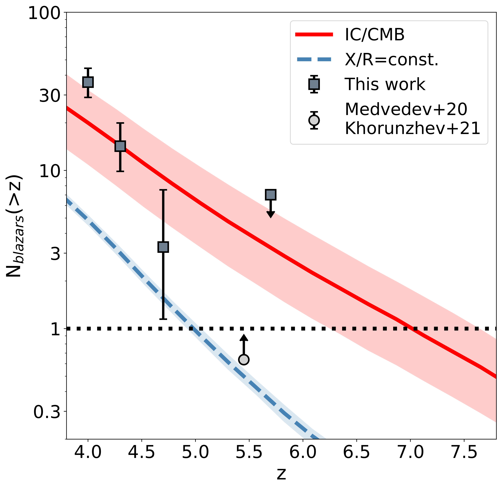
图注：Number of blazars expected to be detected eRASS:1 in the $\sim12000$~deg$^2$ covered by this analysis as a function of redshift. In the plot we show expectations for both constant X/R ratios as a function of redshift (dashed blue line) and for X/R evolution following the IC/CMB model (solid red line; see Eq. \(\ref{eq:enhace}\) and \citealt{Ighina2021b}). The black data points represent the observed number of blazars in this work above a given redshift value. The upper limit at $z\sim5.5$ is based on the detection of two blazars in the Russian half of the sky {\(\protect\) \citep{Medvedev2020,Khorunzhev2021}}.
对应解读：“建议重点查看的图表”第7项和“关键图表逐图导读”图6：观测数与 IC/CMB 模型预测比较；也对应模型拟合段落中的数目计数比较。
入选理由：这是检验论文核心物理结论的关键图，直接展示 eRASS:1 覆盖面积内随红移变化的耀变体累计数，并把观测黑点与恒定 X/R 模型和 IC/CMB 演化模型线比较。它最能支撑日报中关于“观测到的 z>4 X 射线选择耀变体数目与分数式 IC/CMB 模型总体相容”的解读。
来源与置信度：\(arxiv_source\)；high；\(arxiv_source\) / main.tex:figure[6]
Fig04
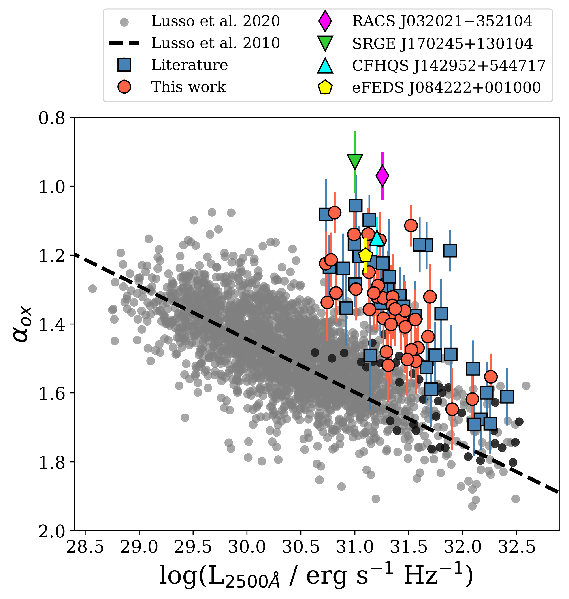
图注：Distribution of the $\alpha_{\rm ox}$ parameter as a function of the UV luminosity at 2500~\(\AA\) \, for the high-$z$ quasars selected in this work. As a reference we also report the $0
对应解读：“建议重点查看的图表”第6项和“关键图表逐图导读”图5：\(alpha_ox\) 或 X 射线相对光学强度图。
入选理由：该图以 UV 光度为横轴、\(alpha_ox\) 为纵轴，并叠加普通类星体经验关系，是判断新源是否 X 射线过亮、是否落在高红移耀变体或超爱丁顿类星体区域的核心诊断图。它直接支撑日报中关于耀变体候选分类阈值、普通类星体关系偏离和非同时观测系统误差的讨论。
来源与置信度：\(arxiv_source\)；high；\(arxiv_source\) / main.tex:figure[4]
Fig05
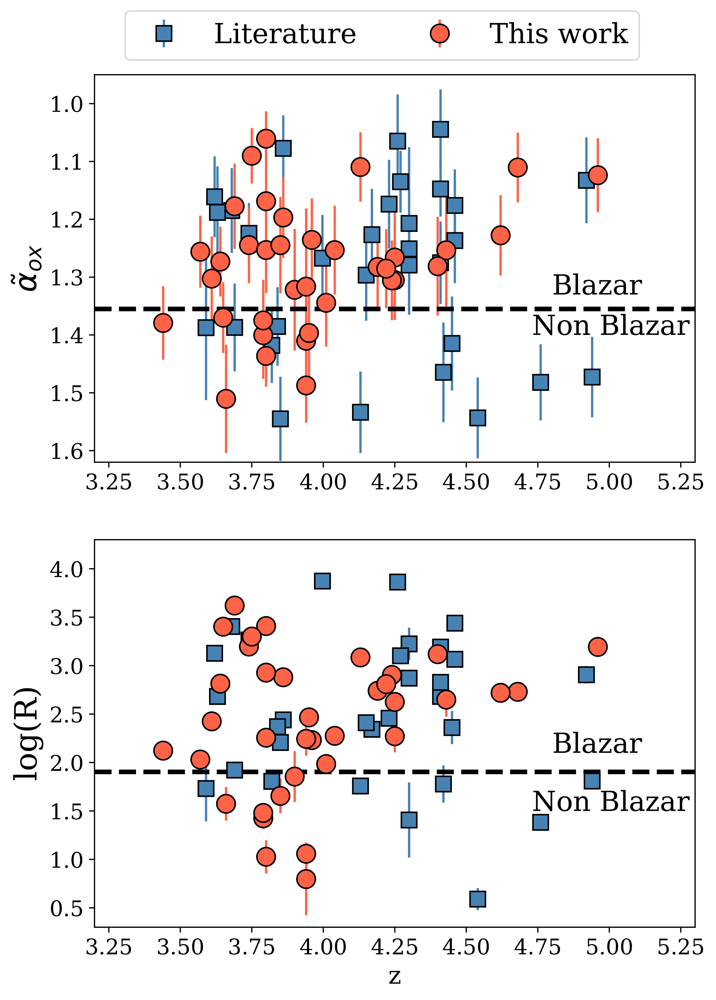
图注：Distribution of the $\tilde{\alpha}_{\rm ox}$ (top panel) and the radio-loudness (in logarithm scale; bottom panel) parameters as a function of redshift. Red circles indicate the new sources discovered in this work, while blue squares show sources already reported in the literature in the same area. The horizontal black lines indicate the typical thresholds used to identify blazars: $\tilde{\alpha}_{\rm ox}$=1.355 and R=80. Based on these thresholds, most of the sources selected in this work are consistent with being blazars.
对应解读：“建议重点查看的图表”第6项和模型拟合段落：tilde \(alpha_ox\) 与 radio-loudness 阈值分类。
入选理由：该图同时给出 tilde \(alpha_ox\) 和 radio-loudness 随红移的分布，并画出 blazar 分类阈值线，是理解作者如何把新发现源归为耀变体候选的最直接证据。相比 Fig04，它更明确显示阈值线以及哪些点靠近分类边界，因此对日报中“靠近阈值的源不应承担主要结论”的提醒尤其重要。
来源与置信度：\(arxiv_source\)；high；\(arxiv_source\) / main.tex:figure[5]
Fig07
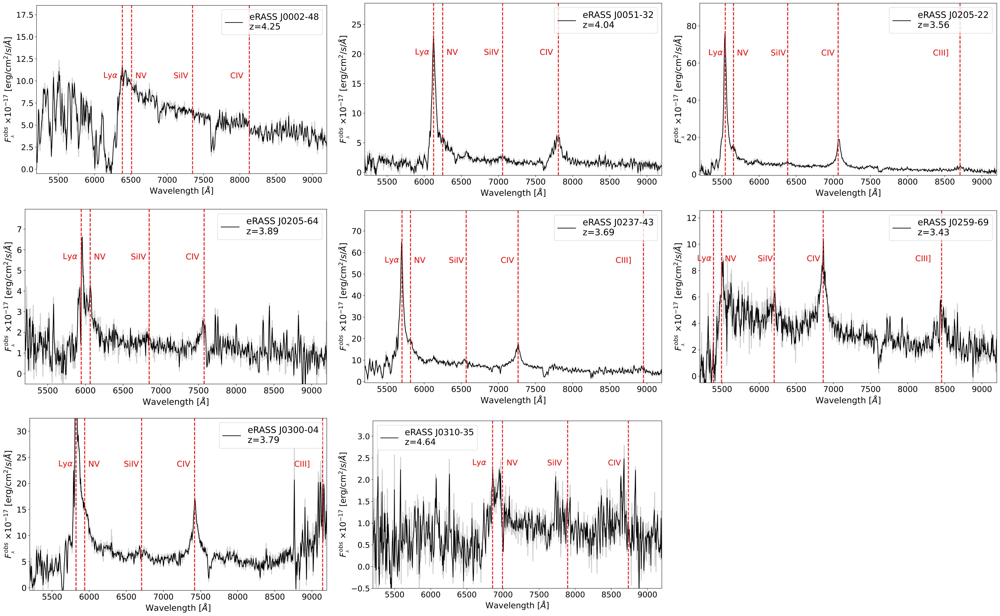
图注：Discovery spectra of the high-$z$ quasars newly identified in this work. Vertical dashed lines indicate the expected wavelength of redshifted emission lines in the observed range.
对应解读：“建议重点查看的图表”第3项和“关键图表逐图导读”图3：光谱确认图集。
入选理由：该图展示本文新确认高红移类星体的发现光谱，并用竖直虚线标出红移后发射线位置，是验证 46 个后随目标中多数确认为 z>3.5 的基础图。它直接对应日报中关于 Ly alpha、C IV、连续谱断裂、低信噪比和单线红移风险的逐图导读。
来源与置信度：\(arxiv_source\)；high；\(arxiv_source\) / main.tex:figure[7]
Fig02
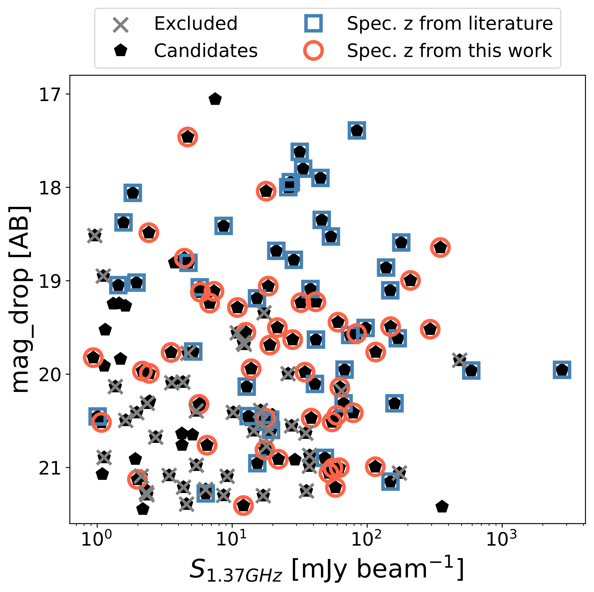
图注：Apparent magnitude from the DELVE survey as a function of the $S_{\rm 1.37GHz}$ radio surface brightness from RACS-mid for the high-$z$ candidates selected starting from the eRASS:1 survey. The magnitude corresponds to the filter after the dropout of the given candidate: $r$-filter for $z<4.5$, the $i$-filter for $4.7 \leq z \leq 5.7$ and the $z$-filter for $z>5.7$. Black pentagons indicate all the sources selected after optical and NIR colour criteria. Additional symbols indicate objects that already had a redshift measurement from the literature (blue squares), were excluded from the final sample because of their optical/NIR SED, have been observed as part of this work (red circles). As clear from the plot, the majority of the optically and radio-bright target have been identified.
对应解读：“建议重点查看的图表”第2项和第4项：光学亮度—射电面亮度分布、观测目标与已知源/未观测候选体的比较。
入选理由：该图以 DELVE 表观星等对 RACS 1.37 GHz 射电面亮度作图，并区分全部候选、已有红移源、被排除源和本文观测源，可用于判断新样本是否集中在探测阈值附近，以及光谱后随是否主要覆盖光学和射电较亮目标。它对评估选择函数、后随不完备和 Eddington bias 风险很有价值。
来源与置信度：\(arxiv_source\)；high；\(arxiv_source\) / main.tex:figure[2]
Fig03
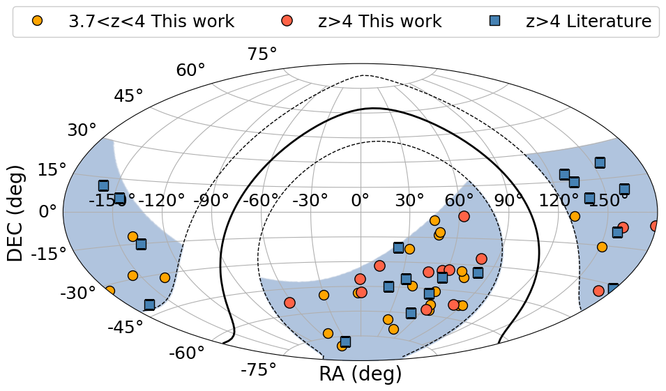
图注：Sky distribution of the high-$z$ quasars selected from the eRASS:1 survey. Objects already reported in the literature are marked by blue squares, while quasars newly discovered in this work are shown with orange ($z<4$) and red ($z>4$) circles. The shaded blue area corresponds to the area covered by eRASS:1 below Dec.=$+30^\circ$, where most of the sky is covered by DELVE.
对应解读：“关键图表逐图导读”图1和“建议重点查看的图表”第5项：天区覆盖、共同面积和已知/新增高红移源比较。
入选理由：该图展示 eRASS:1 与 DELVE 共同覆盖天区内高红移类星体的空间分布，并区分文献已知源与本文新发现源、z<4 与 z>4 源。它有助于确认 14 个新增 z>4 源和约 65% 增长是在可定义的共同面积内讨论，而不是来自零散目标或不一致天区。
来源与置信度：\(arxiv_source\)；high；\(arxiv_source\) / main.tex:figure[3]
强相关工作
这篇工作与高红移射电类星体搜索、X 射线选择类星体、以及高红移耀变体数目计数三条文献线相连。同类研究包括用 SDSS、Pan-STARRS、DES、WISE 与 FIRST/NVSS/VLASS/RACS 组合寻找 \(z>4\) 射电类星体，以及用 Chandra、XMM-Newton、Swift/XRT 和 eROSITA 检测高红移喷流源的工作。检索关键词可用 “high-redshift radio quasars z>4 eROSITA RACS”, “X-ray selected blazars high redshift”, “radio-loud quasars early Universe”。
理论背景上，本文直接触及 \(\mathrm{IC/CMB}\) 模型和高红移喷流 X 射线增强问题。该模型的基础是 CMB 能量密度随 \((1+z)^4\) 增长，因此大尺度喷流或某些喷流区的逆康普顿 X 射线在高红移更容易被探测。但这个解释长期存在争议：一些低红移大尺度喷流的多波段谱、Fermi 伽马射线限制和偏振观测并不总支持简单 \(\mathrm{IC/CMB}\) 主导。检索关键词可用 “IC/CMB high redshift jets”, “large-scale quasar jets inverse Compton CMB controversy”, “blazar demographics high redshift Lorentz factor”。
就事件或源背景而言，本文不是单一瞬变或单一命名源论文，而是 eRASS:1、RACS 和 DELVE 交叉得到的同类源样本论文；应把它放在“同类源样本”和“巡天目录”语境下阅读。可靠上下文包括 eROSITA 巡天、RACS 射电巡天和 DELVE 成像巡天的官方或论文页面，以及高红移类星体和耀变体综述。
同一事件 / 同类源线索：
- https://arxiv.org/abs/2608.04078
- https://www.mpe.mpg.de/eROSITA
- https://www.atnf.csiro.au/research/RACS/
- https://delve-survey.github.io/
相似工作：
基础理论 / 方法工作：
- https://arxiv.org/abs/astro-ph/9506063
- https://arxiv.org/abs/astro-ph/9907247
- https://arxiv.org/abs/astro-ph/0106319
相反观点 / 张力线索：
5. Constraining Lorentz invariance violation from the depth of air-shower maximum
- 来源：arXiv / astro-ph.HE
- 链接：https://arxiv.org/abs/2608.05106v1
- 作者：Nickolay S. Martynenko, Grigory I. Rubtsov, Petr S. Satunin, Andrey K. Sharofeev, Sergey V. Troitsky
- 评分：novelty 7/10，importance 8/10，relevance 8/10，final 8.70/10
- 推荐理由：利用Auger Xmax分布约束光子部门LIV对强子空气簇射电磁成分的影响，属UHECR/HE主题且方法有潜在价值；但目前是简化toy分析、非正式实验限，需注意组成依赖。
中文题目：用大气簇射最大深度约束洛伦兹不变性破缺
做了什么：这篇文章提出一种用强子诱发的超高能宇宙线大气簇射来检验光子扇区亚光速洛伦兹不变性破缺的方法。核心思路是：如果光子的色散关系被修改，Bethe–Heitler 电子对产生会被抑制，电磁级联发展会变慢，从而改变簇射最大深度 \(X_{\max}\) 的分布。作者用模拟生成不同 \(M_{\rm LIV}\) 下的 \(X_{\max}\) 分布，卷积 Pierre Auger 荧光探测器响应，并在每个能量 bin 中允许质量组分比例自由变化后与公开的 Auger \(X_{\max}\) 分布比较，得到玩具分析层面的约束 \(M_{\rm LIV}>1.5\times10^{21}\,{\rm GeV}\)，置信度为 \(95\%\)。
为什么重要：传统上，超高能光子和伽马射线传播常被用来约束光子扇区的洛伦兹不变性破缺；本文重要之处在于把同一类物理效应转移到数量远多于光子候选的强子宇宙线簇射中。即使原初粒子是质子或核，簇射中的高能 \(\pi^0\) 衰变光子仍驱动电磁分量，因此光子相互作用截面的改变会在 \(X_{\max}\) 统计分布中留下痕迹。
理论 / 观测 / 仪器方法价值：方法价值大于数值本身。作者明确说明这不是完整的 Auger 探测器级实验限，因为探测器响应、重建和组分处理都被简化；但它给出了一个可执行的分析框架：把 LIV 改写进空气簇射模拟，把理论分布通过响应矩阵投影到观测空间，再用组分自由度和似然比较寻找可排除区域。对于未来用真实重建链、联合能谱和 \(X_{\max}\) 数据做 LIV 限制很有参考价值。
为什么应该关注：如果你关心量子引力或高能有效场论中的洛伦兹不变性检验，这篇文章说明宇宙线强子样本也能提供竞争性的灵敏度；如果你做宇宙线组分或 hadronic-interaction 模型，它提醒你某些看似“组分变重”或“相互作用模型偏差”的 \(X_{\max}\) 效应可能与电磁级联微物理有关；如果你做 Auger、TA 或未来 POEMMA/GCOS 类实验，它给出了一条把基础物理约束嵌入常规簇射分布分析的路线。
展开详细解读：文章讲解、背景、理论、重点章节、图表与相关工作
文章详细讲解
科学问题：本文讨论的是光子扇区亚光速洛伦兹不变性破缺是否会通过大气簇射最大深度 \(X_{\max}\) 被看见。所谓亚光速光子扇区 LIV，是指高能光子的有效传播或相互作用运动学相对于标准狭义相对论发生微小修改。对超高能大气簇射而言，最敏感的不是光子飞行时间，而是电磁级联中的 Bethe–Heitler 对产生 \(\gamma+N\rightarrow e^+e^-+N\)。如果该过程在高能端被抑制，高能光子会走得更远才转化为电子对，电磁级联被推迟，整个簇射的 \(X_{\max}\) 分布会向更深大气层移动并可能变宽。
作者怎么做：作者没有宣称进行了完整实验再分析，而是做了一个 simulation-based toy analysis。他们在空气簇射模拟中引入亚光速光子 LIV 对 Bethe–Heitler 截面的修改，生成不同初级核种、不同能量 bin、不同 \(M_{\rm LIV}\) 下的真实 \(X_{\max}\) 分布。随后，使用 Pierre Auger 已发表的荧光探测器 \(X_{\max}\) 分布和公开的探测器响应参数化，把模拟的真实分布卷积成重建分布。比较时，每个重建能量 bin 中的组分比例作为自由参数，从而尽量避免把 LIV 效应误判为固定组分模型的失败。
关键结果：在这种简化框架内，观测到的 Auger \(X_{\max}\) 分布不支持过强的 Bethe–Heitler 抑制。作者得到 \(95\%\) 置信度下的灵敏度或玩具限制 \(M_{\rm LIV}>1.5\times10^{21}\,{\rm GeV}\)。这个量级与超高能光子诱发簇射对同类 LIV 的预期灵敏度相当，说明强子簇射的统计量虽然物理解释更复杂，但确实携带可用的 LIV 信息。结果的关键不是单个事例，而是整组 \(X_{\max}\) 分布的形状：均值、宽度以及深尾部在不同能量 bin 中是否能被任意组分混合吸收。
局限和下一步：作者很清楚地把结果限定为“方法展示”而非正式实验限。主要限制包括：探测器响应使用参数化而不是完整模拟；能量与 \(X_{\max}\) 的重建相关性被简化；强子相互作用模型、质量组分先验、能标和 \(X_{\max}\) 系统偏差都可能与 LIV 效应退化。下一步应是由实验合作组或具备完整探测器仿真的团队，在真实重建链上联合拟合能谱、\(X_{\max}\) 分布、接受度和组分演化，并测试多个 hadronic-interaction 模型下的稳健性。
关键结果是怎么做出来的
本文最重要的证据链从公开的 Pierre Auger 荧光探测器 \(X_{\max}\) 分布开始，而不是从单个异常深簇射开始。Auger 已经发表了按重建能量分箱的 \(X_{\max}\) 分布，这些分布包含了宇宙线质量组分和探测器接受度的信息。作者选用这些分箱分布作为观测端约束对象，并在模拟端为若干原初核种生成相应能量范围内的 \(X_{\max}\) 模板。
样本处理的关键是“组分自由”。如果固定宇宙线全是质子或全是铁，LIV 对 \(X_{\max}\) 的影响会很容易被夸大或误读。作者在每个能量 bin 内允许不同质量组分的比例自由浮动，使得标准物理和 LIV 模型都可以尽量选择最有利的组分混合去拟合数据。这样得到的 \(M_{\rm LIV}\) 约束更接近“即便放开组分，过强 LIV 仍无法拟合 \(X_{\max}\) 形状”的判断。
统计比较的核心是把每个 \(M_{\rm LIV}\) 对应的模拟 \(X_{\max}\) 模板，先通过 Auger 探测器响应参数化卷积到重建空间，再与已发表直方图比较。显著性或置信区间来自不同 \(M_{\rm LIV}\) 下最优组分拟合质量的变化，类似 profile-likelihood 或 \(\chi^2\) 剖面检验。\(95\%\) 置信下的下限 \(M_{\rm LIV}>1.5\times10^{21}\,{\rm GeV}\) 表示更小的 LIV 能标会导致电磁级联延迟过强，无法被合理组分混合完全吸收。
支撑结论的图表应当包括：不同 \(M_{\rm LIV}\) 下 Bethe–Heitler 抑制导致的 \(X_{\max}\) 模板变化；卷积探测器响应前后的分布对比；每个能量 bin 中观测直方图与最佳拟合模板的残差；以及统计量随 \(M_{\rm LIV}\) 的剖面曲线。读者应特别检查最低可接受 \(M_{\rm LIV}\) 附近是否由某几个高能 bin 主导，还是由多个 bin 一致推动。
主要系统误差来自三类退化。第一，质量组分变轻也会让 \(X_{\max}\) 加深，可能模拟部分 LIV 信号；第二，强子相互作用模型改变 \(\pi^0\) 产生率、多重数和前向能流，也会影响电磁分量起始点；第三，荧光探测器接受度与 \(X_{\max}\) 重建偏差会改变深尾部。作者的稳健性检验主要通过自由组分和响应卷积降低这些问题，但并未替代完整 detector-level 分析。
展开背景、理论、公式、模型、章节和图表导读
背景知识
研究对象是超高能宇宙线进入大气后形成的广延大气簇射。对荧光探测器而言，最基本的可观测量之一是簇射纵向发展曲线达到最大粒子数或最大能量沉积的位置 \(X_{\max}\)。一般来说，轻核或质子诱发的簇射平均 \(X_{\max}\) 更深、涨落更大；重核诱发的簇射更早发展、涨落更小。因此 \(X_{\max}\) 长期被用来推断宇宙线质量组分。
历史问题是：\(X_{\max}\) 不只由原初质量决定，还依赖高能强相互作用和电磁级联微物理。LHC 能区以上的质子-空气、核-空气相互作用不能直接实验测量，只能依赖外推模型；同时，电磁过程通常被认为非常可靠，因而在组分分析中常作为“已知背景”。本文挑战的是后一种默认假设：如果基础时空对称性在极高能有微小破缺，电磁对产生截面也可能在超高能端偏离标准结果。
洛伦兹不变性破缺是量子引力、有效场论或某些离散时空模型中常被讨论的现象。很多约束来自伽马射线爆、AGN flare、脉冲星高能辐射的飞行时间，或来自高能光子是否会衰变、是否能传播到地球。本文关注的是另一种约束：不是光子从源到地球的传播，而是光子在地球大气中的相互作用。这个场景的优点是环境近、簇射统计量丰富；缺点是解释链更长，必须处理宇宙线组分和探测器响应。
为什么现在值得重新看？一方面，Pierre Auger 已经积累并公开了高质量的 \(X_{\max}\) 分布，而不仅是均值和方差；另一方面，超高能光子候选非常稀少，用光子样本直接约束 LIV 受统计限制。强子宇宙线事件数量大得多，簇射中的 \(\pi^0\) 会持续产生高能光子，因此即使没有原初光子，也可以利用电磁子簇射作为探针。
常见误区有三点。第一，不能把 \(X_{\max}\) 变深简单等同于组分变轻，因为相互作用截面、弹性度和电磁级联长度都能产生类似效果。第二，不能把 toy analysis 的 \(M_{\rm LIV}\) 下限当作合作组官方实验限；本文自己也强调探测器响应和重建被简化。第三，LIV 的不同符号和不同扇区物理后果完全不同；本文讨论的是光子扇区亚光速情形，不能直接推广到超光速光子、电子扇区或强子扇区。
基础理论 / 方法脉络
基础物理图像是大气簇射的能量级联。一个超高能质子或原子核与空气核碰撞后产生大量强子，其中中性 pion 很快衰变为光子，带来电磁分量；带电 pion 则继续相互作用或衰变成 muon。荧光探测器看到的是大气氮分子受带电粒子激发后的荧光光，纵向光产额可重建为能量沉积分布，其峰值位置就是 \(X_{\max}\)。
在标准相对论中，高能光子在空气核库仑场中通过 Bethe–Heitler 过程产生 \(e^+e^-\) 对，这是电磁级联的关键第一步之一。该过程的平均自由程决定了高能光子能走多远才把能量转移给电子和正电子。如果 LIV 修改光子的色散关系，相互作用的相空间和动量转移结构会变化，导致有效对产生截面降低。亚光速情形下，本文关注的效果是对产生被抑制，电磁级联向更深处推迟。
本文的模型假设是只在光子扇区引入某种高能修正，并把影响落实到 Bethe–Heitler 截面或相互作用长度上；其余簇射物理，如强子相互作用模型、核种模板和探测器响应，则按模拟和参数化处理。关键量包括 LIV 能标 \(M_{\rm LIV}\)、真实最大深度 \(X_{\max}^{\rm true}\)、重建最大深度 \(X_{\max}^{\rm rec}\)、重建能量 \(E_{\rm rec}\)、核种比例 \(f_A\) 以及每个能量 bin 的观测直方图计数。
观测统计逻辑是模板拟合。对给定 \(M_{\rm LIV}\) 和核种 \(A\)，模拟得到真实 \(X_{\max}\) 分布；再用探测器接受度、偏差和分辨率把它变成重建分布。不同核种模板按自由比例线性混合，形成该能量 bin 的预测分布。然后用 binned likelihood 或等价统计量比较预测和 Auger 公开直方图，剖分掉组分比例后得到 \(M_{\rm LIV}\) 的约束。
主要退化关系是 \(M_{\rm LIV}\)、组分和强子模型之间的退化。较强 LIV 会让电磁级联变深，而较轻组分也会让 \(X_{\max}\) 变深；反过来，调重组分可能部分补偿 LIV。强子模型中前向 \(\pi^0\) 产额、非弹性截面和多重数也会影响电磁分量起始条件。探测器系统误差则体现在深尾部接受度、\(X_{\max}\) 分辨率、能量 bin 迁移和荧光产额标定上。
公式与推导
第一步是写出本文关心的光子扇区修正色散关系。一个常用的有效写法是
其中 \(E_\gamma\) 是光子能量，\(p_\gamma\) 是光子动量，\(c\) 是低能光速，\(M_{\rm LIV}\) 是控制二阶修正的能标。负号对应亚光速光子情形；当 \(M_{\rm LIV}\rightarrow\infty\) 时恢复标准洛伦兹不变运动学。
由色散关系可定义能量相关的群速度
这里使用了 \(E_\gamma\ll M_{\rm LIV}\) 的展开。这个式子说明 LIV 效应在低能极小，但在超高能光子参与电磁级联时可被放大。
Bethe–Heitler 对产生的标准平均自由程可写成
其中 \(n_{\rm air}\) 是空气核数密度，\(\sigma_{\rm BH}^{(0)}\) 是标准截面。若 LIV 抑制截面，可参数化为
于是相互作用长度变为 \(\lambda_{\rm BH}=\lambda_{\rm BH}^{(0)}/S\)。这里 \(S\) 是模拟中由修正运动学决定的抑制因子，\(S\) 越小表示光子越晚转化。
簇射最大深度可用级联近似理解为
其中 \(X_1\) 是第一代或有效电磁级联起点，\(X_{\rm em}\) 是电磁辐射长度量级的尺度，\(E_{\rm em}\) 是进入电磁分量的能量，\(E_c\) 是临界能量。LIV 通过增加高能光子的有效相互作用长度提高 \(X_1\)，从而推动 \(X_{\max}\) 加深。
对每个核种 \(A\) 和能量 bin，模拟给出真实分布
其中 \(X\) 代表 \(X_{\max}^{\rm true}\)，\(N_A\) 是该模板的模拟事件数。该分布包含强子级联涨落、核种质量效应和 LIV 修改后的电磁过程。
探测器卷积可写成
其中 \(x\) 是 \(X_{\max}^{\rm rec}\)，\(R_i\) 是第 \(i\) 个能量 bin 的分辨率和偏差响应，\(\epsilon_i\) 是接受度或选择效率。这个式子是把理论预测投影到 Auger 公开数据空间的核心步骤。
混合组分模型为
其中 \(μ_{ij}\) 是第 \(i\) 个能量 bin、第 \(j\) 个 \(X_{\max}\) bin 的预测计数，\(N_i\) 是该能量 bin 的总事件数，\(f_{iA}\) 是核种 \(A\) 的比例，满足 \(f_{iA}\geq0\) 和 \(\sum_A f_{iA}=1\)。
若观测计数为 \(n_{ij}\)，可使用 Poisson 似然
实际分析中也可使用等价的 binned \(\chi^2\) 或多项分布似然；关键是对每个 \(M_{\rm LIV}\) 最大化 \(\mathcal{L}\) 以剖分掉 \(f_{iA}\)。
约束可由似然比统计量给出
其中 \(\widehat{\widehat{f}}\) 是固定 \(M_{\rm LIV}\) 下的最佳组分，\(\widehat{M}_{\rm LIV}\) 和 \(\widehat{f}\) 是全局最佳值。若近似满足 Wilks 条件，单参数 \(95\%\) 单侧排除对应 \(\Delta q\) 达到相应阈值；本文报告的结果是 \(M_{\rm LIV}>1.5\times10^{21}\,{\rm GeV}\) 的量级。
模型拟合 / 应用方法
本文的拟合对象是 Auger 已发表的 \(X_{\max}\) 重建分布，而不是只拟合 \(\langle X_{\max}\rangle\) 或 \(\sigma(X_{\max})\)。这点很重要，因为 LIV 抑制 Bethe–Heitler 过程不仅改变均值，还会改变分布形状和深尾部。完整分布拟合能利用更多信息，也更容易发现某种模型是否只是在均值上看似可行、但在尾部或宽度上失败。
自由参数主要包括每个能量 bin 的核种比例 \(f_{iA}\)，而感兴趣参数是 \(M_{\rm LIV}\)。组分比例通常受到非负性和归一化约束，但不必在相邻能量 bin 之间平滑演化，这是一种保守处理：它给了 LIV 模型和无 LIV 模型较大的自由度，降低了人为组分假设导致的假排除。若即便如此小 \(M_{\rm LIV}\) 仍拟合不好，说明约束较有说服力。
似然或统计量的诊断应看三类残差。第一，按 \(X_{\max}\) bin 的残差是否集中在深尾部，因为 LIV 最直接会增加深发展簇射的概率。第二，残差是否只出现在最高能 bin，因为 LIV 效应随能量增强；若低能 bin 也出现强烈残差，可能是探测器响应或组分模板问题。第三，不同核种模板的最优权重是否跑到边界，例如某些 bin 被迫选择 \(f_{iA}=0\) 或 \(f_{iA}=1\)，这会提示模型正在用不自然组分补偿物理缺陷。
主要参数退化包括 \(M_{\rm LIV}\) 与轻组分比例、\(M_{\rm LIV}\) 与强子模型、以及 \(M_{\rm LIV}\) 与 \(X_{\max}\) 系统偏移。较小 \(M_{\rm LIV}\) 让簇射加深，较重组分让簇射变浅，两者可部分抵消；不同 hadronic-interaction 模型改变首碰深度和 \(\pi^0\) 能量分配，也会改变电磁级联输入；\(X_{\max}\) 标定偏差则可能整体移动分布。因此正式分析应把这些因素作为 nuisance parameters 或在多模型间重复。
模型可能失败的地方也很清楚。若探测器响应参数化不能准确描述深 \(X_{\max}\) 处的接受度，LIV 约束会过强或过弱。若模拟模板统计不足，深尾部的 Monte Carlo 噪声会影响似然。若真实宇宙线组分包含模拟中未充分覆盖的中间核，或能量迁移与组分相关，也会改变拟合结果。本文的实用价值在于展示了这些问题如何进入统一框架，而不是声称已经完全解决。
重点章节 / 结果段落怎么读
数据/样本部分应先看作者如何引用 Pierre Auger 公开的 \(X_{\max}\) 分布、采用哪些重建能量 bin、以及是否使用直方图全形状还是只用矩。这里要确认观测空间是 \(X_{\max}^{\rm rec}\) 而非理想真实分布，因为这决定后面响应卷积是否必要。
LIV 与簇射模拟方法部分是全文技术核心。读者应关注作者如何把亚光速光子扇区 LIV 转换成 Bethe–Heitler 截面抑制，在哪个能量范围效应显著，模拟了哪些核种和能量，以及强子相互作用模型如何选取。这里也是判断结论能否推广到其他模型的关键。
探测器响应卷积部分需要仔细读。作者使用 Auger detector-response parametrizations，而不是完整 detector simulation。读者应检查响应函数是否包括 \(X_{\max}\) 分辨率、偏差、接受度和能量依赖；若只包含部分效应，得到的 \(M_{\rm LIV}\) 应理解为灵敏度估计。
统计比较和组分拟合部分应重点看自由度设置。每个能量 bin 的核种比例自由，是保守还是过度自由？似然或 \(\chi^2\) 如何定义？置信度阈值如何取？这些决定了 \(M_{\rm LIV}>1.5\times10^{21}\,{\rm GeV}\) 的统计含义。
讨论和局限部分尤其重要。作者明确说结果不应被解释为 detector-level experimental limit，这不是客套话，而是对系统误差边界的实质限定。读者应把本文当作方法论文和灵敏度论文，而不是最终约束论文。
建议重点查看的图表
-
Bethe–Heitler 抑制因子或相互作用长度随光子能量的图：看不同 \(M_{\rm LIV}\) 下何时偏离标准物理，以及偏离是否正落在超高能簇射电磁分量相关能区。
-
不同核种、不同 \(M_{\rm LIV}\) 的真实 \(X_{\max}\) 模板：看均值是否加深、宽度是否变大、深尾部是否增强，并比较质子和重核模板的相对变化。
-
响应卷积前后 \(X_{\max}\) 分布：看探测器分辨率和接受度是否显著削弱或重塑 LIV 信号，尤其是深 \(X_{\max}\) 尾部。
-
Auger 数据与最佳拟合混合模板的逐 bin 对比：看残差是否系统性偏向深端或浅端，而不是只看总 \(\chi^2\)。
-
\(M_{\rm LIV}\) 的似然剖面或排除曲线：看 \(95\%\) 下限如何读出，曲线是否平滑，是否有多个局部最优。
-
最优组分比例随能量的变化：看拟合是否需要非常不自然或剧烈跳变的组分来补偿 LIV 效应。
-
系统误差或稳健性检验表：看换强子模型、移动 \(X_{\max}\) 标定、改变响应参数化后，\(M_{\rm LIV}\) 下限是否大幅变化。
关键图表逐图导读
图 1：建议首先查看 LIV 对 Bethe–Heitler 过程的影响图。横轴通常应是光子能量 \(E_\gamma\)，纵轴可能是抑制因子 \(S(E_\gamma,M_{\rm LIV})\)、截面比 \(\sigma_{\rm BH}/\sigma_{\rm BH}^{(0)}\) 或相互作用长度比 \(\lambda_{\rm BH}/\lambda_{\rm BH}^{(0)}\)。不同曲线对应不同 \(M_{\rm LIV}\)。读图陷阱是不要把低能端无差别理解为无约束；真正有效的是超高能簇射内部光子能量分布与抑制阈值的重叠。
图 2：应查看空气簇射模拟给出的 \(X_{\max}\) 分布模板。横轴为 \(X_{\max}\)，纵轴为概率密度或事件数；不同颜色可能代表标准物理和若干 \(M_{\rm LIV}\)，不同面板代表初级核种或能量 bin。主要结论应是较小 \(M_{\rm LIV}\) 让分布向更深处移动。读图时要区分组分效应和 LIV 效应：质子本来就比铁更深，不能只凭深浅判断 LIV。
图 3：响应卷积图应展示真实分布如何变成重建分布。横轴仍是 \(X_{\max}\)，纵轴是归一化计数或概率；模型线在卷积后会被展宽、偏移，并受接受度截断。关键是深尾部是否被探测器选择效应削弱。陷阱是若只看卷积后均值，可能低估分布形状信息的重要性。
图 4：数据-模型对比图是判断结论可信度的核心。横轴为 \(X_{\max}^{\rm rec}\)，纵轴为 Auger 直方图计数或归一化频率；点带误差棒表示数据，阶梯线或阴影表示最佳拟合模板。应检查每个能量 bin 中的残差结构，特别是被排除的小 \(M_{\rm LIV}\) 是否在深端系统性预测过多事件。
图 5：似然剖面或 \(\Delta q\) 曲线给出最终下限。横轴为 \(M_{\rm LIV}\)，通常用对数坐标；纵轴为 \(\Delta q\)、\(\Delta\chi^2\) 或排除置信度。\(95\%\) 阈值与曲线交点给出 \(1.5\times10^{21}\,{\rm GeV}\) 量级下限。读图陷阱是要确认横轴方向：较小 \(M_{\rm LIV}\) 表示更强 LIV，而不是更弱。
图 6：若有组分比例图，横轴为能量，纵轴为各核种比例 \(f_A\)。读者应看标准物理和接近排除边界的 LIV 模型是否需要截然不同的组分演化。如果 LIV 模型只能通过不连续、贴边界的组分比例拟合数据，其物理可信度要打折。
论文原图 / 可嵌入图片
Fig03
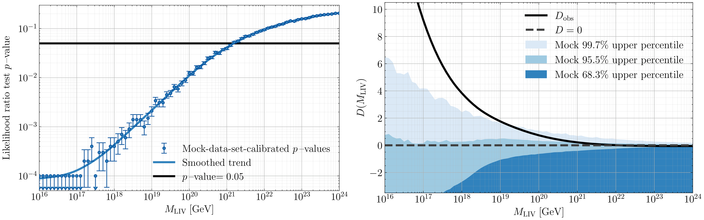
图注：Likelihood-ratio constraint on the LIV scale. Left panel: Points show the \(p\)-values obtained from the mock-data-set calibration described in Sec.~\(\ref{sec:statistics:mock-data-sets}.\) The curve is a smoothing spline used only to guide the eye. The horizontal line marks the 95\% CL exclusion threshold. Values of \(M_{\rm LIV}\) below the crossing are excluded within the present toy-model treatment. Points at the lowest displayed \(p\)-values indicate saturation of our regularized estimate: no mock data set among \(10^{4}\) generated under the tested finite-LIV hypothesis produced a preference for the LI limit as strong as that observed in the data, giving \(p\simeq 10^{-4}\). Right panel: Likelihood-ratio statistic as a function of the LIV scale. The black curve shows the observed statistic \(D_{\rm obs}(M_{\rm LIV})\) defined in Eq.~\(\eqref{eq:lrt-statistic}.\) The blue regions show upper percentiles of \(D(M_{\rm LIV})\) obtained from mock data sets generated under the corresponding finite-LIV hypothesis. The dashed line marks \(D=0\), where the finite-LIV and LI predictions give equal Poisson likelihoods after composition fitting.
对应解读：对应“建议重点查看的图表”第5项和“关键图表逐图导读”图5：\(M_{\rm LIV}\) 的似然剖面或排除曲线，以及模型拟合段落中关于似然统计量和95%置信下限的讨论。
入选理由：这是本文最终物理结论的核心图，直接展示 LIV 尺度的似然比约束、p 值校准、95% CL 阈值以及较小 \(M_{\rm LIV}\) 被排除的读出方式。它最直接支撑日报中关于 \(M_{\rm LIV}>1.5\times10^{21}\\,\mathrm{GeV}\) 灵敏度、曲线交点和有限 LIV 与 LI 模型比较的解读。
来源与置信度：\(arxiv_source\)；high；\(arxiv_source\) / liv-fd.tex:figure[3]
Fig02
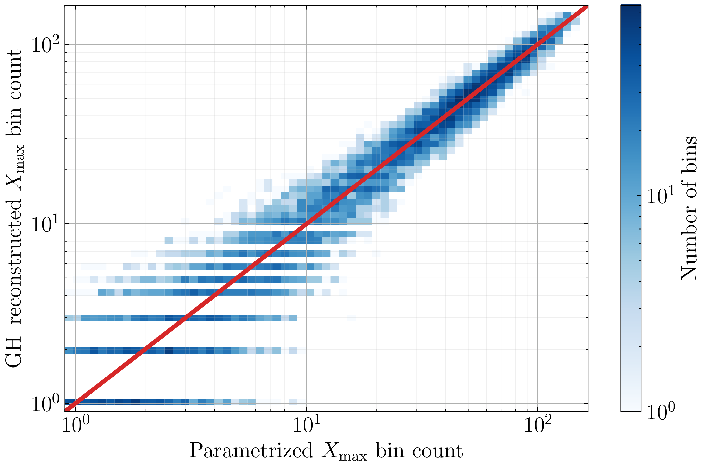
图注：Agreement between the analytical and simulated \(X_{\max}\) distributions. The blue color scale shows a two-dimensional histogram of bin-count pairs collected over all \(X_{\max}\) bins. The horizontal axis gives the expected number of events in a bin predicted by the generalized-Gumbel parametrization, while the vertical axis gives the corresponding empirical number of events obtained from the Gaisser--Hillas reconstruction of the simulated CONEX profiles. Only bins with at least one reconstructed entry are included. The red line indicates exact agreement.
对应解读：对应“建议重点查看的图表”第2项以及模型拟合段落中关于完整 \(X_{\max}\) 分布模板、模拟模板统计和参数化可靠性的讨论。
入选理由：虽然它不是直接的数据-模型对比图，但它检验了广义 Gumbel 参数化对模拟 \(X_{\max}\) 分布的再现能力。本文后续用这些解析化模板进入似然拟合，因此该图能支撑日报中关于不能只看均值、必须依赖完整分布形状和深尾部模板可靠性的说明。
来源与置信度：\(arxiv_source\)；high；\(arxiv_source\) / liv-fd.tex:figure[2]
Fig01
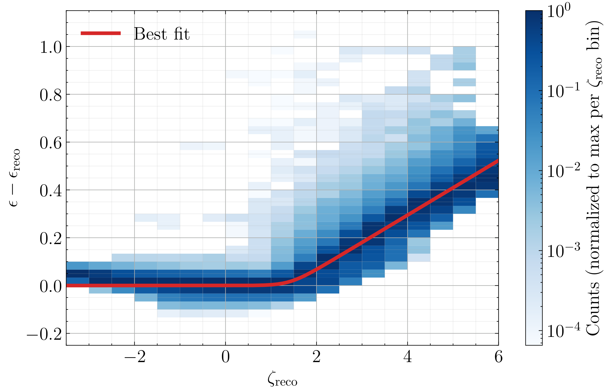
图注：Reconstructed-energy bias in the LIV simulations as a function of \(\zeta_{\rm reco}\). The blue color scale shows a column-normalized two-dimensional histogram of simulated EASs in the \((\zeta_{\rm reco},\,\epsilon-\epsilon_{\rm reco})\) plane. In each \(\zeta_{\rm reco}\) bin, the bin counts are normalized to the maximum count in the corresponding vertical slice. The solid red curve shows Eq.~\(\eqref{eq:energy-bias}\) with the best-fit parameters.
对应解读：对应“建议重点查看的图表”第3项和模型拟合段落中关于探测器响应、重建能量偏差及响应参数化简化可能影响 LIV 约束的讨论。
入选理由：该图展示 LIV 模拟中的重建能量偏差随 \(\zeta_{\rm reco}\) 的变化，并给出经验公式拟合。虽然它不是直接的 Bethe–Heitler 抑制图或 \(X_{\max}\) 响应卷积图，但能说明作者如何处理重建层面的偏差，是理解 toy analysis 与真实探测器级分析差异的重要辅助图。
来源与置信度：\(arxiv_source\)；high；\(arxiv_source\) / liv-fd.tex:figure[1]
Fig04
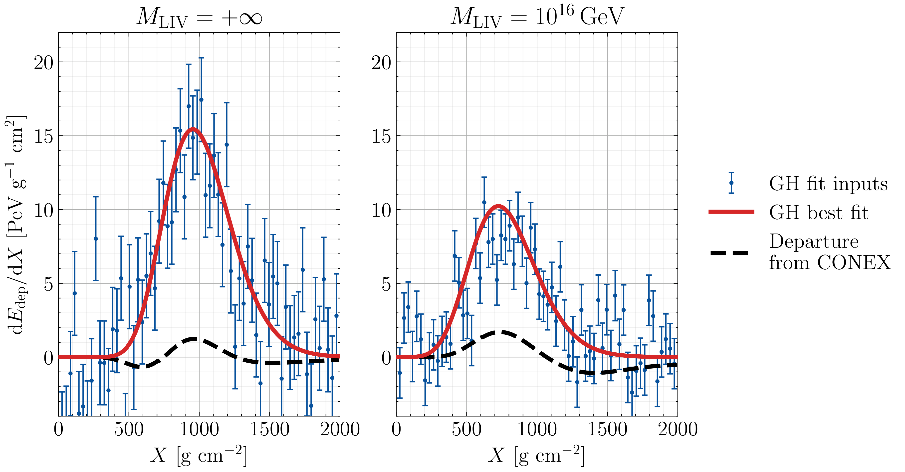
图注：Examples of Gaisser--Hillas profile reconstruction for \({}^{1}{\rm H}\)-induced EASs with primary energy \(E=10^{19}\,\text{eV}\) in the LI case (left) and the LIV case (right). Blue points with error bars represent the fluctuated profile realizations used in the fits. The fluctuated data set is downsampled for illustrative clarity. Solid red curves correspond to the best-fit profiles. Dashed black curves show the deviations of the best-fit profiles from the corresponding CONEX bin-centered profiles.
对应解读：对应详细解释中关于空气簇射模拟、Gaisser--Hillas 重建以及从模拟剖面得到 \(X_{\max}\) 的方法说明。
入选理由：该图只是展示单个质子诱发簇射在 LI 与 LIV 情况下的 Gaisser--Hillas 剖面重建示例，科学结论不如似然约束和 \(X_{\max}\) 模板验证直接。但它有助于读者理解模拟剖面如何被重建成用于后续 \(X_{\max}\) 分布分析的输入。
来源与置信度：\(arxiv_source\)；high；\(arxiv_source\) / liv-fd.tex:figure[4]
强相关工作
这篇工作与两条文献线相连。第一条是用超高能光子或伽马射线约束洛伦兹不变性破缺，例如基于光子衰变、真空双折射、飞行时间延迟、\(\gamma\gamma\) 吸收阈值和大气簇射发展的研究。本文最接近的是“亚光速光子导致 Bethe–Heitler 对产生被抑制，从而改变超高能光子簇射”的工作；区别在于本文把探针从原初光子换成强子簇射中的电磁分量。检索关键词可用："Lorentz invariance violation Bethe Heitler air shower", "subluminal photon LIV ultra high energy cosmic rays", "LIV photon induced air showers"。
第二条是 Pierre Auger 的 \(X_{\max}\) 组分分析和分布拟合文献。Auger 早已用 \(\langle X_{\max}\rangle\)、\(\sigma(X_{\max})\) 以及完整 \(X_{\max}\) 分布讨论超高能宇宙线质量组分，并强调结果依赖强子相互作用模型。本文是在这些公开分布上叠加一种基础物理效应，因此与传统组分分析既互补又存在张力：任何 LIV 信号都可能被误认为组分或强子模型变化，反过来任何组分先验也会影响 LIV 约束。检索关键词可用："Pierre Auger Xmax distributions mass composition", "Auger depth of shower maximum distributions", "hadronic interaction model Xmax composition"。
相关的相反观点或张力主要来自系统误差解释。若未来完整 detector-level 分析发现 \(X_{\max}\) 分布可由标准物理加更灵活组分或强子模型完全解释，则本文 toy 下限可能变弱；若多观测量联合拟合仍需要类似电磁级联延迟，则 LIV 或其他新电磁过程会更受关注。应同时检索超高能光子上限、Auger 和 Telescope Array 组分差异、以及 hadronic-interaction 模型对 muon excess 的解释。
同一事件 / 同类源线索：
相似工作：
基础理论 / 方法工作：
- https://arxiv.org/abs/hep-ph/9812418
- https://arxiv.org/abs/astro-ph/0212190
- https://arxiv.org/abs/0801.0287
相反观点 / 张力线索：
6. Dissecting the Nuclear Structure of NGC 5548 with XRISM. I. Physical Properties of the Highly Ionized Outflows
- 来源：arXiv / astro-ph.HE
- 链接：https://arxiv.org/abs/2608.05098v1
- 作者：Missagh Mehdipour, Jon M. Miller, Jelle S. Kaastra, Gerard A. Kriss, Keigo Fukumura, Liyi Gu, Doyee Byun, Xin Xiang
- 评分：novelty 8/10，importance 8/10，relevance 7/10，final 8.65/10
- 推荐理由：XRISM/Resolve首次在NGC 5548中解析Fe XXV/XXVI高电离外流，给出多相AGN风的精细物理图像；X射线AGN高分辨率谱学重要，虽非伽马射线核心主题但值得读。
中文题目：用 XRISM 解剖 NGC 5548 核区结构（一）：高电离外流的物理性质
做了什么：这篇文章用 XRISM 的 Resolve 微量热计首次在经典 Seyfert 1 星系 NGC 5548 的 Fe K 波段清楚分辨出高电离外流，核心证据是 Fe XXV 和 Fe XXVI 吸收线。作者把 XRISM/Resolve 的高分辨 X 射线谱与 XMM-Newton/RGS 的软 X 射线谱联合建模，分解出 4 个电离组分，其中 3 个还需要两个速度子组分；外流速度约为 \(240\) 到 \(2730\,\mathrm{km\,s^{-1}}\)，电离参数覆盖 \(\log \xi\simeq 0.9\) 到 \(3.4\)。主要结论是：NGC 5548 的暖吸收体不是单一连续风，而是多相、团块化、可能由多种驱动机制共同产生的“混合风”。
为什么重要：NGC 5548 是 AGN 暖吸收体研究的基准源之一，过去已有大量 UV 和软 X 射线观测，但高电离 Fe K 外流一直缺少足够清楚的谱线诊断。XRISM/Resolve 在 \(6\) 到 \(7\,\mathrm{keV}\) 附近提供了比 CCD 谱好得多的能量分辨率，使 Fe XXV 与 Fe XXVI 吸收线可以直接用于测量高电离气体的速度、柱密度和电离结构。这让我们能把软 X 射线暖吸收体、UV 吸收线和 Fe K 高电离风放在同一物理框架里比较。
理论 / 观测 / 仪器方法价值：对理论而言，本文给出了外流柱密度、速度和电离参数随 \(\xi\) 的系统趋势，可用于检验热风、辐射压线驱动、磁流体风以及混合风模型。对观测而言，它展示了 XRISM/Resolve 如何把 AGN Fe K 吸收从“是否存在一条线”推进到“分解多电离、多速度组分”。对方法而言，文章的联合谱拟合和吸收测度分布 \(\mathrm{AMD}\) 重建，是未来 Athena/X-IFU、Arcus 或 Lynx 类任务研究 AGN 风的近场示范。
为什么应该关注：如果你关心 AGN 反馈，本文重要之处不在于发现了一个最快的超快外流，而在于它把一个长期研究的低红移 AGN 的外流层析做得更细：低电离 UV/软 X 射线吸收体和高电离 Fe K 吸收体既有重叠又有偏离。这个结果提醒我们，简单把所有吸收线归入一条稳态径向风可能会误判质量外流率、动能功率和风的发射半径。
展开详细解读：文章讲解、背景、理论、重点章节、图表与相关工作
文章详细讲解
科学问题：NGC 5548 是最常被用来研究 Seyfert 1 暖吸收体和遮蔽事件的 AGN 之一。过去 UV 和软 X 射线观测已经显示其核区有多速度、多电离态的外流，但 Fe K 波段的高电离部分长期受限于 CCD 能谱分辨率，难以确定 Fe XXV 与 Fe XXVI 吸收线是否存在、速度是多少、是否与软 X 射线暖吸收体连续相连。本文要回答的是：NGC 5548 的核区外流是否包含可被 XRISM 分辨的高电离 Fe K 组分？这些组分与较低电离的 RGS/UV 吸收体是否属于同一风结构？
作者怎么做：作者分析了 XRISM 对 NGC 5548 的观测，重点利用 Resolve 微量热计在 Fe K 波段的高谱分辨能力，同时引入 XMM-Newton/RGS 的软 X 射线数据来约束低到中等电离吸收。谱模型包括连续谱、可能的发射成分、银河吸收以及多组分光电离吸收体。每个吸收组分通常由电离参数 \(\xi\)、氢柱密度 \(N_{\mathrm H}\)、速度位移 \(v\) 和湍动展宽等参数描述。作者不仅拟合单个离子线，还用物理一致的光电离模型同时解释多条谱线。
关键结果：XRISM/Resolve 在 Fe K 波段探测到 Fe XXV 和 Fe XXVI 吸收线，从而首次在 NGC 5548 中明确揭示高电离外流。联合拟合给出 4 个不同电离组分，\(\log \xi\) 从约 \(0.9\) 到 \(3.4\)，其中 3 个电离组分还需要分裂成两个速度子组分。外流速度从约 \(240\) 到 \(2730\,\mathrm{km\,s^{-1}}\)，并且总体上显示 \(N_{\mathrm H}\) 随 \(\xi\) 增大而增大、速度也随 \(\xi\) 增大而增大的趋势。作者进一步重建吸收测度分布 \(\mathrm{AMD}\)，发现 \(\log \xi\sim 2.6\) 上下的斜率不同，说明电离结构不是简单的单幂律。
局限和下一步：本文的结论仍依赖光电离平衡、谱连续谱分解和吸收体几何假设。XRISM 给出了关键的 Fe K 诊断，但单次观测难以区分风的时间演化、视线穿过的团块变化和真实径向结构。下一步需要多历元 XRISM、同步 UV 和 X 射线监测，以及把线轮廓、响应时延和光电离模型联合起来，才能把 \(N_{\mathrm H}\)、\(v\)、\(\xi\) 转化为更可靠的半径、质量外流率和动能功率。
关键结果是怎么做出来的
本文最重要的证据链从样本选择开始：对象不是盲搜样本，而是 NGC 5548 这个有长期 UV、软 X 射线和遮蔽历史的原型 Seyfert 1 星系。选择它的优势是系统资料丰富，RGS/HST 已经给出低电离和中等电离吸收的参照；风险是源状态复杂，历史上出现过遮蔽流和变化的吸收结构，因此不能把一次 XRISM 观测简单解释为长期平均结构。
数据上，关键新增信息来自 XRISM/Resolve 的 Fe K 波段谱。Resolve 的能量分辨率足以把 CCD 中可能混合成宽残差的 Fe XXV 与 Fe XXVI 吸收特征变成可定位的窄线或线群。作者把 Fe K 区域的吸收线位置同源红移和离子静止能量比较，得到视线外流速度；再用光电离吸收模型将线深和多离子约束转换成 \(N_{\mathrm H}\) 与 \(\xi\)。RGS 数据则补充软 X 射线中 O、Ne、Mg、Si 等离子的吸收约束，避免只靠 Fe K 两三条线过度解释。
统计上，核心不是单纯报告某条线的等效宽度，而是比较加入不同吸收组分后的拟合改善、残差消失情况和参数置信区间。4 个电离组分的提出来自宽电离范围内谱线无法被一个或两个单一 \(\xi\) 组分同时解释；其中 3 个组分还需要两个速度子组分，则来自同一电离层中谱线中心或轮廓不满足单速度模型。读者应重点检查 Fe K 残差图、联合谱拟合表、\(N_{\mathrm H}\)-\(\xi\) 或 \(v\)-\(\xi\) 趋势图，以及 \(\mathrm{AMD}\) 图。
显著性和稳健性方面，窄线搜寻常见问题是试验因子、连续谱误差和仪器响应局部结构。本文的说服力来自 Fe XXV/Fe XXVI 的物理成对出现、与低能吸收模型的联合一致性，以及高分辨仪器对线心的约束。仍需注意的是，如果连续谱反射、宽 Fe K 发射或局部背景处理不同，Fe K 吸收深度可能变化；如果湍动速度或元素丰度固定不当，\(N_{\mathrm H}\) 与 \(\xi\) 也会发生相关偏移。
本文结果由多张诊断图共同支撑：一类图展示 Resolve 谱中 Fe K 吸收线及模型残差；一类图展示 RGS 与 Resolve 联合拟合后的全谱一致性；一类图展示不同电离组分的速度与柱密度；还有一类图展示 \(\mathrm{AMD}\) 在 \(\log \xi\sim 2.6\) 的斜率变化。若这些图中高电离点的误差条很大，或趋势主要由一个组分驱动，则“混合风”解释会更弱；若不同拟合设定下趋势保持，结论就更稳固。
展开背景、理论、公式、模型、章节和图表导读
背景知识
NGC 5548 是低红移 Seyfert 1 星系，也是 AGN 可变吸收研究的经典源。它有明亮的宽线区、强烈的 X 射线连续谱变化、长期的 UV 吸收线监测记录，以及历史上著名的遮蔽事件。正因为它既近又亮，研究者可以在 UV、软 X 射线和硬 X 射线波段分别看到不同电离态气体对中心辐射的响应。
AGN 暖吸收体通常指在软 X 射线中产生 O VII、O VIII、Ne、Mg、Si、S 等吸收线的光电离气体。它们的速度一般为几百到几千 \(\mathrm{km\,s^{-1}}\)，慢于典型超快外流 \(v\sim 0.1c\)，但在许多 Seyfert 中覆盖因子大、持续时间长，可能在长期反馈中不可忽略。NGC 5548 的暖吸收体曾被分成多个电离和速度组分，但这些分解受限于不同仪器、不同历元和不同波段的交叉校准。
Fe K 高电离吸收则追踪更高 \(\xi\) 的气体，常由 Fe XXV 和 Fe XXVI 产生。由于这些离子的 K 壳层跃迁位于几 \(\mathrm{keV}\) 能段，过去主要由 CCD 或光栅在有限信噪比下探测，线心、线宽和多组分分裂较难可靠测定。XRISM/Resolve 的价值正在于把 Fe K 区的分辨率提升到可做速度诊断的水平，让高电离外流不再只是模糊残差。
为什么现在值得重新看？一方面，XRISM 是 Hitomi 之后首个重新提供天体 X 射线微量热计高分辨谱的任务，适合检验经典 AGN 的老问题。另一方面，AGN 反馈理论越来越需要把“风在哪里、质量多少、能量多少”从参数化假设变成观测约束。NGC 5548 这种有长期历史资料的源，能把新 Fe K 结果与已有 UV/RGS 结果直接比较。
该领域常见误区包括：把所有吸收线都看成同一均匀云的不同离子；把速度随电离增大简单解释为单一径向加速；把 \(N_{\mathrm H}\) 和 \(\xi\) 的拟合值直接转成质量外流率而忽略半径不确定性；以及把不同历元 UV 与 X 射线吸收强行一一对应。本文的“多相、团块、混合风”图像正是对这些过度简化的修正。
基础理论 / 方法脉络
基本物理图像是：AGN 中心连续谱照亮周围气体，气体中不同离子对特定能量的光子产生束缚-束缚和束缚-自由吸收。若气体沿视线向外运动，吸收线相对于宿主星系静止系发生蓝移；蓝移大小给出视线速度。Fe XXV 与 Fe XXVI 分别对应氦样铁和氢样铁，要求较高的电离参数，因此它们比 O、Ne 等软 X 射线离子更接近高电离相。
光电离外流的核心量是电离参数 \(\xi\)，通常定义为电离光度与气体密度和距离平方的比值。\(\xi\) 越高，气体中高电离离子比例越大。观测上，一个 \(\xi\) 并不直接被仪器读出，而是通过一组离子吸收线的相对强度拟合得到。若只看到 Fe XXV/Fe XXVI，\(\xi\) 会与 \(N_{\mathrm H}\)、湍动速度、丰度和连续谱形状发生退化；加入 RGS 的软 X 射线离子可显著缓解这种退化。
本文使用的模型假设可以概括为多层光电离吸收体。每一层有自己的 \(N_{\mathrm H}\)、\(\xi\)、速度 \(v\) 和线宽参数，照亮它们的是同一 AGN 谱能量分布或近似连续谱。多速度子组分意味着同一电离范围的气体可能由多个云团或流线贡献，而不是一块单速度壳层。\(\mathrm{AMD}\) 则把柱密度如何随 \(\xi\) 分布表示出来，是连接离散拟合组分和连续风结构的工具。
观测方法上，Resolve 负责 Fe K 高电离诊断，RGS 负责软 X 射线低中电离诊断。模型需要经过仪器响应卷积后才能同计数谱比较，因此窄线是否显著不只取决于等效宽度，还取决于有效面积、能量分辨率、背景、曝光和局部连续谱。对专业读者来说，最应关注的是吸收线残差是否在多个合理连续谱模型下仍存在，以及不同仪器之间的交叉归一化是否会改变电离结构。
常见系统误差包括：连续谱与反射成分分解不唯一、Fe K 宽发射翼对吸收线基线的影响、光电离网格假设的谱能量分布误差、元素丰度固定带来的柱密度偏差、以及不同历元 RGS 与 XRISM 数据的源状态差异。速度和 \(\xi\) 的表观相关也可能来自选择效应：高 \(\xi\) 组分只有在 Fe K 足够深时才被发现，低 \(\xi\) 组分则主要由软 X 射线线群决定。
公式与推导
第一步是从光电离平衡的量纲估计出发。电离参数定义为
其中 \(L_{\rm ion}\) 是通常在 \(1\) 到 \(1000\,\mathrm{Ryd}\) 的电离光度，\(n\) 是氢数密度，\(r\) 是吸收体到中心源的距离。这个式子说明，在同一照明场下，高 \(\xi\) 可以来自更小的 \(r\)、更低的 \(n\)，或二者组合，因此仅凭 \(\xi\) 不能唯一定位气体。
第二步把柱密度与几何厚度联系起来：
这里 \(dl\) 是视线路径元，\(\Delta r\) 是吸收层厚度。若假设 \(\Delta r 这个不等式常被用来把谱拟合得到的 \(N_{\rm H}\) 和 \(\xi\) 转成粗略位置约束，但它依赖薄壳假设。 第三步，外流速度由吸收线能量位移给出。对非相对论速度近似， 其中 \(E_0\) 是离子跃迁静止能量，\(E_{\rm obs}\) 是观测能量，\(z_{\rm sys}\) 是宿主星系红移，\(v>0\) 表示蓝移外流。对 \(v\sim 10^3\,\mathrm{km\,s^{-1}}\) 的暖吸收体，非相对论近似足够。 第四步，单条未饱和吸收线的光学深度可写成 其中 \(N_i\) 是某离子的柱密度，\(f_{lu}\) 是振子强度，\(\phi(\nu)\) 是归一化线型函数。线深由 \(N_i\) 与线宽共同决定，因此窄而饱和的线可能与较宽、较低柱密度的线在低分辨谱中退化。 第五步，离子柱密度与总氢柱密度通过离子分数和丰度相连： 其中 \(A_Z\) 是元素丰度，\(f_i(\xi)\) 是光电离模型给出的离子分数。Fe XXV 与 Fe XXVI 同时出现时，可用它们的相对强度限制 \(\xi\)，因为二者的 \(f_i(\xi)\) 峰值不同。 第六步，吸收测度分布定义为 离散组分拟合可近似为 本文发现 \(\log \xi\sim 2.6\) 上下斜率不同，意味着 \(\mathrm{AMD}\) 不能用单一幂律在全范围内描述。 第七步，若估算质量外流率，常用薄壳或锥形风近似： 其中 \(C_\Omega\) 是全局覆盖因子，\(\mu m_p\) 是平均粒子质量，\(r\) 是特征半径。由于 \(r\) 与 \(C_\Omega\) 往往不确定，\(\dot M_{\rm out}\) 通常比 \(N_{\rm H}\)、\(\xi\)、\(v\) 更模型依赖。 第八步，相应动能功率为 这个量用于评估 AGN 反馈，但对本文这类 \(v\sim 10^3\,\mathrm{km\,s^{-1}}\) 的外流，是否能影响宿主星系取决于真实半径、覆盖因子和持续时间。 第九步，谱拟合的基本统计量可写作泊松似然： 其中 \(C_j\) 是第 \(j\) 个能道的观测计数，\(M_j\) 是经过响应卷积后的模型计数。加入一个吸收组分是否必要，可用 \(\Delta C\) 或 \(\Delta \chi^2\) 的改善、模拟校准的试验因子和残差结构共同判断。 第十步，仪器响应把真实光子谱变成计数谱： 其中 \(t_{\rm exp}\) 是曝光，\(R_j(E)\) 是能量重分布，\(A_{\rm eff}(E)\) 是有效面积，\(F_E(E)\) 是入射能谱，\(B_j\) 是背景。Resolve 的高分辨率意味着窄吸收线在 \(R_j(E)\) 卷积后仍保留足够线心信息，这是本文能分解 Fe K 外流的关键。 本文的拟合对象是 XRISM/Resolve 与 XMM-Newton/RGS 的计数谱，而不是直接拟合物理通量点。模型先给出源本征连续谱和发射/吸收成分，再通过各仪器响应矩阵转换成预期计数。核心自由参数包括各吸收组分的 \(N_{\mathrm H}\)、\(\xi\)、速度 \(v\)、湍动速度或线宽，以及连续谱的归一化和形状参数。 参数估计的关键是光电离模型网格。给定谱能量分布和丰度，模型为每个 \(\xi\) 计算离子分数和线/边吸收，然后与观测比较。若使用 \(C\)-stat 或类似泊松统计，窄线的显著性应通过加入组分前后的统计量改善和残差图共同判断。对 Fe K 线尤其要小心局部连续谱：宽 Fe K 发射、反射驼峰和吸收线可能在有限波段内互相补偿。 退化关系主要有几类。第一，\(N_{\mathrm H}\) 与湍动速度退化：线越宽，达到同样等效宽度所需峰值光学深度可不同。第二，\(\xi\) 与谱能量分布退化：不同电离连续谱会改变 Fe XXV/Fe XXVI 的离子分数峰值。第三，速度子组分与线宽退化：两个近邻窄速度组分在信噪比较低时可能被拟合成一个较宽组分。第四，跨仪器联合拟合中，交叉归一化和非同步源状态会影响软 X 射线与 Fe K 组分的相对权重。 残差诊断应分层看。先看不含高电离吸收时 Fe K 附近是否存在系统性负残差；再看加入 Fe XXV/Fe XXVI 对应光电离组分后，残差是否在正确能量同时消失；最后看软 X 射线线群是否仍需要独立低电离组分。如果一个组分只由单个能道或单条线驱动，它的物理解释应更保守；如果多个离子、多个波段共同要求它，则可信度更高。 模型可能失败的地方也很明确。若吸收体不是光电离平衡，而是在快速变化辐射场中有非平衡响应，单一 \(\xi\) 模型会偏差。若视线穿过团块边缘，部分覆盖和速度剪切会让线型偏离简单高斯或 Voigt 轮廓。若风有明显发射填充，纯吸收模型会低估真实柱密度。实际应用中，本文提供的组分表可作为后续时变光电离、MHD 风模拟和 AGN 反馈能量预算的输入，但不宜直接把所有组分放在同一半径上计算总功率。 数据和观测部分应先读。重点看 XRISM/Resolve 的曝光、能段筛选、背景处理、能量标定和与 XMM-Newton/RGS 的配合方式。对 Fe K 吸收线工作而言，能量标定和局部响应比宽带通量本身更关键。 谱模型部分是第二个重点。读者应弄清楚作者采用了哪些连续谱成分、如何处理银河吸收和宿主吸收、光电离吸收表格如何生成，以及每个吸收组分的自由参数是什么。尤其要注意高电离 Fe K 组分是否由全谱拟合约束，还是主要由局部 Fe K 拟合驱动。 结果部分应围绕 4 个电离组分和速度子组分阅读。建议把表格中的 \(\log \xi\)、\(N_{\mathrm H}\)、\(v\) 与图中的残差对应起来，不要只看最终文字结论。本文声称 \(N_{\mathrm H}\) 随 \(\xi\) 增大、速度大体随 \(\xi\) 增大，读者应检查误差条和组分间是否显著分离。 \(\mathrm{AMD}\) 部分是连接观测和物理解释的核心。这里要看作者如何从离散吸收组分构造 \(dN_{\mathrm H}/d\log \xi\)，以及 \(\log \xi\sim 2.6\) 的斜率改变是否稳健。这个诊断决定了外流是更接近连续热稳定结构，还是由若干离散团块/相组成。 讨论部分要关注与 UV 吸收线的比较和“混合风”解释。作者把 Fe XXV 线型与 HST 的 C IV、Ly\(\alpha\) 吸收作比较，发现既有速度重叠也有偏离。读者应把这一点理解为多相气体在速度空间部分共存，而不是简单的一一对应。 Fe K 波段 Resolve 谱和残差图：看 Fe XXV 与 Fe XXVI 吸收是否位于预期能量，加入高电离吸收组分后负残差是否系统消失。 RGS 软 X 射线谱拟合图：看低/中电离离子线群是否由同一组光电离组分解释，是否存在未拟合的系统残差。 吸收组分参数表：重点检查 \(\log \xi\)、\(N_{\mathrm H}\)、\(v\) 和误差范围，判断 4 个电离组分及速度子组分是否真正分离。 \(N_{\mathrm H}\)-\(\xi\) 趋势图：看柱密度随电离增强的趋势是否由多个点共同支持，还是被最高电离 Fe K 点主导。 \(v\)-\(\xi\) 趋势图：看速度随 \(\xi\) 增大的相关是否超过误差条和速度子组分内部散布。 \(\mathrm{AMD}\) 图：看 \(\log \xi\sim 2.6\) 的斜率转折是否有置信区间支持，以及低 \(\xi\) 和高 \(\xi\) 两侧是否都被足够数据约束。 Fe XXV 与 UV C IV、Ly\(\alpha\) 速度轮廓比较图：看速度重叠区域和偏离区域，避免把不同离子线深直接解释为同一气体柱密度。 稳健性或替代模型表：如果有，应检查去掉某组分、改变连续谱或改变线宽假设后，关键 Fe K 吸收是否仍显著。 图 1：通常应是宽带或分波段谱图。横轴多为能量或波长，纵轴为计数率、通量或数据/模型比。读者应看 XRISM/Resolve 在 Fe K 区域的谱线分辨情况，以及 RGS 在软 X 射线的线群密度。读图陷阱是不要把未卷积模型线当成仪器实际分辨率下的观测线型。 图 2：Fe K 局部放大图最关键。横轴应为源静止系能量，纵轴为计数或残差；模型线可能包含无吸收连续谱、加入 Fe XXV/Fe XXVI 后的最佳拟合。主要结论是高电离吸收线真实存在并给出外流蓝移。陷阱是局部连续谱若画得过平，可能低估宽 Fe K 发射或反射对基线的影响。 图 3：多组分光电离拟合或残差改善图。应关注加入每个吸收组分前后的残差变化，而不是只看最终拟合很平。若某一速度子组分只改善一个窄能量范围，其统计稳健性要比同时改善多条线的组分弱。 图 4：\(N_{\mathrm H}\) 对 \(\xi\) 的关系图。横轴通常是 \(\log \xi\)，纵轴是 \(N_{\mathrm H}\) 或 \(\log N_{\mathrm H}\)。数据点代表不同吸收组分，误差条表示置信区间。主要结论是柱密度总体随电离参数增大。陷阱是不同组分并非同一物理半径上的连续采样，因此相关性不必然等于单一风的径向梯度。 图 5：速度 \(v\) 对 \(\xi\) 的关系图。横轴为 \(\log \xi\)，纵轴为外流速度。读者应检查两个速度子组分是否在每个电离层内都存在，以及高 \(\xi\) 点是否系统更快。陷阱是投影效应和选择效应可制造表观相关。 图 6：\(\mathrm{AMD}\) 图。横轴是 \(\log \xi\)，纵轴是 \(dN_{\mathrm H}/d\log \xi\)。若图中有分段幂律或斜率标注，应看 \(\log \xi\sim 2.6\) 两侧斜率是否显著不同。陷阱是 \(\mathrm{AMD}\) 的分辨率受光电离网格和可见离子分布限制，不等同于真实连续介质的直接成像。 图 7：X 射线 Fe XXV 与 UV C IV、Ly\(\alpha\) 线型比较图。横轴多为速度，纵轴为归一化通量或光学深度。主要看不同离子是否在某些速度区间重合，以及是否有 Fe K 独有或 UV 独有的速度成分。陷阱是 UV 线容易饱和和受部分覆盖影响，线深不能直接与 X 射线离子柱密度比较。模型拟合 / 应用方法
重点章节 / 结果段落怎么读
建议重点查看的图表
关键图表逐图导读
论文原图 / 可嵌入图片
Fig04
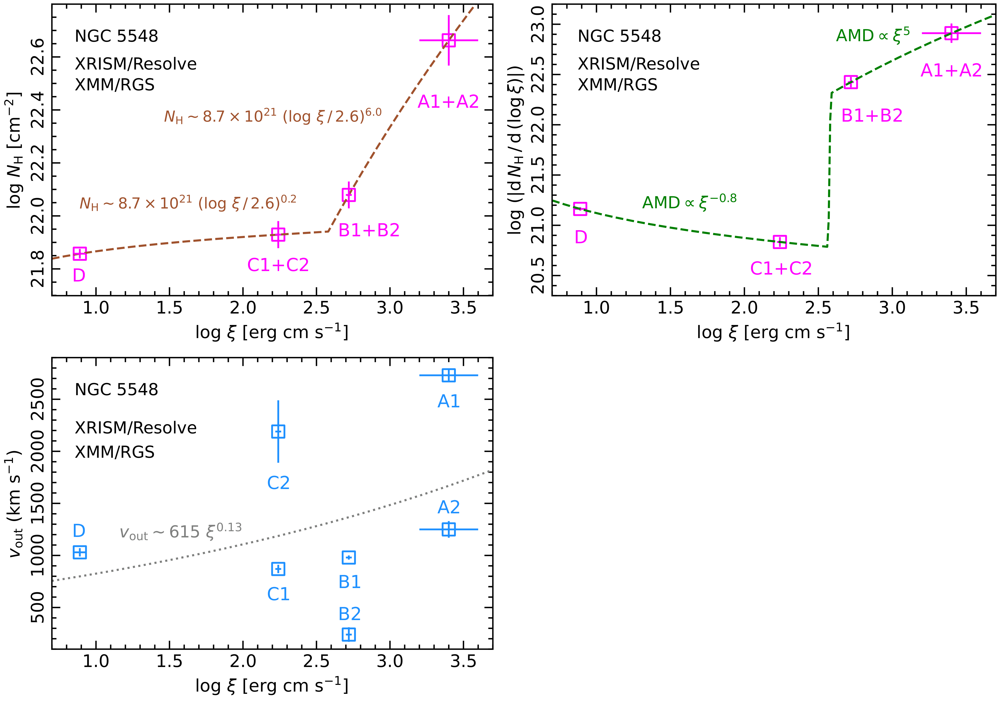
图注：Relations among the ionized outflow parameters (Table~\ref{table_para}) derived from the 2025 \(\xrism/Resolve\) and \(\xmm/RGS\) spectra of \(\ngc.\) The top panel shows the total column density (\NH) as a function of ionization parameter ($\xi$). The middle panel presents the absorption measure distribution (AMD), fitted with a broken power law, showing two distinct slopes above and below ${\log\xi \sim 2.6}$. The bottom panel shows the outflow velocity (\vout) versus $\xi$. Best-fit functions for each panel are indicated in the insets.
对应解读：对应“建议重点查看的图表”第4、5、6项，以及“关键图表逐图导读”图4、图5、图6：\(N_H\)-ξ、v-ξ 与 AMD 斜率转折。
入选理由：这张图同时包含柱密度随电离参数变化、AMD 分段幂律及速度随电离参数变化三项核心诊断，直接支撑日报中关于多电离组分、\(N_H\)-ξ 趋势、v-ξ 趋势和 logξ≈2.6 处 AMD 斜率改变的主要科学解读，科学信息密度最高。
来源与置信度：\(arxiv_source\)；high；\(arxiv_source\) / \(NGC5548_XRISM_v9.tex\):figure[4]
Fig02
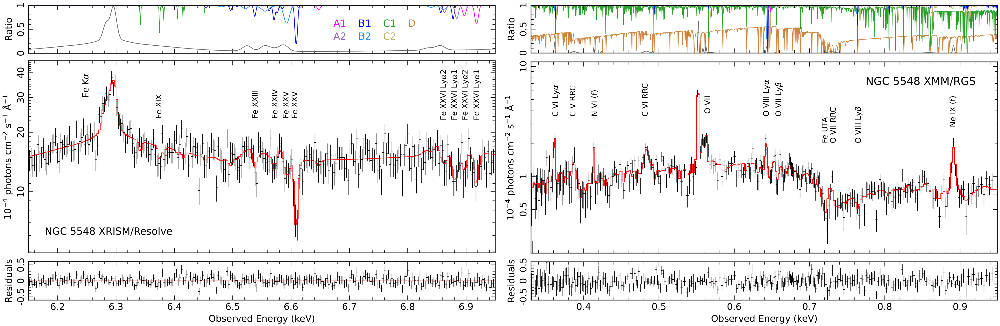
图注：XRISM/Resolve (top) and XMM/RGS (bottom) spectra of \(\ngc\) with the best-fit model (red; Tables~\(\ref{table_cont}\) and \ref{table_para}). Panels show close-ups of the strongest emission and absorption features. Spectra are binned for clarity. Fit residuals are defined as (data $-$ model)/model. Individual outflow components and their labels (Table~\ref{table_para}) are shown in the top panels, with the total emission line model overplotted in gray for reference.
对应解读：对应“建议重点查看的图表”第1、2项，以及“关键图表逐图导读”图2、图3：Fe K 局部谱线、RGS 软 X 射线线群和残差/组分标注。
入选理由：该图给出 XRISM/Resolve 与 XMM/RGS 的关键谱线局部放大，并标出各外流组分及残差，是判断 Fe XXV/Fe XXVI 吸收线位置、蓝移和多组分光电离模型是否真正改善拟合的最直接图像证据。
来源与置信度：\(arxiv_source\)；high；\(arxiv_source\) / \(NGC5548_XRISM_v9.tex\):figure[2]
Fig03
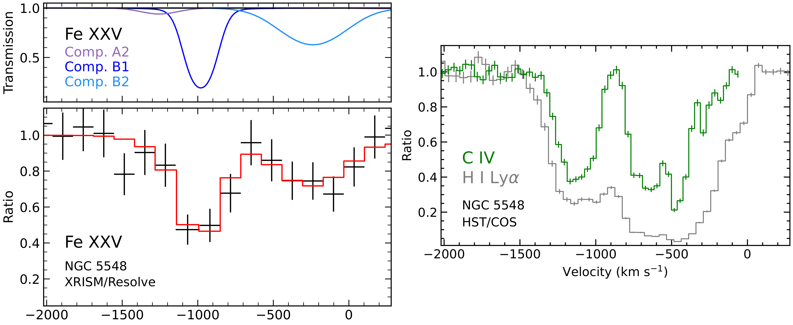
图注：Absorption profile of the \(\fexxv\) resonance line in the \(\xrism/Resolve\) spectrum compared to \(\lya\) and \(\civ\) in the 2025 HST COS spectrum. The data are normalized to the continuum, showing the flux ratio on the y-axis. The red model in the middle panel corresponds to the best-fit model shown in Fig.~\(\ref{fig_spec},\) with parameters listed in Table~\(\ref{table_para}.\) The top panel illustrates the contribution of individual model components to the \(\fexxv\) absorption. Negative velocities correspond to outflow, and zero velocity is defined in the \(\ngc\) rest frame at the wavelengths of the lines: \(\fexxv\) 1.8504~\AA\ (6.7004~keV), \(\civ\) 1548.19~\(\AA,\) and \(\ion{H}{1}\) \(\lya\) 1215.67~\(\AA.\)
对应解读：对应“建议重点查看的图表”第7项，以及“关键图表逐图导读”图7：Fe XXV 与 UV C IV、Lyα 速度轮廓比较。
入选理由：这张图直接比较 X 射线 Fe XXV 与 HST/COS UV 线的速度轮廓，可检验不同离子在速度空间的重合与偏离，是日报中讨论多相、团块化外流以及避免把 UV 线深直接等同于 X 射线柱密度的重要依据。
来源与置信度：\(arxiv_source\)；high；\(arxiv_source\) / \(NGC5548_XRISM_v9.tex\):figure[3]
Fig01
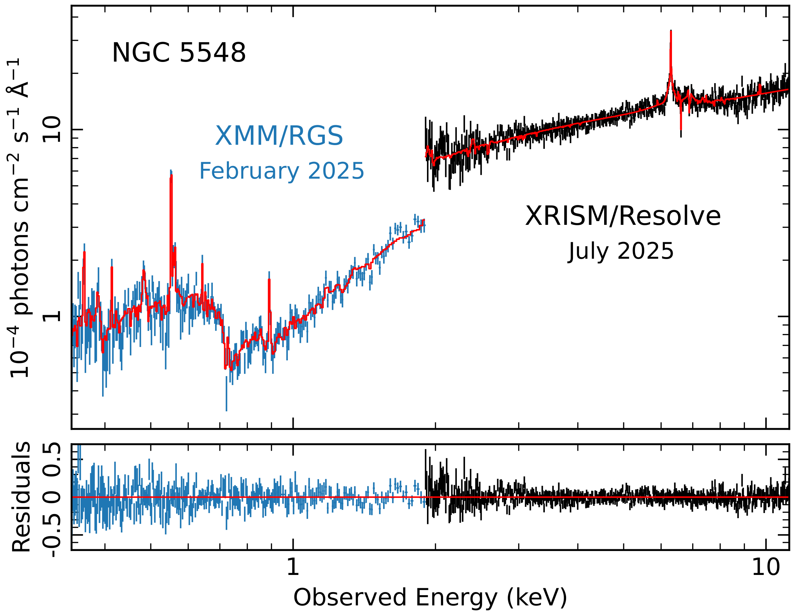
图注：Overview of the \(\xrism/Resolve\) and \(\xmm/RGS\) spectra of \(\ngc,\) along with our best-fit model. For clarity, the spectra have been further binned. The best-fit model (Tables~\(\ref{table_cont}\) and \ref{table_para}), fitted across the full spectral ranges of Resolve and RGS, is shown in red. Residuals are plotted as (data $-$ model) / model.
对应解读：对应“建议重点查看的图表”第1、2项，以及“关键图表逐图导读”图1：Resolve 与 RGS 宽波段谱和全局最佳拟合残差。
入选理由：该图展示 XRISM/Resolve 和 XMM/RGS 的全谱概览及全局残差，适合放在解读开头说明联合拟合的数据基础和总体拟合质量；虽然不如局部放大图和参数关系图直接，但能帮助读者理解 Fe K 与软 X 射线诊断来自同一套全波段模型。
来源与置信度：\(arxiv_source\)；high；\(arxiv_source\) / \(NGC5548_XRISM_v9.tex\):figure[1]
强相关工作
这篇工作属于 NGC 5548 同一源的长期观测链条，而不是孤立发现。应把它与 HST/COS 和 XMM-Newton/RGS 对 NGC 5548 暖吸收体、2013 年左右遮蔽事件、以及长期 reverberation mapping 结果一起阅读。检索关键词可用 “NGC 5548 warm absorber”, “NGC 5548 obscurer”, “NGC 5548 HST COS absorption”, “NGC 5548 XMM RGS warm absorber”, “NGC 5548 XRISM Resolve Fe K”。
在同类源层面，可与 NGC 3783、Mrk 509、NGC 4051、IRAS 13224-3809 等 AGN 的高分辨 X 射线吸收研究比较。NGC 3783 和 Mrk 509 常被用作多电离暖吸收体模板；超快外流文献则强调更高速度和更高动能功率，可能与本文的 \(10^3\,\mathrm{km\,s^{-1}}\) 级高电离外流属于不同风区或不同驱动机制。检索关键词可用 “AGN warm absorber AMD”, “Fe XXV Fe XXVI absorption Seyfert”, “hybrid AGN wind”, “MHD wind AGN warm absorber”, “radiation driven AGN outflow”。
潜在张力在于风的驱动解释。若速度随 \(ξ\) 增大，被单一辐射驱动加速流、磁离心风或热风都可能部分解释；但 \(\mathrm{AMD}\) 的分段斜率和 UV/X 射线速度不完全对应支持更复杂的多起源图像。反方或替代解释包括：谱线来自不同历元状态下的残留结构、局部连续谱建模导致虚假的高电离吸收、或部分覆盖遮蔽体影响软 X 射线组分分解。读者应检索 “NGC 5548 obscuration campaign”, “AGN absorber partial covering”, “Fe K absorption line significance trials”。
同一事件 / 同类源线索：
- https://arxiv.org/abs/2608.05098
- https://arxiv.org/pdf/2608.05098
- https://www.cosmos.esa.int/web/xmm-newton
- https://xrism.isas.jaxa.jp/en/
相似工作：
基础理论 / 方法工作：
- https://arxiv.org/abs/astro-ph/0311058
- https://arxiv.org/abs/astro-ph/0409457
- https://arxiv.org/abs/1204.4440
相反观点 / 张力线索：
7. Type I X-Ray Burst Models With Rotation
- 来源：arXiv / astro-ph.HE
- 链接：https://arxiv.org/abs/2608.04617v1
- 作者：David Martin, Jordi Jose
- 评分：novelty 8/10，importance 7/10，relevance 8/10，final 8.65/10
- 推荐理由：首次系统展示旋转及旋转诱导混合对I型X射线暴复现时间、能量和光变形态的关键影响；属中子星热核爆发HE主题，结果清楚且值得关注。
中文题目：包含自转效应的 I 型 X 射线暴模型
做了什么：这篇文章把中子星自转显式加入 I 型 X 射线暴的一维热核爆发模型，不只考虑离心力降低表面有效重力，还加入自转诱导的物质混合，例如子午环流和剪切湍流扩散。作者的核心结论是：快速自转会缩短爆发复发时间、降低单次爆发释放能量，并改变核反应活动层的范围，使快速自转模型的光变曲线更宽。这说明用非自转模型解释快速自转吸积中子星的爆发行为，可能会系统性误判点火深度、燃料组成和吸积率。
为什么重要：I 型 X 射线暴常被用来约束中子星表面重力、半径、吸积率、核反应率和致密物质状态方程，但许多爆发源本身是毫秒级快速自转系统。如果自转能明显改变点火条件和光变形态，那么把观测光变直接套入静态球对称模型会引入物理偏差。这篇工作的重要性在于，它把过去常被作为二阶修正处理的自转，提升为影响爆发时标和能量预算的一阶因素。
理论 / 观测 / 仪器方法价值：对理论模型而言，本文提供了把有效重力和自转混合纳入爆发计算的框架，有助于解释同一吸积率下复发时间和爆发能量的离散性。对观测解释而言，它提醒读者不要把光变变宽、爆发变弱或复发变快全部归因于吸积率变化或燃料金属丰度变化。对核天体物理而言，自转混合会改变燃料预热、氢氦分布和 rp 过程发生区域，因此会影响对核反应网络和灰烬组成的推断。
为什么应该关注：如果你用 X 射线暴来推中子星质量半径、燃烧稳定性边界、核反应率或吸积几何，这篇文章都值得关注。它的直接信息是：自转不是只影响爆发振荡频率的观测标签，也会反馈到热核点火本身。未来把 NICER、INTEGRAL、HXMT、eXTP 或 Athena 类观测与爆发模型连接时，快速自转源可能需要专门的旋转爆发网格，而不能简单借用非旋转模型。
展开详细解读：文章讲解、背景、理论、重点章节、图表与相关工作
文章详细讲解
科学问题：I 型 X 射线暴来自低磁场吸积中子星表面积累的富氢或富氦物质发生热核失稳。传统爆发模型通常以局部平面平行层为近似，用给定的表面重力、吸积率、初始组成和核反应网络来计算点火、爆发和冷却。问题在于，很多爆发源是快速自转的中子星，自转一方面通过离心力降低赤道附近的有效重力，另一方面可通过剪切和大尺度环流改变燃料在深度方向的分布。本文要回答的是：这些自转效应是否足以改变可观测的复发时间、爆发能量和光变形态。
作者怎么做：文章在 I 型 X 射线暴模型中加入了自转相关物理。根据摘要，模型包含离心力导致的表面有效重力降低，并加入一组自转诱导混合机制，包括子午环流和剪切诱导湍流扩散。这里的关键不是仅把重力常数改小，而是让燃料、热量和核反应灰烬在爆发前的积累阶段发生额外输运。这样可以同时影响点火柱深、局部温度剖面、氢氦比例以及爆发期间核反应活跃层的范围。
关键结果：作者报告说，自转会缩短复发时间并降低爆发能量。物理图像是，较低的有效重力改变了压强柱深与几何深度的对应关系，而自转混合把燃料和热量重新分布，使点火条件更早达到或以不同方式达到。快速自转模型的光变曲线更宽，说明自转不只是平移点火时刻，也改变能量释放和冷却的时间结构。摘要还强调，自转会改变爆发期间核活动的空间范围，这意味着核燃烧并非简单发生在与非旋转模型相同的层位。
局限和下一步：从摘要能判断，本文主要是模型开拓型工作，而不是对某一个爆发源的完整贝叶斯反演。需要进一步检查的是：模型是否仍是一维局部计算，自转是否只以有效重力和扩散系数进入，是否忽略纬向温度梯度、科里奥利力对火焰传播的影响以及磁场耦合。下一步最自然的方向是把模型网格与具有已知自转频率、吸积率估计和长时间爆发样本的源逐一比较，并检验复发时间、爆发 fluence、
\(\alpha\) 参数和光变宽度能否同时被解释。
关键结果是怎么做出来的
本文最重要的证据链是比较非旋转模型与包含不同自转强度模型的爆发输出。样本不是观测事件样本，而是一组数值模型；核心可比量应包括爆发复发时间、峰值光度、总辐射能量、光变宽度、点火深度以及核能产生率随深度和时间的分布。读者读文时应优先确认作者固定了哪些外部输入，例如中子星质量、半径、局部吸积率、初始氢氦金属丰度、基底热通量和核反应网络，否则自转效应容易与这些参数混淆。
事件数或样本量在这里对应模型网格数量，而不是望远镜探测到的爆发个数。关键是模型是否覆盖从慢转到快速毫秒自转的范围，并且是否把离心力单独打开、自转混合单独打开、二者同时打开进行对照。如果有这样的消融实验，最能支持“自转是关键因素”的说法；如果只有旋转与非旋转总效果比较，则需要谨慎区分有效重力降低和混合输运各自贡献。
显著性在这类理论论文中通常不是以观测
\(p\) 值给出，而是通过相对于模型内部数值误差和物理参数变化幅度的系统性趋势来判断。读者应该看复发时间和爆发能量随自转频率是否单调变化，变化幅度是否大于改变网格分辨率、时间步长、边界条件或混合参数带来的差异。若论文给出表格，表中复发时间、爆发能量和峰值光度的相对变化比单张光变图更能定量说明结论。
支撑结论的图表应包括三类：第一类是不同自转频率下的光变曲线，验证快速自转模型是否真的更宽；第二类是点火前温度、密度、组成随柱深的剖面，验证自转混合如何改变燃料层；第三类是核能产生率或主要同位素丰度的时深图，验证“核活动范围被改变”不是只来自光变拟合。若有残差图或与典型观测源的对比图，读者应检查模型是否同时匹配复发时间和 fluence，而不是只匹配其中一个。
主要系统误差包括自转混合系数的处方、角动量输运假设、核反应率不确定性、基底热流、吸积物组成和一维近似。稳健性检验应至少说明：改变网格分辨率是否影响点火时刻；改变混合效率是否仍保持快速自转导致复发变短和能量变低；只改变有效重力是否能复制全部光变变宽现象。如果不能，才说明混合过程本身是必要物理，而不是单纯的重力标度效应。
展开背景、理论、公式、模型、章节和图表导读
背景知识
I 型 X 射线暴是低质量 X 射线双星中最常见的热核瞬变之一。伴星物质经吸积盘落到中子星表面，形成薄的富氢或富氦燃料层；当压强、温度和燃料量达到临界条件，核燃烧从稳定转为热失稳，释放约 \(10^{39}\) 到 \(10^{40}\,\mathrm{erg}\) 的能量。它们的上升时间通常为秒量级，持续时间为几十秒到百秒量级，复发时间从小时到天不等。
历史上，I 型 X 射线暴模型主要围绕三个问题发展：点火条件、光变形状和核反应路径。早期理论确认氦燃烧的三 \(\alpha\) 反应和热 CNO 循环/rp 过程是关键能量来源；后来观测积累显示，不同源、甚至同一源在不同吸积状态下，复发时间和能量释放有很大差异。为了复现这些差异，模型通常调节局部吸积率、金属丰度、基底热流和核反应率。
自转在爆发研究中并不陌生，但常常出现在另一个语境：爆发振荡。许多源在爆发上升或冷却尾部显示接近中子星自转频率的亮度调制，因此自转被视为诊断热点、火焰传播和中子星半径的工具。不过，爆发振荡并不等于自转只影响观测调制；快速自转还会改变流体平衡、有效重力、剪切和混合，从而影响爆发本身。
为什么现在值得重新看？一方面，长基线 X 射线监测和归档数据已经给出大量复发时间、fluence 和光变形状统计；另一方面，高精度中子星质量半径测量正在把系统误差推到前台。如果模型没有包含自转，却拿来解释毫秒自转中子星的爆发，就可能把自转造成的差异误认为核物理或状态方程信号。
该领域常见误区之一是把所有复发时间变化都归因于吸积率变化。实际上，局部有效重力、燃料混合和基底加热都能改变达到点火条件所需的柱深。另一个误区是认为自转只在二维或三维火焰传播阶段重要；本文强调，即使在爆发前的缓慢积累阶段，自转诱导输运也可能已经改写了燃料层结构。
基础理论 / 方法脉络
最基本的物理图像是薄层热失稳。吸积物在中子星表面以柱深 \(y\) 表示累积，\(y\) 是单位面积上方物质质量。局部压强近似满足静水平衡，因而由表面重力和柱深决定。核反应加热随温度增加很快，而辐射冷却相对较慢；当温度扰动导致加热增长超过冷却增长时，燃烧失稳并形成 X 射线暴。
非旋转模型通常假设表面重力 \(g\) 在局部恒定，燃料层是平面平行的，并用一维热扩散和核反应网络演化温度、密度和组成。观测上可比较的量包括复发时间 \(t_{\rm rec}\)、爆发总能量 \(E_{\rm b}\)、峰值光度 \(L_{\rm peak}\)、光变持续时间和持久辐射到爆发辐射的能量比 \(\alpha\)。这些量不是独立的，它们都受吸积率、燃料组成和点火深度控制。
自转首先改变有效重力。对角速度 \(\Omega\) 的星体，赤道处离心项大致降低局部重力，使同样柱深对应的几何结构和温度压力关系发生变化。更一般地，有效重力随纬度变化，这在一维模型中通常需要选择代表性纬度或采用某种平均近似。若只考虑离心力，主要影响是点火柱深和局部 Eddington 标度；若再加入混合，则影响会深入到组成和热剖面。
自转诱导混合的基础是角速度梯度和热不平衡驱动的环流。子午环流可以在辐射区中缓慢搬运角动量和化学组分，剪切不稳定则可表现为湍流扩散。模型上常把这些过程写成有效扩散系数，使各核素质量分数 \(X_i\) 的演化多出扩散项。这个近似牺牲了多维流体细节，但能把混合对点火条件的累计影响纳入长时间爆发序列计算。
主要退化关系来自以下几组参数：降低 \(g_{\rm eff}\) 与提高局部吸积率都可能缩短 \(t_{\rm rec}\)；增加基底热流与增强混合都可能让燃料层提前点火；改变金属丰度会通过热 CNO 循环影响氢燃烧，也可能模拟部分自转混合效应。因此判定自转的观测价值不在于单个光变形状，而在于能否同时解释复发时间、fluence、\(\alpha\) 参数和光变宽度的联合趋势。
公式与推导
第一步是写出局部柱深定义。若 \(z\) 是向内深度、\(\rho\) 是密度，则
这里 \(y\) 的单位是 \(\mathrm{g\,cm^{-2}}\)，表示单位面积上方压着多少物质。薄层近似下，爆发点火和冷却主要由 \(y\) 而不是几何深度直接标记。
第二步是静水平衡。非旋转局部模型常用
其中 \(P\) 是压强，\(g\) 是表面重力。加入自转后，赤道附近可用近似
其中 \(M\) 和 \(R\) 是中子星质量和半径，\(z_{\rm GR}\) 表示广义相对论红移修正的符号性写法，\(\Omega\) 是角速度，\(\theta\) 是余纬。这个式子说明快速自转首先通过 \(g_{\rm eff}\) 改变点火层的压强标度。
第三步是积累时间。若局部吸积率为 \(\dot m\)，达到点火柱深 \(y_{\rm ign}\) 所需复发时间近似为
因此，只要自转混合或有效重力改变 \(y_{\rm ign}\)，就会直接改变观测复发时间。本文报告的复发时间缩短可理解为旋转模型使有效点火条件在较小累计柱深或较快热演化中达到。
第四步是热演化方程的骨架。单位质量比热为 \(c_P\)，温度为 \(T\)，热通量为 \(F\)，核能产生率为 \(\epsilon_{\rm nuc}\)，冷却和中微子损失合并为 \(\epsilon_\nu\)，则
这里 \(\epsilon_{\rm comp}\) 表示吸积压缩加热。热失稳的直观判据是加热对温度的响应超过冷却响应，即
该判据不是完整数值模型的替代品，但能解释为什么温度剖面的微小改变会显著影响点火。
第五步是把自转混合写入组成方程。对第 \(i\) 个核素质量分数 \(X_i\)，可写成
其中 \(D_{\rm rot}\) 是子午环流、剪切湍流等过程合成的有效扩散系数。这个式子是本文物理的核心桥梁：旋转不仅改变力平衡，还通过 \(D_{\rm rot}\) 改变化学分层和燃料供应。
第六步是爆发能量。若每个核子释放核能 \(Q_{\rm nuc}\)，辐射面积为 \(4\pi R^2\)，红移因子为 \(1+z\)，则观测到的爆发能量近似为
若旋转使 \(y_{\rm ign}\) 变小，且燃料组成或燃烧完整性也被混合改变，\(E_{\rm b,\infty}\) 就会降低，这正对应摘要中的主要结论。
第七步是光变与通量。模型光度到观测通量的基本关系为
其中 \(d\) 是距离，\(\xi_b\) 是爆发辐射各向异性因子。光变变宽可以用例如
表征，\(\tau_{\rm b}\) 越大表示在相同峰值附近能量释放或冷却更分散。快速自转模型若降低 \(L_{\rm peak}\) 或延长冷却尾部，都会提高这种宽度指标。
第八步是观测诊断量 \(\alpha\)。持久辐射 fluence 与爆发 fluence 的比值常写为
其中 \(F_{\rm pers}\) 是持久通量，\(Q_{\rm grav}\) 是单位质量吸积释放的引力能。若自转改变 \(t_{\rm rec}\)、\(E_{\rm b}\) 和 \(Q_{\rm nuc}\)，\(\alpha\) 将成为区分吸积率变化与自转混合效应的重要联合检验。
模型拟合 / 应用方法
这类工作的拟合对象通常不是单一参数，而是一组爆发序列诊断量：\(t_{\rm rec}\)、\(E_{\rm b}\)、\(L_{\rm peak}\)、光变宽度、上升时间、冷却尾部形状、\(\alpha\) 参数以及可能的光谱温度演化。对本文而言，最应关注的是自转频率或角速度、有效重力修正、混合扩散系数、吸积率、初始组成和基底热通量如何共同决定这些可观测量。
如果与观测数据拟合，常见做法是给定中子星 \(M\)、\(R\)、距离和各向异性因子，计算模型光变并与观测计数率或玻尔通量比较。似然可基于光变每个时间 bin 的高斯误差或泊松计数误差，也可只拟合摘要量，例如复发时间和 fluence。后一种方法速度快，但会丢失上升沿和冷却尾部中关于混合与热扩散的信息。
参数退化是本题的核心困难。自转降低 \(g_{\rm eff}\) 可模拟不同 \(M/R^2\) 的表面重力；增强混合可模拟较高基底热流或不同金属丰度；改变局部吸积率也会同时改变复发时间和燃料氢含量。若只用 \(t_{\rm rec}\) 或 \(E_{\rm b}\) 单独拟合，模型很难唯一识别自转效应。更有判别力的是联合拟合 \(t_{\rm rec}\)、\(E_{\rm b}\)、\(\tau_{\rm b}\)、\(\alpha\) 和组成敏感的长尾结构。
系统误差包括仪器能段造成的 bolometric correction、距离和各向异性不确定性、持久辐射是否在爆发中被增强、吸积率从 X 射线通量转换到局部 \(\dot m\) 的不确定性，以及核反应网络截断或反应率误差。理论侧还包括一维扩散近似是否足够、纬向非均匀燃烧是否被忽略、磁场和边界层是否改变实际吸积分布。
实际应用中，旋转模型最适合用在具有已知自转频率和多个连续爆发的源上。连续爆发能约束 \(t_{\rm rec}\) 和燃料积累，已知自转频率能减少一个自由度，而多能段光谱能给出 bolometric 光变。模型失败的迹象包括：能拟合复发时间却严重低估爆发能量，能拟合峰值却无法拟合光变宽度，或需要不合理的混合效率才能解释观测。这些失败本身也有价值，因为它们会指向二维火焰传播、非均匀吸积或磁流体效应。
重点章节 / 结果段落怎么读
数据/模型设置：读者应首先看作者采用的中子星质量、半径、吸积率、初始组成、基底热通量和核反应网络。特别要确认自转是通过哪些项进入模型：只有 \(g_{\rm eff}\) 修正，还是还包括子午环流和剪切湍流扩散。
方法段落：重点读自转混合处方。需要弄清楚有效扩散系数如何计算，是否依赖角速度梯度、热结构或组成梯度，以及模型如何处理角动量输运。如果这些处方来自恒星演化模型，读者要注意其在中子星薄燃料层中的适用范围。
主结果段落：优先查看不同自转频率模型的复发时间、爆发能量和光变曲线。摘要给出的核心结论是快速自转缩短复发时间、降低爆发能量并加宽光变，因此正文中应有相应的定量表格或曲线支撑。
核反应和剖面结果：如果论文展示温度、密度、组成或核能产生率随柱深的演化，这部分非常关键。它能说明自转混合究竟是在爆发前改变燃料储备，还是在爆发中改变燃烧传播和冷却。
讨论与稳健性检验：最后读作者如何区分离心力和混合效应，以及他们如何评价一维近似、混合参数、核反应率和吸积参数的不确定性。若讨论中与典型观测源比较，应注意这只是趋势比较还是正式拟合。
建议重点查看的图表
-
不同自转频率下的爆发光变曲线：看横轴时间、纵轴光度或通量，重点比较上升时间、峰值、冷却尾部和宽度指标。
-
复发时间与自转频率关系图或表：看趋势是否单调，变化幅度是否超过模型数值误差或输入参数变化造成的散布。
-
爆发能量或 fluence 与自转频率关系图：重点检查能量降低是否主要来自点火柱深变小，还是来自燃烧不完全或红移/面积标度假设。
-
点火前温度、密度和组成剖面：看自转混合是否把氢、氦或 CNO 元素带到不同深度，是否改变热点火层。
-
核能产生率的时深图：看核反应活跃区域是否随快速自转变宽或迁移，这是“核活动范围改变”的直接证据。
-
消融实验或对照模型：如果有只含离心力、只含混合、二者都含的比较，应重点检查各自对 \(t_{\rm rec}\)、\(E_{\rm b}\) 和光变宽度的贡献。
-
稳健性或分辨率测试表：看改变网格、时间步、混合效率或核反应率后，主要结论是否保持。
关键图表逐图导读
图 1：通常应是模型光变对比图。横轴可能是爆发开始后的时间，纵轴可能是表面光度、观测无穷远光度或归一化通量。不同颜色或线型代表不同自转频率。读图重点是快速自转模型是否同时表现为较低峰值和更宽尾部；读图陷阱是若曲线被峰值归一化，能量降低的信息会被隐藏。
图 2：建议重点查看复发时间随自转频率或模型编号的变化。横轴若为 \(\Omega\) 或自转频率，纵轴为 \(t_{\rm rec}\)。关键结论应是 \(t_{\rm rec}\) 随快速自转缩短。陷阱是吸积率若未固定，复发时间变化不能直接归因于自转。
图 3：应关注爆发能量或 fluence 的比较。横轴可为自转频率、有效重力或点火柱深，纵轴为 \(E_{\rm b}\)。如果论文主张爆发能量降低，图上应显示旋转模型系统性低于非旋转模型。读者还应检查误差条或模型散布，避免把单个模型点的差异过度解释。
图 4：点火前结构剖面图最能说明机制。横轴通常是柱深 \(y\) 或质量坐标，纵轴可能是温度、密度或核素质量分数。模型线若显示快速自转下燃料和灰烬分布更平滑，说明扩散混合在爆发前已发生作用。陷阱是不同 \(g_{\rm eff}\) 会改变 \(y\) 与几何深度的对应关系，不能只按几何直觉读。
图 5：核能产生率时深图或 Kippenhahn 式图应显示爆发期间哪些层在燃烧。横轴为时间，纵轴为柱深或质量坐标，颜色代表 \(\epsilon_{\rm nuc}\)。若快速自转模型的高 \(\epsilon_{\rm nuc}\) 区域更宽或持续更久，就支持光变变宽的物理解释。陷阱是颜色尺度若为对数，不同图之间必须使用相同色标才能比较。
图 6：若有对照模型或稳健性检验图，横轴可能是混合效率、基底热流或网格分辨率，纵轴为主要爆发量。读者应看结论是否依赖某个极端混合参数。如果只有在很不自然的参数下才出现明显效应，那么本文结论的普适性需要降低。
论文原图 / 可嵌入图片
（未提供 verified figure；为避免编造图片链接，本节只在能确认官方图片 URL 或成功提取论文原图时嵌入图片。）
强相关工作
这篇工作属于 I 型 X 射线暴理论模型与观测诊断的交叉方向。应把它放在三类文献中理解：第一类是经典热核爆发理论和综述，关键词包括 “Type I X-ray bursts review”、“thermonuclear bursts neutron stars”、“rp-process X-ray bursts”；第二类是爆发源目录和 RXTE 时代统计样本，关键词包括 “MINBAR X-ray burst catalog”、“RXTE thermonuclear bursts”；第三类是自转、混合和爆发振荡相关研究，关键词包括 “rotational mixing accreting neutron stars”、“burst oscillations spin thermonuclear burning”。
与传统非旋转模型相比，本文的潜在张力在于：过去许多模型把复发时间偏差归因于吸积率、基底热或组成，而本文认为快速自转本身可系统性改变这些量。与多维火焰传播研究相比，本文关注的是爆发前和爆发期间的一维结构与混合；二者不是替代关系，而是不同层级的近似。未来真正有说服力的检验应来自同一源的多爆发序列：已知自转频率、较好约束的距离和吸积状态，再用旋转与非旋转模型做联合比较。
同一事件 / 同类源线索：
- https://arxiv.org/abs/2608.04617
- https://burst.sci.monash.edu/minbar/
- https://arxiv.org/abs/0808.1801
相似工作：
基础理论 / 方法工作：
- https://ui.adsabs.harvard.edu/abs/1993SSRv...62..223L/abstract
- https://ui.adsabs.harvard.edu/abs/2006csxs.book..113S/abstract
相反观点 / 张力线索：
（未提供）
8. From Multimessenger Inference to Simulations: A Ranked Ensemble of Finite-Temperature Equations of State
- 来源：arXiv / astro-ph.HE
- 链接：https://arxiv.org/abs/2608.04092v1
- 作者：Max Jacobi, Giulia Huez, Sebastiano Bernuzzi, David Radice
- 评分：novelty 8/10，importance 8/10，relevance 7/10，final 8.65/10
- 推荐理由：构建带多信使约束权重的有限温EOS集合并提供12个代表性表格，面向中子星并合和核心坍缩模拟，可复用性强；虽非伽马射线主题但对致密天体HE理论有价值。
中文题目：从多信使推断到数值模拟：一组排序的有限温中子星物态方程集合
做了什么：这篇文章把当前核理论、引力波、脉冲星质量和 NICER 质量–半径观测约束，转化为一套可直接用于中子星并合和核心坍缩超新星模拟的有限温微物理物态方程表。作者先用简化 Skyrme 泛函和高密度声速参数化生成约 \(5.2\times10^6\) 个候选物态方程，对每个模型用手征有效场论、微扰量子色动力学、GW170817、NICER 和 J0348 质量测量赋连续权重，再从后验中挑出一个 12 个成员的排序集合。主要推断为 \(R_{1.4}=11.8^{+0.8}_{-0.7}\\,\mathrm{km}\)、\(\Lambda_{1.4}=334^{+193}_{-113}\)、\(M_{\rm max}^{\rm TOV}=2.18^{+0.22}_{-0.14}\\,M_\odot\)。关键价值不只是给出新的半径数值，而是把“观测允许的冷物质 EOS 后验”压缩成少数可计算、可公开复现、带热部门不确定性的有限温 EOS 表。
为什么重要：中子星并合和核心坍缩模拟长期面临一个实际问题：观测推断给出的是概率分布，而数值相对论和辐射流体模拟需要少量具体 EOS 表。随便选几个常用 EOS 很容易造成选择偏差，尤其会把核物质冷部门、热部门、最大质量、半径和潮汐形变之间的相关性弄丢。本文试图把多信使后验系统地投影到一个 12 成员 EOS ensemble，使模拟结果可以更清楚地区分“EOS 不确定性”与“数值/微物理模块不确定性”。
理论 / 观测 / 仪器方法价值：对理论工作，它提供了一个从核饱和性质、声速延拓到高密度相容性检验的可操作 EOS 生成框架；对观测解释，它把 GW170817、NICER 和大质量脉冲星约束放进同一个似然权重体系；对模拟和方法学，它的价值在于产生通用有限温表，并用核子有效质量变体显式覆盖热部门不确定性。未来如果一个并合模拟论文说自己使用了这个 ensemble，读者可以更容易判断其结论是否代表当前 EOS 后验，而不是某个历史 EOS 的偶然特征。
为什么应该关注：如果你关心双中子星并合后的寿命、喷流启动、千新星抛射物、盘风、超新星反弹或原中子星冷却，这篇文章值得看，因为这些结果对 EOS 的冷压强和热响应都敏感。本文给出的不是一个“最佳 EOS”，而是一套按后验排序、覆盖半径、潮汐形变和最大质量不确定性的基准集合；它有望成为未来模拟论文之间比较 EOS 系统误差的共同语言。
展开详细解读：文章讲解、背景、理论、重点章节、图表与相关工作
文章详细讲解
科学问题：多信使天文学已经把中子星冷物质 EOS 的可允许空间压缩了不少，但模拟界仍常用少数历史 EOS 表，例如相对硬或相对软的代表模型。问题在于，真实约束不是离散标签，而是一个高维后验分布：核饱和性质、对称能、超核密度声速、最大质量、半径、潮汐形变和热部门参数之间相互关联。本文要解决的核心问题是：如何从当前最可信的理论和观测约束出发，构造少数、可用于数值模拟、同时能代表后验宽度的有限温 EOS。
作者怎么做：他们从简化 Skyrme 能量密度泛函出发，用核物质饱和性质描述低密度和近饱和密度部分，再用若干参考密度处的声速 \(c_s\) 参数化延拓到超核密度。每条冷 EOS 都需满足因果性、热力学稳定性和中子星结构约束，然后被赋予连续似然权重。权重来源包括手征有效场论对低密度中子物质的约束、微扰 QCD 对极高密度极限的约束、GW170817 的潮汐形变信息、NICER 的全套质量–半径后验，以及射电脉冲星 J0348 的 Shapiro 延迟质量测量。最终候选库达到约 \(5.2\times10^6\) 条 EOS。
关键结果：从这个后验分布得到典型半径 \(R_{1.4}=11.8^{+0.8}_{-0.7}\\,\mathrm{km}\)，典型无量纲潮汐形变 \(\Lambda_{1.4}=334^{+193}_{-113}\)，以及非旋转最大质量 \(M_{\rm max}^{\rm TOV}=2.18^{+0.22}_{-0.14}\\,M_\odot\)，这里区间是 \(90\\%\) 可信区间。然后作者不是把全部 \(5.2\times10^6\) 个模型交给模拟者，而是从后验中挑出 12 个有限温 EOS 成员。这个 ensemble 有一个居中的 fiducial EOS，其他成员则沿主要观测量方向覆盖后验展宽。每个成员还用 SROEOS 生成通用有限温表，并附带不同核子有效质量变体，用来估计热部门系统误差。
局限和下一步：这套集合的可靠性受限于参数化形式。简化 Skyrme 泛函和声速节点足够灵活，但仍可能漏掉某些强一阶相变、奇异高密度自由度或非平滑结构。有限温部分由 SROEOS 和有效质量变体扩展，不能完全替代从同一微观理论一致推导的热 EOS。下一步最重要的是把这 12 个 EOS 真的放进双中子星并合、黑洞–中子星并合和核心坍缩模拟中，检查哪些可观测量对 ensemble 内部差异最敏感，并在未来引力波事件、NICER/X射线测量和重离子实验更新后重新排序或扩展 ensemble。
关键结果是怎么做出来的
本文最重要的证据链从候选 EOS 库开始。作者不是从已有公开 EOS 表里挑选，而是生成约 \(5.2\times10^6\) 个基于简化 Skyrme 泛函的候选模型。每个模型由核饱和性质和超核密度声速参数共同决定，并经过基本物理筛选：热力学稳定、因果性、能支撑观测到的大质量中子星，以及能给出可解的 TOV 序列。这个大样本是后续排序 ensemble 的基础，因为只有先有足够密的模型库，才能避免 12 个成员只是人为挑选的“漂亮例子”。
似然权重是第二个关键环节。低密度端用手征有效场论约束能量或压强区间，高密度端用微扰 QCD 作为渐近锚点，中间由多信使数据压缩。GW170817 主要通过双星潮汐形变和质量先验限制 \(R_{1.4}\) 与 \(\Lambda_{1.4}\)；NICER 的多个源给出质量–半径后验；J0348 的 Shapiro 延迟质量提供最大质量下限。文章强调使用连续权重，而不是“通过/失败”的硬切割，这一点对保留后验形状很重要。
主要统计输出是若干一维边缘后验和关联分布。摘要给出的 \(R_{1.4}=11.8^{+0.8}_{-0.7}\\,\mathrm{km}\)、\(\Lambda_{1.4}=334^{+193}_{-113}\)、\(M_{\rm max}^{\rm TOV}=2.18^{+0.22}_{-0.14}\\,M_\odot\) 应该来自加权后验的中位数与 \(90\\%\) 可信区间。读者应重点检查相应的后验直方图或角图，看这些区间是否单峰、是否存在硬/软 EOS 两支、以及最大质量与半径之间的相关性有多强。
12 成员 ensemble 的选择是本文从推断到模拟的核心步骤。理想情况下，相关图表应展示这些离散成员在 \(M\)–\(R\)、\(M\)–\(\Lambda\)、压强–密度或声速–密度平面上相对于完整后验云的位置。读者要看 fiducial 是否真正位于后验中心，边界成员是否覆盖 \(R_{1.4}\)、\(\Lambda_{1.4}\)、\(M_{\rm max}^{\rm TOV}\) 的高低端，以及是否遗漏高密度声速或热响应上的重要变化方向。
系统误差主要来自三类：一是低密度和高密度理论锚点的误差模型，尤其手征有效场论适用密度上限和微扰 QCD 外推方式；二是观测似然重用时的质量先验、NICER 热斑模型系统误差和 GW170817 波形系统误差；三是有限温扩展本身，即冷 EOS 后验不能唯一决定温度、电子分数和核子有效质量依赖。文章用有效质量变体覆盖热部门不确定性，这是很实用的稳健性设计，但并不等于穷尽所有有限温微物理。
若要判断结论稳健性，应看作者是否比较不同约束组合下的后验：只用核理论、加入 GW170817、加入 NICER、再加入质量约束时，\(R_{1.4}\)、\(\Lambda_{1.4}\) 和 \(M_{\rm max}^{\rm TOV}\) 如何移动。还应看 ensemble 选择是否对距离度量或排序准则敏感。如果更换似然细节后 12 个具体 EOS 变化很大，但覆盖的观测量区间类似，那么它作为模拟基准仍有价值；如果覆盖范围本身大幅变化，则用户需要等待后续版本。
展开背景、理论、公式、模型、章节和图表导读
背景知识
中子星 EOS 描述的是冷、高密、强相互作用物质的压强 \(P\)、能量密度 \(\epsilon\)、重子数密度 \(n_B\)、温度 \(T\) 和电子分数 \(Y_e\) 之间的关系。孤立冷中子星的半径和最大质量主要由冷β平衡 EOS 决定，而并合和超新星中的抛射物、冲击、盘风和中微子辐射还强烈依赖有限温和成分依赖。因此，天体物理模拟真正需要的是表格形式 (P(\
ho,T,Y_e))、(\epsilon(\
ho,T,Y_e))、熵和化学势，而不是只在 \(T=0\) 上的一条曲线。
历史上，模拟界常使用少量著名 EOS，如 Lattimer–Swesty、Shen、SFHo、DD2、SLy 等。它们非常有用，但并不按当前观测后验采样。有些模型偏硬，给出较大半径；有些模型偏软，可能接近最大质量边界。随着 GW170817、GW190425、NICER 热斑建模和高精度射电脉冲星质量出现，许多旧 EOS 的代表性需要重新审视。本文的动机正是把“哪些 EOS 还合理”从定性印象变成加权后验。
为什么现在值得重新看？第一，GW170817 首次把双中子星潮汐形变带入统计约束，排除了很多过硬 EOS；第二，NICER 对 PSR J0030、J0740 等源的质量–半径测量给出与引力波互补的约束；第三，大质量脉冲星要求 EOS 至少能支撑约 \(2\\,M_\odot\) 量级的非旋转中子星；第四，核理论在近饱和密度和极高密度两端都可提供越来越明确的先验。把这些约束放在一起，已经足以为模拟社区定义一组更合理的 benchmark EOS。
该领域常见误区之一是把“半径约 \(12\\,\mathrm{km}\)”理解成 EOS 已经确定。事实上，相同的 \(R_{1.4}\) 可能对应不同高密度声速、不同最大质量和不同热响应；对并合后残余体寿命或黑洞形成时间，这些差异可能非常大。另一个误区是用一个理想气体热压修正替代完整有限温 EOS，然后把所有差异都归为冷 EOS。本文通过有效质量变体提醒读者：热部门本身也有不确定性，而且会反馈到并合动力学和超新星爆发条件。
还要注意，微观 EOS 与现象学声速参数化之间不是敌对关系。微观核模型提供物理可解释性，但难以穷尽高密度自由度；声速参数化灵活，适合后验采样，但可能隐藏相变或组成变化的具体机制。本文采取折中路线：低密度用 Skyrme 型核物质参数维持微物理结构，高密度用声速节点扩大可探索空间，再通过观测和理论似然给模型加权。
基础理论 / 方法脉络
最基本的物理图像是静态球对称中子星由广义相对论流体静力平衡支撑。给定冷 EOS \(P(\epsilon)\)，求解 TOV 方程可以得到一条质量–半径序列，并判断最大非旋转质量 \(M_{\rm max}^{\rm TOV}\)。在并合前的低温中子星中，半径 \(R_{1.4}\) 和潮汐形变 \(\Lambda_{1.4}\) 主要反映约 \(1\) 到数倍核饱和密度处的压强。
本文的 EOS 生成从核物质饱和性质开始。饱和密度 \(n_0\)、结合能、不可压缩系数、对称能 \(J\)、对称能斜率 \(L\) 等量决定了近饱和密度处的能量密度泛函。对中子星来说，对称能特别重要，因为物质极端富中子，质子分数由β平衡给出。简化 Skyrme 泛函的优点是参数少、可快速生成大量模型，并可较自然地连到有限温表格代码。
超核密度处，核理论不再足够确定。本文用声速 \(c_s^2=dP/d\epsilon\) 在若干参考密度处的取值来延拓 EOS。这样做的物理约束很清楚：稳定性要求 \(c_s^2>0\)，因果性要求 \(c_s^2\leq c^2\)，而高密度 QCD 渐近行为给出远端约束。声速参数化能表示变硬、变软甚至近似相变的行为，但能否捕捉非常尖锐的一阶相变取决于节点设计和插值方式。
观测侧的关键量包括质量 \(M\)、半径 \(R\)、维度为零的紧致度 \(C=GM/(Rc^2)\)、Love 数 \(k_2\) 和潮汐形变 \(\Lambda\)。引力波相位对双星加权潮汐形变很敏感，而 X 射线脉冲轮廓建模通过表面引力弯曲和自转调制约束 \(M\)–\(R\)。这些观测不是直接测 EOS，而是给出带有先验和系统误差的似然，需要通过 TOV 映射回 EOS 参数空间。
主要退化关系包括：较大压强通常给出较大半径和较大 \(\Lambda\)，但最大质量更多受更高密度 EOS 控制；NICER 的半径约束与热斑几何和大气模型退化；GW 潮汐约束与双星质量比、自旋、波形系统误差退化；有限温扩展与冷 EOS 并不唯一。本文通过多约束联合和离散 ensemble 覆盖这些退化方向，但用户在具体模拟中仍需检查结论是否由某一个极端成员驱动。
公式与推导
第一步是把 EOS 同中子星结构联系起来。对静态球对称星体，TOV 方程为
这里 \(P\) 是压强，\(\epsilon\) 是能量密度，\(m(r)\) 是半径 \(r\) 内的引力质量。给定中心密度和 EOS \(P(\epsilon)\)，积分到 \(P=0\) 得到 \(M\) 与 \(R\)。
第二步是定义高密度延拓中最直接的稳定性量，即声速：
在冷β平衡序列上通常可理解为沿冷 EOS 的导数。稳定性要求 \(c_s^2>0\)，因果性要求 \(c_s\leq c\)。本文用参考密度处的 \(c_s\) 参数化高密度 EOS，本质上就是控制 \(P(\epsilon)\) 的斜率。
第三步，从核物质能量展开理解近饱和密度参数。常用形式为
其中 \(n_B\) 是重子数密度，\(n_n\) 与 \(n_p\) 分别是中子和质子数密度，\(Y_p\) 是质子分数，\(S(n_B)\) 是对称能。富中子物质的压强很大程度由 \(S(n_B)\) 及其斜率决定。
第四步，EOS 压强可由能量密度或每重子能量导出：
这个公式说明核饱和参数、Skyrme 泛函参数和高密度声速最后都必须落实为压强–密度关系，才能影响 TOV 结构和潮汐响应。
第五步，潮汐形变由紧致度和 Love 数给出：
这里 \(k_2\) 来自 TOV 背景上的线性潮汐扰动方程。因为 \(\Lambda\propto R^5\) 近似很强，引力波潮汐测量对半径非常敏感。
第六步，双星引力波相位中常用质量加权潮汐参数为
这里 \(m_1\)、\(m_2\) 是双星质量，\(\Lambda_1\)、\(\Lambda_2\) 是各自潮汐形变。GW170817 对 EOS 的主要约束常通过 \(\tilde{\Lambda}\) 进入。
第七步，联合后验可概念性写作
其中 \(\theta\) 表示 EOS 参数，包括核饱和参数和声速节点；\(D\) 表示全部数据。本文所谓连续权重就是对每个候选 EOS 计算类似右端的乘积，而不是只做硬阈值筛选。
第八步，若某观测给出高斯近似约束，可写成诊断形式
这里 \(\mathbf{d}_i\) 是数据摘要量，\(\mathbf{m}_i(\theta)\) 是由 EOS 预测的质量、半径或潮汐量，\(\mathbf{C}_i\) 是协方差矩阵。真实 NICER 和 GW 似然通常不是简单高斯，但这个式子说明残差和协方差如何决定权重。
第九步，有限温表格需要把冷 EOS 扩展为
这里 \(T\) 是温度，\(Y_e\) 是电子分数，\(s\) 是熵。本文用 SROEOS 为每个冷 EOS 生成有限温表，并用核子有效质量变体覆盖热压和热能的不确定性。
模型拟合 / 应用方法
本文的“拟合”不是对单个观测做一个低维参数估计，而是对海量 EOS 候选模型做加权后验筛选。拟合参数包括核饱和性质、对称能相关参数，以及超核密度处声速节点或等价的高密度延拓自由度。每个参数集给出一条冷 EOS，随后通过 TOV 和潮汐扰动方程映射为 \(M\)–\(R\)、\(\Lambda(M)\) 和 \(M_{\rm max}^{\rm TOV}\) 等可观测量。
似然构成是多源的。核理论部分更像理论先验或理论似然，约束低密度纯中子物质和高密度 QCD 渐近行为；天文部分包括 GW170817、NICER 和射电脉冲星质量。实际读者应关注作者是否处理了不同数据集之间的先验一致性，例如 GW 事件质量先验与 EOS 共同先验是否重复计权，NICER 多源结果是否直接使用后验样本还是近似摘要量。
残差诊断在这类工作中不一定表现为传统谱拟合残差，而是表现为后验预测图。比如某条 EOS 在 \(M\)–\(R\) 图上是否穿过 NICER 可信区域，在 \(\tilde{\Lambda}\) 分布上是否与 GW170817 相容，在最大质量上是否满足 J0348 质量下限，在低密度压强上是否偏离手征有效场论带。若一个 ensemble 成员被赋予较高排序，应该能在这些诊断图中同时不过分偏离。
主要参数退化包括低密度对称能斜率与 \(R_{1.4}\) 的相关、高密度声速与 \(M_{\rm max}^{\rm TOV}\) 的相关、相变软化与后续再硬化之间的补偿，以及有限温有效质量与热压强之间的退化。一个 EOS 可以在 \(1.4\\,M_\odot\) 半径上很“中庸”，但在 \(2\\,M_\odot\) 附近非常硬；也可以最大质量足够高，但潮汐形变偏小。这正是需要多维后验和离散 ensemble 的原因。
系统误差方面，最值得警惕的是参数化偏差。声速节点如果过少，可能平滑掉窄的一阶相变；Skyrme 型低密度泛函如果限制太强，可能低估近饱和不确定性；有限温 SROEOS 扩展若没有包括某些轻核、重核或相变自由度，会影响超新星和并合抛射物。观测侧还存在 NICER 热斑模型、X 射线背景、距离或质量先验、GW 波形系统误差和选择效应。
实际应用时，模拟者不应只跑 fiducial EOS。更合理的做法是先用 12 个成员跑低分辨率或近似物理模块，识别结论对 \(R_{1.4}\)、\(\Lambda_{1.4}\)、\(M_{\rm max}^{\rm TOV}\) 或热有效质量的敏感方向，再对关键成员做高分辨率模拟。若某个可观测量在 ensemble 内变化小，才可说它对当前 EOS 后验稳健；若变化大，则这本身就是未来观测可以约束 EOS 的机会。
重点章节 / 结果段落怎么读
-
数据与约束来源部分应优先读。这里通常会说明采用哪些手征有效场论结果、哪些 pQCD 约束、GW170817 似然如何使用、NICER 哪些源被纳入、J0348 质量约束如何写入。读者要检查数据集是否覆盖了摘要声称的“complete set of NICER mass-radius measurements”，以及各似然是否彼此独立。
-
EOS 参数化与候选库生成部分是方法核心。重点看简化 Skyrme 泛函的输入参数、先验范围、声速参考密度节点、插值方法、因果性和稳定性筛选。这里决定了 \(5.2\times10^6\) 个 EOS 是否足以代表真实不确定性，也决定了是否可能遗漏强相变或奇异物质情形。
-
后验推断结果部分应看一维和二维边缘分布。摘要中的 \(R_{1.4}\)、\(\Lambda_{1.4}\)、\(M_{\rm max}^{\rm TOV}\) 是读者最容易引用的结果，但更重要的是这些量之间的相关结构。尤其要看最大质量尾部、半径高端是否由少数模型支撑，以及潮汐形变与半径的关系是否符合预期。
-
12 成员 ensemble 选择部分是本文最实用的章节。读者应弄清“ranked”的准则：是最高后验权重、到后验中心的距离、覆盖主要分位数，还是某种多目标优化。还应看每个成员的表格名称、冷 EOS 性质、有限温变体和推荐使用方式。
-
有限温表格与热部门不确定性部分对模拟者很关键。重点看 SROEOS 的输入、核子有效质量变体范围、表格覆盖的密度–温度–电子分数网格、低密度核组成处理和热力学一致性检验。若要用于中微子辐射流体或核反应网络，这些细节比 \(R_{1.4}\) 的中位数更实际。
-
讨论和稳健性检验部分应检查作者如何评估参数化偏差、观测数据更新风险和 ensemble 的代表性。如果有附录给出额外约束组合、删除某个数据集后的后验或 EOS 表质量检查，建议认真读，因为它决定这套集合能否作为长期 benchmark。
建议重点查看的图表
-
EOS 后验的压强–密度或声速–密度图：看完整后验带、12 个成员曲线、因果上限和理论约束带。关键是高密度声速是否出现很宽展宽，以及 ensemble 是否覆盖这些展宽。
-
\(M\)–\(R\) 关系图：看各 EOS 的 TOV 序列、NICER 质量–半径可信区域、大质量脉冲星下限和 \(1.4\\,M_\odot\) 半径范围。注意不要只看 \(1.4\\,M_\odot\)，高质量端曲线差异同样重要。
-
\(\Lambda(M)\) 或 \(\tilde{\Lambda}\) 约束图：看 GW170817 对潮汐形变的限制如何排除大半径硬 EOS，12 个成员是否覆盖 \(\Lambda_{1.4}\) 的 \(90\\%\) 后验范围。
-
一维后验直方图或核密度估计图：重点检查 \(R_{1.4}\)、\(\Lambda_{1.4}\)、\(M_{\rm max}^{\rm TOV}\) 的中位数、可信区间、偏斜度和尾部。若分布非高斯，引用对称误差会误导。
-
二维角图或相关矩阵：看 \(R_{1.4}\) 与 \(\Lambda_{1.4}\)、\(M_{\rm max}^{\rm TOV}\) 与高密度声速、低密度对称能参数与半径的相关。ensemble 的离散点应覆盖主要相关方向。
-
12 成员排序表：检查每个 EOS 的名称、权重或排名、\(R_{1.4}\)、\(\Lambda_{1.4}\)、\(M_{\rm max}^{\rm TOV}\)、表格可用范围和有效质量变体。模拟者通常应从这张表决定先跑哪些模型。
-
有限温热量或热压诊断图：看不同有效质量变体在 \(P_{\rm th}\)、热能或熵上的差异。并合后残余体和超新星冲击对这些量可能比对冷半径更敏感。
关键图表逐图导读
图 1：建议首先寻找 EOS 生成框架或参数空间示意图。横轴可能是重子数密度 \(n_B\) 或能量密度 \(\epsilon\)，纵轴可能是压强 \(P\) 或声速 \(c_s^2/c^2\)。灰色或彩色带通常代表完整后验，粗线代表 12 个 ensemble 成员。读图时不要把后验带边界当作硬物理极限；它反映的是本文先验和似然下的可信区域。
图 2：\(M\)–\(R\) 图应是核心图之一。横轴为半径 \(R\)，纵轴为质量 \(M\)，每条曲线是一条 EOS 的 TOV 序列，终点对应 \(M_{\rm max}^{\rm TOV}\)。NICER 区域可能以等高线显示，大质量脉冲星约束可能是水平带。读图陷阱是只关注 \(1.4\\,M_\odot\) 交点；事实上高质量端曲率和最大质量位置能揭示高密度 EOS 差异。
图 3：潮汐形变图可能显示 \(\Lambda(M)\)、\(\Lambda_{1.4}\) 后验或 GW170817 的 \(\tilde{\Lambda}\) 约束。横轴若为质量 \(M\)，纵轴为 \(\Lambda\)，曲线随质量增大快速下降。由于 \(\Lambda\) 对 \(R\) 近似五次方敏感，小的半径差异会被放大；看图时要注意纵轴是否为对数坐标。
图 4：后验分布图可能给出 \(R_{1.4}\)、\(\Lambda_{1.4}\)、\(M_{\rm max}^{\rm TOV}\) 的一维直方图。读者应核对摘要中的中位数和 \(90\\%\) 可信区间是否与图中分位数一致，并检查分布是否有长尾。若 \(M_{\rm max}^{\rm TOV}\) 后验尾部很长，少数很硬 EOS 可能对平均值有明显影响。
图 5：二维角图或散点图用于判断 ensemble 代表性。坐标轴可能是 \(R_{1.4}\) 对 \(\Lambda_{1.4}\)、\(R_{1.4}\) 对 \(M_{\rm max}^{\rm TOV}\)，或声速节点之间的关系。完整后验云和 12 个离散点应相互对照。若离散点只沿一个方向展开，而后验有第二主成分，则后续模拟可能低估 EOS 系统误差。
图 6：有限温表格或热部门图应显示不同有效质量变体的热压、热能或熵。横轴可能为密度或温度，纵轴为热压比值或热能差异。读图时要区分冷部门 ensemble 差异和同一冷 EOS 下热变体差异；二者在并合残余体和超新星中可能同等重要。
图 7 或表 1：排序 ensemble 表是实际使用最重要的表。读者要记录 fiducial EOS 和边界 EOS 的 \(R_{1.4}\)、\(\Lambda_{1.4}\)、\(M_{\rm max}^{\rm TOV}\)、后验权重或排名，以及表格覆盖范围。陷阱是把排名最高理解为“自然界一定选它”；正确理解是它在本文约束和参数化下最中心或最可信，但 ensemble 的意义在于覆盖不确定性。
论文原图 / 可嵌入图片
Fig10
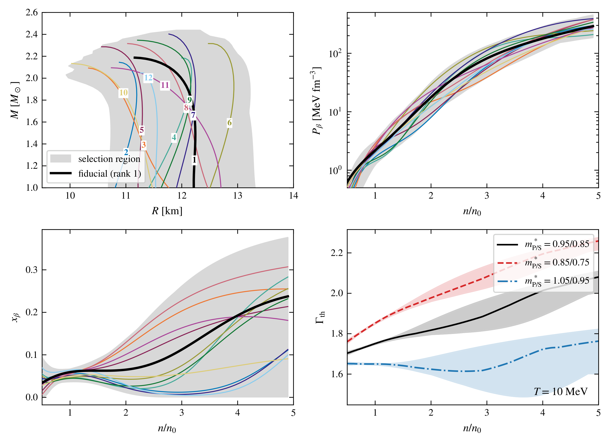
图注：The delivered simulation ensemble: the fiducial member (rank 1) and the eleven further ranked members, over the full support of the selection region of \(\cref{sec:selection}\) (grey: the envelope, at each mass or density, of every catalogue member inside the region). Panels: mass--radius curves, cold $\beta$-equilibrium pressure $P_\beta(n)$, equilibrium proton fraction $x_\beta(n)$, and the thermal index $\Gamma_{\rm th}(n)$ at $T = 10$\,MeV. In the first three panels the fiducial (rank 1) is the thick black curve and the remaining members are rank-coloured; each curve is numbered by its rank, inline in the mass--radius panel only. The $\Gamma_{\rm th}$ panel shows the three delivered effective-mass levels as linestyle ($\pm0.10$ about the sector-split reference $m^*_{\rm PNM}/m^*_{\rm SNM} = 0.95/0.85$); each shaded band is the member-to-member envelope, which the split (composition-dependent) effective masses render non-negligible ($\Delta\Gamma_{\rm th} \sim 0.1$--$0.3$ across the ensemble), unlike the flat-$m^*$ case.
对应解读：“建议重点查看的图表”第1、2、6、7项，以及“关键图表逐图导读”中关于12成员ensemble、有限温热部门图和实际模拟使用的段落。
入选理由：这是本文交付成果的核心图，直接展示12个排序EOS成员、fiducial曲线、质量–半径关系、冷β平衡压强、质子分数以及T=10 MeV下不同有效质量变体的热指数。它同时回答ensemble是否覆盖冷部门和热部门不确定性，也是模拟者最需要嵌入日报的图。
来源与置信度：\(arxiv_source\)；high；\(arxiv_source\) / paper20260804.tex:figure[10]
Fig06
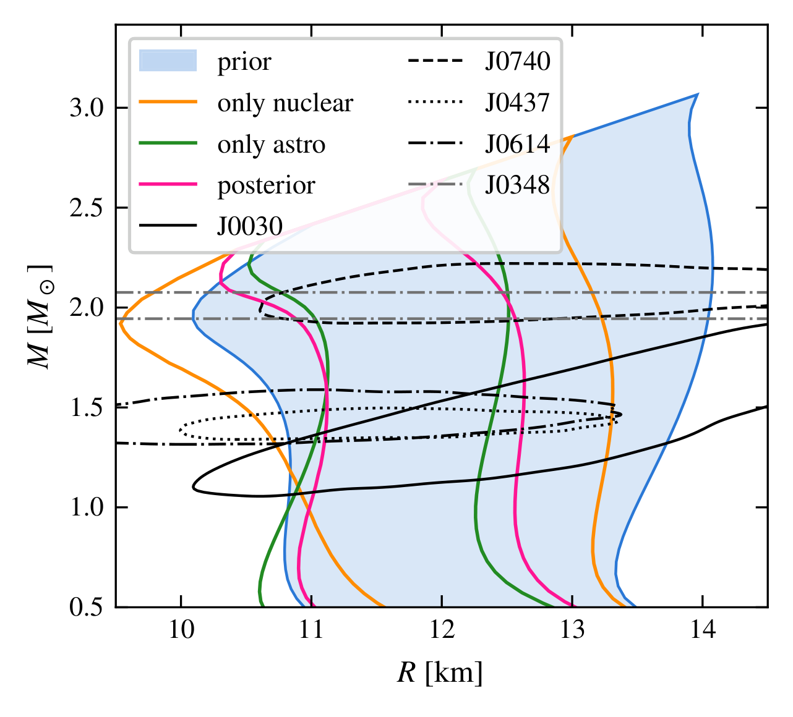
图注：Mass--radius diagram: $90\%$ credible bands for the prior (filled) and the only-nuclear, only-astro, and posterior weightings. Thin black contours: $90\%$ HPD regions of the four NICER $(M, R)$ posteriors entering the astrophysical likelihood; grey dash-dotted horizontal lines: $90\%$ interval of the (Gaussian) J0348 mass measurement.
对应解读：“建议重点查看的图表”第2项和“关键图表逐图导读”图2：M–R关系、NICER可信区域、大质量脉冲星约束。
入选理由：该图明确给出质量–半径后验带，并叠加四个NICER质量–半径90% HPD区域和J0348质量水平带，最适合支撑日报中关于TOV序列、高质量端差异和天文似然诊断的解读。
来源与置信度：\(arxiv_source\)；high；\(arxiv_source\) / paper20260804.tex:figure[6]
Fig07
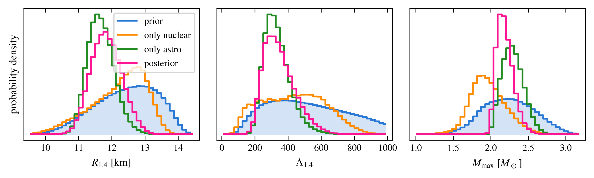
图注：Marginal distributions of $R_{1.4}$, $\Lambda_{1.4}$, and $\Mmax$ under the prior, only-nuclear, only-astro, and posterior weightings. Axes are truncated; the prior's upper tail in $\Lambda_{1.4}$ extends beyond the plotted range.
对应解读：“建议重点查看的图表”第3、4项，以及“关键图表逐图导读”图3、图4：R1.4、Lambda1.4和最大质量的一维后验分布。
入选理由：摘要中的三个headline结果R1.4、Lambda1.4和Mmax都在此图中以先验、only-nuclear、only-astro和posterior权重分布形式呈现，可直接核对中位数、90%可信区间、偏斜度和尾部，是解释后验结果不可缺少的图。
来源与置信度：\(arxiv_source\)；high；\(arxiv_source\) / paper20260804.tex:figure[7]
Fig05
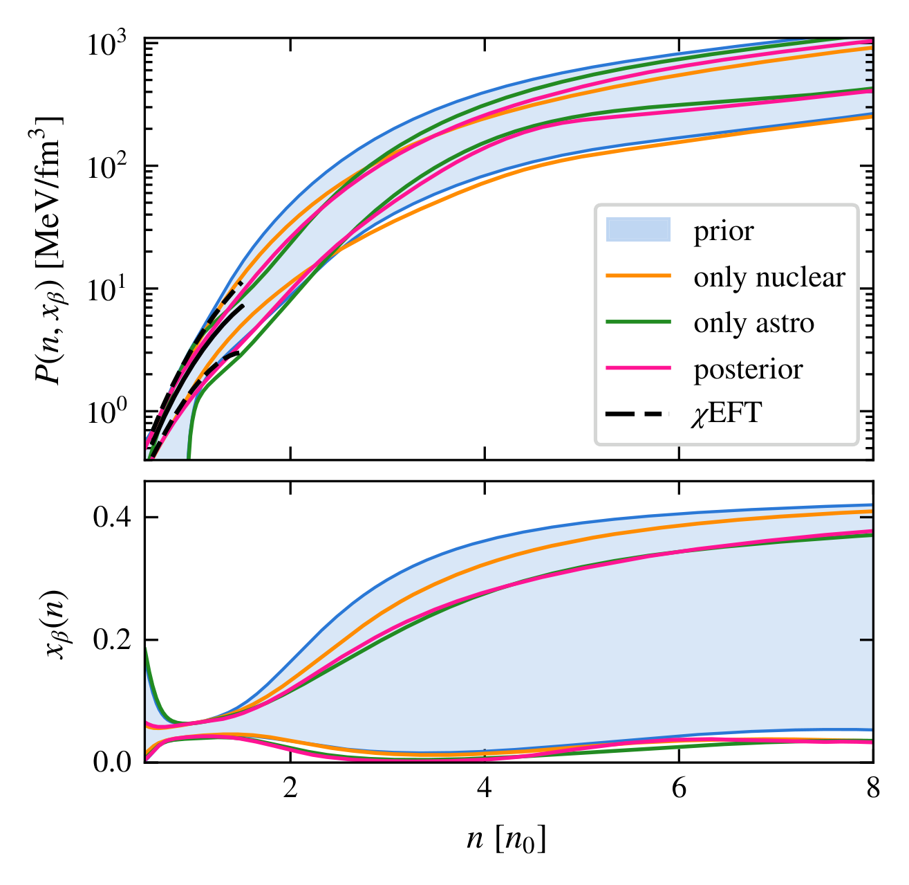
图注：$\beta$-equilibrium pressure (top) and proton fraction (bottom) versus baryon density: $90\%$ credible bands for the prior (filled) and the only-nuclear, only-astro, and posterior weightings. Black lines: \(\ac{xeft}\) mean and $90\%$ credible band \(\citep{Gottling:2025ohe},\) drawn over the reliable range of the N$^3$LO calculation ($n \le 1.5\,n_0$), which is also where the continuous \(\ac{xeft}\) likelihood of \(\cref{sec:nuclear_likelihoods}\) acts.
对应解读：“建议重点查看的图表”第1项和模型拟合段落中关于低密度手征有效场论约束、β平衡压强–密度诊断的讨论。
入选理由：该图展示β平衡压强和质子分数随重子数密度的先验与后验可信带，并叠加χEFT均值和90%可信带，能直接说明核理论似然如何约束低密度EOS以及压强后验如何收缩。
来源与置信度：\(arxiv_source\)；high；\(arxiv_source\) / paper20260804.tex:figure[5]
Fig03
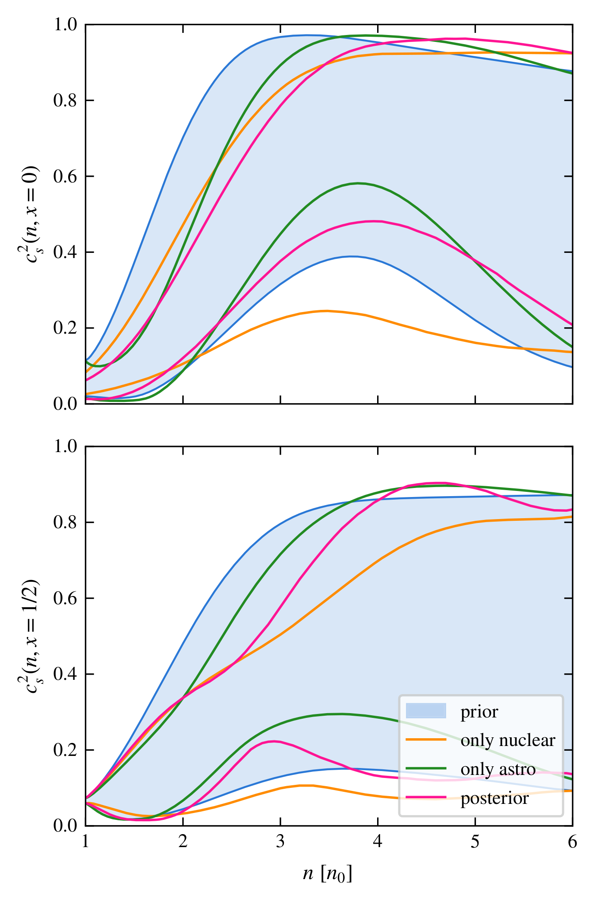
图注：Squared speed of sound at fixed composition in \(\ac{PNM}\) (top) and \(\ac{SNM}\) (bottom): $90\%$ credible bands for the prior (filled) and the only-nuclear, only-astro, and posterior weightings.
对应解读：“建议重点查看的图表”第1项，以及“关键图表逐图导读”图1中关于声速–密度后验带和高密度展宽的说明。
入选理由：该图给出PNM和SNM中固定组成平方声速的先验、only-nuclear、only-astro和posterior 90%可信带，正好对应日报强调的高密度声速展宽、因果性附近行为和理论/天文约束共同作用。
来源与置信度：\(arxiv_source\)；high；\(arxiv_source\) / paper20260804.tex:figure[3]
Fig11
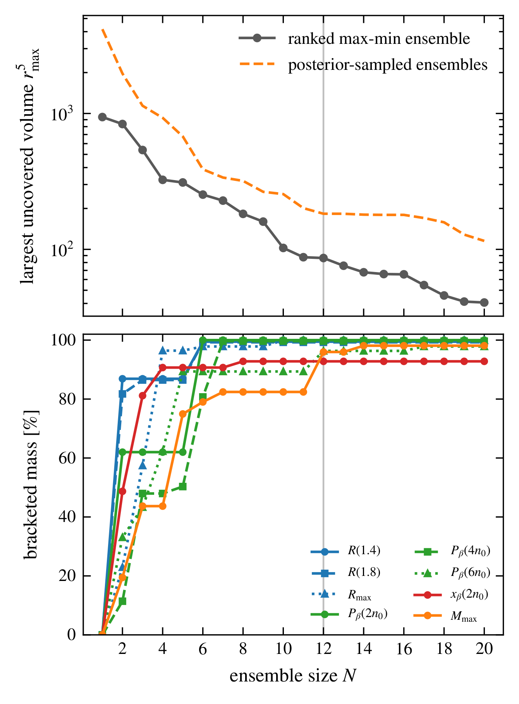
图注：Convergence of the ranked ensemble with the number of delivered members $N$. Top: the volume $r_\mathrm{max}^5$ of the largest member-free ball in the variance-scaled five-dimensional selection space, for the ranked max--min ensemble and for ensembles of $N$ random posterior draws (median over 16 realisations). Bottom: the posterior mass whose observable value lies between the member minimum and maximum, for each labelled observable. Catalogue \(\acp{EOS}\) for which an observable is undefined, e.g.\ $P_\beta(6\,n_0)$ when the table ends below $6\,n_0$, count as not bracketed. The vertical line marks the delivered $N = 12$.
对应解读：“建议重点查看的图表”第5、6项，以及详细解释中关于12成员ensemble代表性和覆盖后验不确定性的讨论。
入选理由：该图不是传统二维角图，但直接量化12个成员随N增加对五维选择空间和各观测量后验范围的覆盖程度，能支撑‘不要只跑fiducial EOS’以及ensemble是否足以代表系统误差的判断。
来源与置信度：\(arxiv_source\)；high；\(arxiv_source\) / paper20260804.tex:figure[11]
强相关工作
这篇工作属于同类源/同类问题研究：中子星 EOS 多信使约束、有限温 EOS 表构建和双中子星并合模拟基准选择。应与 GW170817 的潮汐约束论文、NICER 对 PSR J0030+0451 和 PSR J0740+6620 的质量–半径论文、大质量脉冲星 Shapiro 延迟质量测量、以及核理论 EOS 综述一起读。检索关键词可用 “neutron star equation of state multimessenger inference finite temperature EOS ensemble SROEOS Skyrme speed of sound GW170817 NICER”。
与相似工作相比，本文的特色不是提出单一更精细的微观核模型，而是把大规模后验压缩成排序的有限温表格集合。已有许多论文使用分段多项式、谱表示、声速参数化或高斯过程推断冷 EOS；也有很多模拟论文比较 DD2、SFHo、LS220 等固定表。本文处在两者之间：它把推断结果转化为模拟可用对象。潜在张力在于参数化选择和相变表达能力；若其他工作使用更灵活的非参数 EOS 或允许强一阶相变，可能得到不同的高密度尾部和最大质量分布。
同一事件 / 同类源线索：
- https://arxiv.org/abs/2608.04092
- https://arxiv.org/pdf/2608.04092
- https://arxiv.org/abs/1710.05832
- https://arxiv.org/abs/2105.06980
- https://arxiv.org/abs/2105.06979
- https://arxiv.org/abs/1304.6875
相似工作：
- https://arxiv.org/abs/1805.11581
- https://arxiv.org/abs/1908.10352
- https://arxiv.org/abs/2002.01937
- https://arxiv.org/abs/2104.04526
基础理论 / 方法工作：
- https://arxiv.org/abs/0711.4226
- https://arxiv.org/abs/0808.2810
- https://arxiv.org/abs/0911.3535
- https://arxiv.org/abs/1211.0854
- https://arxiv.org/abs/1605.06011
相反观点 / 张力线索：
说明
评分由 LLM 给出初评，再由本地阈值策略过滤；IACT、TeV 伽马射线和高能中微子天文学按重点方向处理。